| GENEZ―4 ジーンズ GENEZ ジーンズ (富士見ファンタジア文庫) | |
| 深見 真 & ｍｅｂａｅ | |
| 富士見書房 (2011) | |

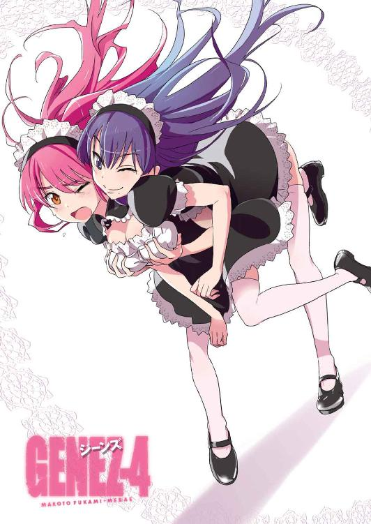
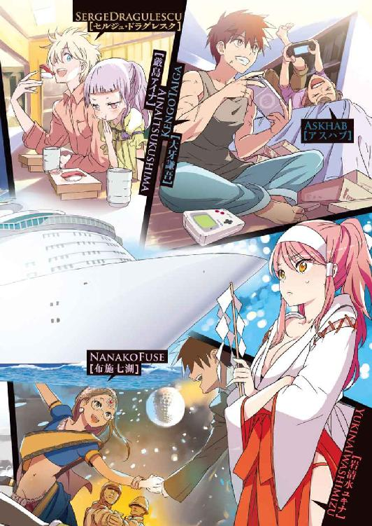
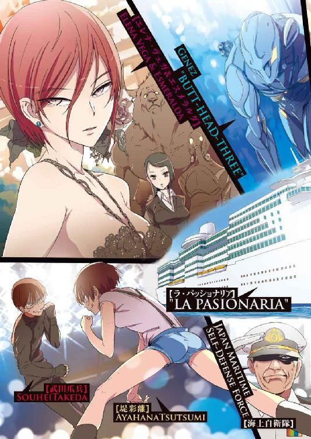
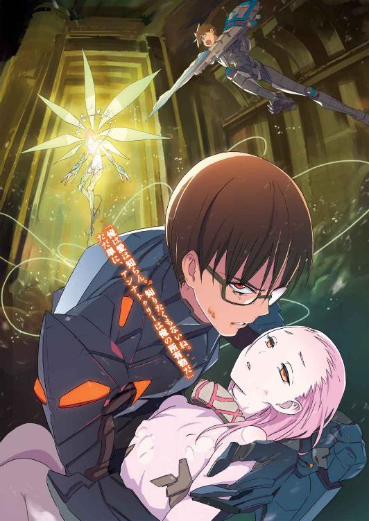
本作品の全部または一部を無断で複製、転載、配信、送信したり、ホームページ上に転載することを禁止します。また、本作品の内容を無断で改変、改ざん等を行うことも禁止します。
本作品購入時にご承諾いただいた規約により、有償・無償にかかわらず本作品を第三者に譲渡することはできません。
本作品を示すサムネイルなどのイメージ画像は、再ダウンロード時に予告なく変更される場合があります。
本作品は縦書きでレイアウトされています。
また、ご覧になるリーディングシステムにより、表示の差が認められることがあります。
口絵・本文イラスト mebae
ＣＯＮＴＥＮＴＳ
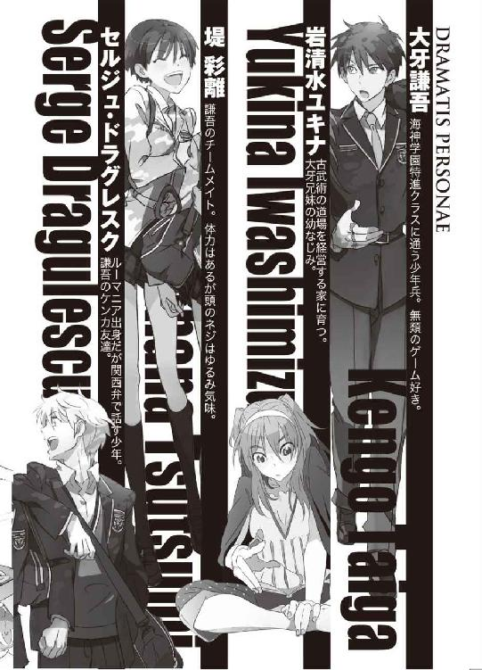
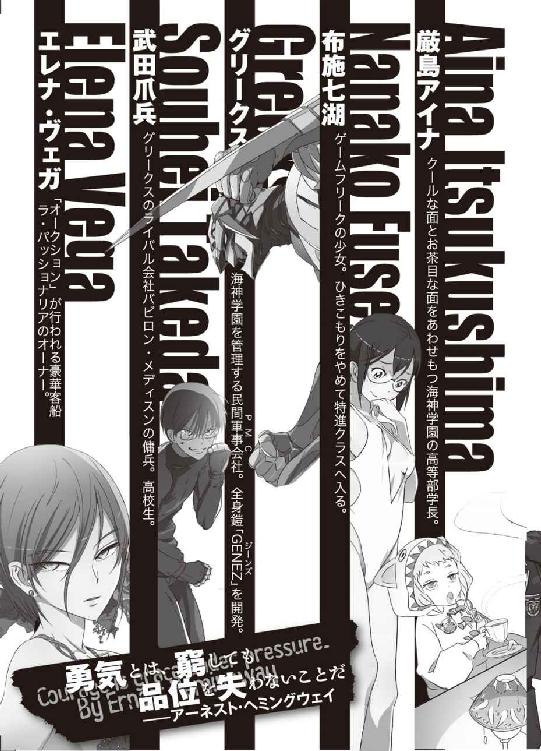
プロローグ
銀座の洒落たオープンカフェで、ふわふわとした雰囲気の少女が人を待っている。大きな椅子にちょこんと腰をおろしたその姿は、まるで高級な西洋人形のようだ。ドレスのようなシルクのブラウスに、柔らかく膨らんだフリルつきのスカート。長い手袋をつけて、左手で日傘をさしている。
少女の名は、厳島アイナ。世界屈指の大財閥厳島一族の天才の一人だ。すでに八か国語を話し、頭脳明晰で、世界各地の大学で国際政治学、軍事学、情報理工学を学んだアイナは、海神学園高等部特進クラスの責任者として、学生傭兵たちから絶大な信頼を勝ち得ていた。生徒たちは親しみをこめて、アイナのことを「こども学長」と呼ぶ。
アイナは、右手だけで器用に文庫本を読んでいた。スイス出身の軍人アントワーヌ・アンヌ・ジョミニの『戦争概論』だ。テーブルの上では注文した紅茶が湯気を立てているが、一口つけただけでやめてしまった。安い葉を使っているのだろう、舌の肥えたアイナには合わない味だった。
アイナが待っているのは、特進クラスの学生傭兵──セルジュ・ドラグレスクだった。
セルジュからプレゼントをもらったお礼に、寿司をごちそうすると約束した。今日が、まさにその日だ。銀座七丁目に、いちげんさんお断りの立派な寿司屋があり、カフェで合流してそこに向かう予定。これはもう、完全にデートと言っていいだろう。
アイナのような容姿端麗な少女が、華美な衣服で身を包み、オープンカフェで優雅に文庫本を読んでいる姿は、恐ろしく絵になるものだ。通りすがりの人々の中には、思わず足を止めて二度見する者もいた。映画や雑誌の撮影かと思って、カメラを探す者もいたほどだ。
傍目には優雅に見えるアイナだが、本当は心臓がどきどき高鳴っている。
（......変なきもち......）
いつも眠そうな顔をしていて、実際、少し時間があれば寝てばかりいる育ち盛りのアイナ。今日は、待ち合わせ時間より三〇分も早くやってきて暇をつぶしているのに、まったく眠気が襲ってこない。
ふとした切っ掛けでセルジュのことを意識するようになって、一度気になりだすと、あとはもう止まらなかった。
自分にまだ恋愛は早い。どうせ、自分のような子供に、本当の恋愛というものがわかるわけがないのだ。
（だからたぶん、これは恋ではない。私は、セルジュのことが好きなわけじゃないんだ......）
と、アイナは自分自身に言い聞かせる。
「あら、お待たせしました」
しかしようやく落ち着きを取り戻したアイナの気持ちを、怪しい関西弁の一声がいともたやすく再びかき乱した。
「せ、セルジュ」
あくまで平静を装いつつ、アイナは文庫本を畳んでバッグに片付けた。どうして、声を聞いただけでこんなに嬉しいのだろう。どうして、顔を見ただけで心臓の鼓動が激しくなってしまうのだろう。戸惑うことばかりだ。
「おかしいなあ、待ち合わせ前の一〇分前にはつくようにやってきたのに......俺、間違えてませんよね？ 時間」
「......セルジュが遅れたのではなく、私が早すぎたみたいですね......」
「ああ、なるほど」と、納得したように手を叩いて小さくうなずくセルジュ。「よかったよかった。まさか学長待たせるわけにはいきませんから」
「じゃあ、いきましょうか」
アイナが立ちあがると、セルジュはテーブルの上を見て「学長、紅茶が残ってますよ」と言った。
「ああ、これはいいんです。口に合わなかったんで」
「そらあかん。もったいないですよ。俺がもらっていいですか」
「も、もちろん」
言われた瞬間、アイナは間接キスだと気づいて頰を紅潮させたが、それをセルジュに見られたくないので日傘を顔の真上にやった。これはどういうことなのか、とアイナは戸惑う。セルジュはいつも通りの顔だ。間接キスなんて意識していないのかもしれない。というか、意識しないほうが自然なのだ。そもそもセルジュは見た目よりもずっと年をとっているから、大人のキスもそれ以上のこともやったことがあるのは間違いないわけで──。アイナの思考がぐるぐると、迷路に入り込んだように混乱していく。
「じゃあ」
そんなアイナの動揺をよそに、セルジュはぐび、と紅茶のカップを傾けた。
厳島一族の天才少女と呼ばれていても、恋愛に関しては同年代にも大幅なおくれをとっているアイナ。たかが間接的に唇が触れ合ったくらいで、自分でも信じられないほど胸が熱くなってしまう。
「喉が渇いて渇いて......ありがとうございました」
あっという間に飲み干して、セルジュは満足げな顔だ。
「......ふん......人が注文したものまで飲んでしまうなんて......まったく意地汚い......」
意識して、アイナは憎まれ口をたたく。
「いやいや、もったいないのはいけません、って」
生徒と学長という立場上、セルジュは敬語を使ってくる。だが、セルジュがアイナを子供扱いしているのは明らかだ。どこまで背伸びすれば自分が彼に釣り合うのかわからなくて、アイナの小さな胸はときどき切なく痛む。
＊
銀座七丁目の老舗の寿司は美味としか言いようのないものだった。どの魚にも上質の脂がのっていて、比喩ではなく口の中で綿菓子のように溶ける。その店は、塩、ゆず、わさびだけで味付けがしてあり、醬油はつけない。最低限の味付けで、逆に素材本来の味を強調するのだ。シマアジにヒラメ。カンパチ、アカガイ、ボタンエビ──。ウニは、壱岐産の最高級。中トロも大トロもどんどん頼む。
「......中トロは炙りで」
「俺もそれお願いします。学長、中トロ炙り注文するの三回目ですけど、好物ですか？」
「......うん......中トロ......好き......」
「確かに絶品や。美味いなあ、美味い！」
「よかった......」
厳島一族の超英才教育を受けて、アイナは人間的とは言い難い生活を送ってきた。それが、セルジュと一緒にいるとごく普通の人間らしい幸福を嚙み締めることができる。皮肉な話だ。セルジュは人間ではない、戦闘用ゴーレムなのに。
楽しい食事の時間が過ぎて、二人はタクシーで海神学園に戻った。ずっと笑顔が絶えないまま、学生寮の前で別れる。またそのうちどこかに遊びに行こうと約束してから。
（楽しかったな......）
アイナの自宅は、海神学園の敷地内にある。離れの一軒家だ。そこに向かう途中、アイナの携帯電話に着信がある。
「はい、厳島アイナ」
『私だ』
「......お兄さま......」
厳島シキサギ──アイナの兄だった。
海神学園の敷地には大学部とそのキャンパスも入っている。
大学部の学長が、厳島式鷺だ。
アイナは進路を変更し、シキサギのもとに向かう。大学部にも特進クラスがあり、校舎の地下にはグリークスの支部施設が存在する。
厳重な警備下にあるエレベーターで、地下四〇メートルまで降下。エレベーターを出て少し歩くと、大型モニタが大量に設置された広い部屋に出る。海神学園、グリークス日本支部の作戦指令本部だ。部屋には数百という数の制御卓やパソコンが並び、それぞれに専門のオペレーターがついて作業している。
その作戦司令本部に、冷徹な美貌の青年──シキサギがいた。切れ長の目に、唇には冷笑を浮かべ、今日のスーツはアルフレッド・ダンヒルだ。
「......なんの御用でしょう......」
「よくきてくれた」
シキサギは、学園内に設置された監視カメラのモニタに視線を落としていた。そこには、楽しそうに並んで歩くアイナとセルジュの録画映像が再生されている。
「高等部の学長が戦闘用ゴーレムと二人きりで外食か......感心しないな」
というシキサギの冷たい言葉に、アイナは氷のような無表情で「......別に、禁じられているわけではないでしょう......」と答えた。
「まあ、それはそうだが」
シキサギは苦笑を漏らす。
「......それを咎めるために呼び出したんですか......」と、アイナ。
「違うよ。場所を移そう。装備課の新兵器実験区画へ」
大学部地下のグリークス支部の中でも、最高級セキュリティに設定されている装備課の新兵器実験区画。その名の通り、グリークスの社員たちが仕事で使うための装備を開発し、それを実験するための部署である。地下とは思えないほどの広い空間に、体育館のようなかまぼこ型の建物が数十棟も並び、念入りな評価試験が繰り返されているところだ。
シキサギが向かったのは、そのうちの一つ、巨大プールが設置された「水中・水上兵器評価試験場」だった。プールといっても、それは小型潜水艦も入るような東京ドームに匹敵するサイズの水槽型で、人工の波や水流を発生する装置も付属している。
虹彩や声紋までチェックする厳しいセキュリティの分厚い特殊合金製の扉を抜けて、試験場の中に入ったアイナが目にしたのは──プールサイドに佇む異形の鎧だった。
「......これは？」
アイナの問いに、シキサギが答える。
「海神学園高等部の特進クラスに支給される三台目の『ＧＥＮＥＺ』だ」
異形の鎧──人間を、人間以上のものに変える強化外骨格。それがＧＥＮＥＺ。
その新たなＧＥＮＥＺは、プールサイドに設置された整備用の機器──モニタリング用のパソコンやセンサー類──に接続され、太い鎖で封印された魔神のようにも見えた。
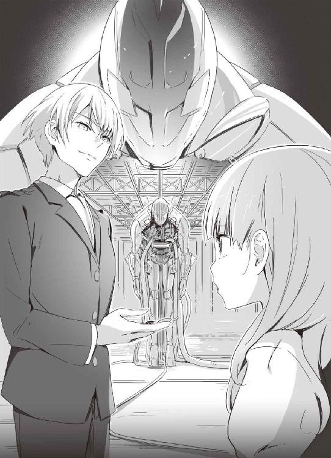
「古代ハクジラ亜目、スクアロドン型だ」と、シキサギ。
「......水中戦に強いタイプですね......」
「無論、それだけではない。水中以外では役立たず、みたいなシロモノをわざわざ大金かけて作るわけがないだろう」
「......これが、海神の高等部特進に？」
「本社のポセイドンに持っていかれそうなところを、私が横からぶんどった。向こうには遺伝子の適合者がいなかったんだから、まあ当然といえば当然だがな」
シキサギが言った。
ギリシャにはグリークスの本社が存在し、さらに本社が直接経営する学生傭兵の育成機関がある。海神学園の本家本元とでもいうべきその学校の名前が──、
ポセイドン・アカデミー。
海神と同じく、中高大学一貫教育の全寮制。アイナもよく知らないが、ポセイドンも二台のＧＥＮＥＺを保有し、ギルガメシュとナイチンゲールのユニットを一組抱えているという。
「......感謝します」
アイナは素直に感謝し、頭を下げた。アイナには、この新型ＧＥＮＥＺのことが知らされていなかった。何か、上層部で政治的な駆け引きがあったのだ。
グリークス本社と、グリークスの日本支部は別に敵対しているわけではない。ただし、厳島一族には野心がある。グリークスを内部から乗っ取って、自分たちの会社にしようという計画をずっと前から水面下で進めている。それを実現するには、なるべく日本支部に強い戦力を集めておく必要がある。
「一つ貸しだな」
「......さっきお兄さまは『向こうには遺伝子の適合者がいなかった』と言いました。ということは、こちらには新たな獣系遺伝子の適合者が見つかったんですね？」
コンパクトかつ高性能な制御系がなければ、強化外骨格は実現できない。そこでグリークスは絶滅動物の細胞をもとに特殊なＤＮＡコンピュータを作りあげ、それをＧＥＮＥＺに搭載した。人工の脳細胞あるいは神経系と言ってもいい超高性能ＤＮＡコンピュータにはしかし欠点があり、遺伝子的な相性が適合しなければ使いこなすことができない。
「そうだ」
シキサギは小さくうなずき、鋭く告げる。
「この三台目、スクアロドン型を着用するのは──」
第一章 インド洋セーシェル諸島沖臨海学校
１
「臨海学校なんて初めてだ！」
と、岩清水ユキナは喜色満面で言った。
「しかも、海外だもんね」
相槌を打ったのは、布施七湖だ。
成田空港を出発した国際便の飛行機内。ユキナと七湖の他に、大牙謙吾とセルジュ・ドラグレスク、堤彩離もいる──つまり、海神学園高等部特進クラスがそろっている。同じチームのメンバーは、座席も近い。
この飛行機は海神学園高等部特進クラスの貸し切りだ。一応民間機を使っているが、日本政府から特別な許可を受けて、銃火器が持ち込まれている。クラスメイトの中には、機内で拳銃やアサルトライフルを整備している者が多い。
「海外なんて、ちょっと贅沢じゃないかな」
こういった旅行の経験がほとんどない七湖が、嬉しそうにつぶやく。それを聞いた謙吾は、「贅沢というか......海神の臨海学校は、日本国内でやると法律的に問題があるから......」と苦い顔でつぶやいた。
「ん？ 法律？」
ユキナは、怪訝そうな顔をした。
「いや、なんでもない......」謙吾は、何かをごまかすように首を軽く左右に振る。「ああ、確かに楽しみだな」
それから半日後──。
「なんだこれ......」
ユキナが、波の飛沫を浴びながらつぶやく。
「なんだこれー!?」
もう一度、もっと大きな声で叫ぶ。
「なにって......臨海学校や」
セルジュが、まったく動じていない声で答えた。
「『プライベート・ライアン』の上陸シーンってこんな感じじゃなかったっけ......」
そう言ったのは、青ざめた顔の七湖だ。
「ノルマンディー上陸作戦か......」
と、実際にその作戦に参加したことがあるセルジュが遠い目をした。
「あの作戦に使われたのは上陸用舟艇」と、謙吾。「今、俺たちが使ってるのはゾディアック・ボートだな。全然違う」
ゾディアック──エンジンつきのゴムボート──に、謙吾、ユキナ、セルジュ、彩離、七湖の五人が乗っている。フル回転の軍用高性能エンジンがうなりをあげて、高速で波を切って海上を進む。ここは、インド洋。セーシェル共和国マエー島の沖合二〇〇キロの場所。ボートが目指しているのは、セーシェル諸島に属する小さな無人島だ。
「やってることは同じでしょ！」
七湖が言うと、謙吾が答えた。
「あれは奇襲上陸作戦で橋頭堡確立が目的だ。今、俺たちがやってるのは少数での潜伏型長距離偵察作戦。やっぱり、全然違う」
「あー！ そういう意味じゃなくて！」
その時、ボートが一際大きく揺れて、七湖は舌を嚙みそうになった。
ベンガル湾の洋上に、軍用艦が浮かんでいる。
民間軍事会社グリークスが、退役した米海軍のタラワ級強襲揚陸艦を購入し、最新鋭の改修を施した艦だ。船名は米海軍時代のものから変更されて、現在は「ヒポクラテス」とされている。全長およそ二六〇メートル。満載排水量四万トン。二〇〇〇人の兵士と、二〇機以上のヘリコプターを運搬できる。原子力空母ほどの大きさではないが、その排水量は日本の海上自衛隊が保有する一般的な護衛艦のおよそ六倍であり、遠目には海の上に小さな城が建っているようにも見える。
無人島での潜伏型長距離偵察作戦を終えた謙吾たちのチームは、強襲揚陸艦ヒポクラテスに帰還した。特殊作戦用の装備でゾディアック・ボートに乗り込み、夜陰に乗じて無人島に上陸し、そこに待ち伏せているセーシェル共和国の陸軍とペイント弾を使った模擬戦を行う──そんな訓練内容だった。セーシェル共和国は、グリークスに好意的な国家の一つなのだ。
使っているのはペイント弾でも、それを撃ちだしているのは実銃である。体に当たれば、防弾装備を着けていても骨折することがあるし、気が遠くなるほどの激痛が走る。特進クラス一年目の岩清水ユキナと布施七湖は、あまりにハードな訓練内容に疲れ果てて、ヒポクラテスの飛行甲板上で半ば死んだように休憩している。
「ああ......」
そろそろ日が暮れる時間帯だが、インド洋上の日射しはきつく、まるで猛暑日の真昼のようだった。それなのに謙吾たちが船内に戻ることができないのは、これから一〇分後にヘリコプターに乗り込んで、ロープを使った降下訓練が始まるからだ。
飛行甲板には、攻撃ヘリＡＨ－１Ｗ、汎用ヘリＵＨ－１Ｎ、輸送ヘリＣＨ－46Ｅ、大型輸送ヘリＣＨ－53Ｅなどが並んでいた。飛行甲板下の格納庫には、Ｖ／ＳＴＯＬ攻撃機ハリアーIIも数機存在する。グリークスはこのような強襲揚陸艦を五隻、軽空母三隻、駆逐艦やフリゲート艦も保有し、世界中の作戦をカバーしていた。
謙吾、ユキナ、セルジュ、彩離、七湖──チーム「ビーバス＆バットヘッド」の面々は、それぞれ学校指定の作戦用スイムウェアを着こんでいた。
「暑い......」
甲板に体育座りの姿勢で、ユキナは額に浮いた汗を手の甲でぬぐった。
「インド洋だからな」
当たり前のことを、とでも言いたげな顔で謙吾。
男子の水着は、ロングジョンといわれる黒いボディスーツ型で、足首から胸までを覆うがっちりとしたものだ。謙吾もセルジュも鍛えられているので、スポーティな水着が競泳選手のようによく似合っている。
そして女子の水着も学校指定の作戦用で、ハイレグカットのオーソドックスなデザインだ。
「騙された......」
謙吾の幼なじみであり、最も重要な特殊能力者「ナイチンゲール」でもあるユキナは、鋭く凛々しい美貌の持ち主。訓練で濡れた体はまだ乾き切っていない。熟れた白桃のような豊かな胸の谷間に、肩や鎖骨のくぼみにたまっていた水滴が滑り落ちる。手足が長いので水着のデザインが映える。
「騙されたというか......」
七湖は細身ながら女性らしい体の隆起はそれなりで、くびれたウエストが特徴的だ。長くひきこもりをやっていて不健康だった七湖も、特進クラスに入ってからは体力がついてきている。ぴっちりとした水着が無駄のないボディラインに食い込み、それを指で直すしぐさが小悪魔的だった。
「特進クラスだし、予想しておくべきだったね」
「いつもより楽しいじゃん」
と、テンションの低い二人に、彩離は気軽な調子で声をかけた。
「インド洋だし......晩はインドカレーがいいな！ あたしにカレーを食わせろ！」
格闘技を長くやっている彩離の引き締まった体を、学校指定の水着がギュッと締め上げている。しなやかな肢体にぴったりとフィットした薄地の水着。少女らしい丸みを帯びたヒップのラインや浮き上がった鎖骨はセクシーだが、口を開けば化けの皮がはがれて子供っぽさがむき出しになるのが彩離だ。
男子も女子も、水着の上には予備弾倉やサバイバルキットが詰まったタクティカルベストを羽織り、ＨＫ４１７アサルトライフルを背負っている。
「カレーなんか死んでもイヤだ......」
と、泣きそうな顔で七湖。
「でもたぶん、今晩の食堂のメニューはカレーだと思うぞ」
謙吾がそう言うと、ユキナと七湖は「え!?」と目を丸くした。
「この強襲揚陸艦は、食堂の料理長が元海上自衛隊員だからな」と、謙吾。「そのときのクセで、金曜日は必ずカレーなんだよ」
海上での生活が長くなると、人間の曜日の感覚が狂ってくる。そこで海上自衛隊では、毎週金曜日は必ずカレーを出して、体内カレンダーを正常に戻すのだ。
ヘリコプターの回転音が近づいてくる。
「楽しい訓練の時間だぞ」
謙吾がヘリを見上げて、事務的な口調で言った。
２
夕飯のメニューは本当にカレーだった。今日一日でたっぷり日焼けして疲れ切ったユキナや七湖は、もう少しさっぱりと食べられるものの方がよかったが、腹は限界まで減っているのでぜいたくは言えない。
「牛肉たっぷりだぞ、ガハハ」
と、料理長の中年男性が豪快に笑っていた。その言葉通りの、具だくさんの豪華なカレーを見ても、ユキナたちは歓声をあげる気分にはなれない。しかし、他の特進の生徒たちは美味そうにガツガツと食う。学生とはいえ、歴戦の傭兵たちはさすがにタフだ。食えるときに食えるだけ食うのがプロの兵隊というものだ。
食事のあと、順番でシャワーを使い、消灯時間までは自由となる。訓練が終わったら、艦内では制服かジャージで行動することになる。
ユキナ、七湖、彩離の三人は、謙吾たちと一時別れて兵員居住区画で一休みすることにした。
兵員居住区画には大部屋がいくつも存在し、そこに大量の二段ベッドが並んでいた。ベッドの周囲には小さなテーブルや荷物を入れるための棚があり、安めのカプセルホテル程度の生活はできるようになっていた。
この大部屋には、女子生徒ばかりが集まっている。男子の大部屋までの通路には、生徒会憲兵隊や風紀委員の見張りが立つ。いくら学生傭兵とはいえ、大勢の思春期の少年少女が共同生活をすることになるので、間違いが起きないよう配慮されているのだ。
ユキナは二段ベッドの上、その下に彩離。隣のベッドの一番上に七湖。七湖の下は空きになっている。
個室は教員用のものしかなく、大部屋にはいくつもの間仕切りが設置され、最低限のプライバシーが確保されているが、快適な空間とは言い難い。それでも、地獄の訓練のあとベッドで横になると天国のように感じる。──と、そんなことを思ったユキナは自分の錯覚に気づいて軽い恐怖を覚えた。いくらなんでも、こんな安っぽい二段ベッドが天国だなんてありえない！ こうやって、兵士として調教されていくのだろう......。
「今年の臨海学校は楽だなー！」
彩離が、ベッドの上でごろごろ転がりながら言った。
「どういう体力してたらそんな風に思えるんだろう......」
と、疲労困憊で枕に顔を埋めている七湖。
彩離は上体を起こし、偉そうに腕を組んで「積み重ねだね。人間は、どんな環境にも慣れていくものなのだ」と言った。
「彩離のくせに、それっぽいことを言ったな」とユキナ。
「うへへ、褒められたー」喜ぶ彩離。
「......褒めてたかな？」首を傾げる七湖。
確かに、彩離の言う通りだ。
人間はどんな環境にも慣れる。そのことを、ユキナは海神学園で知った。異常なことが毎日続けば、いずれそれが「日常」になる。
海神に入る前──ユキナは、ごく普通の高校生活を送るものだと思っていた。
子供のころ、ユキナの遊び相手は大牙謙吾と涼羽の兄妹だった。
謙吾と涼羽の母親は、もともと政治家大牙厳一の愛人だった。正妻が事故死したあとに、子連れで後添いとして一緒に暮らし始めたのだ（のちに、この兄妹の母親も爆弾テロに巻き込まれて死亡する）。兄妹が愛人の子供だったのは有名で、近所の子供たちがそれを理由にひどいいじめを繰り返していた。
ユキナは、そういうことが許せない性格だった。兄妹を守って暴れているうちに、いつの間にか「漢女姉さん」という微妙なあだ名がついていた。武道の家で育ったおかげか、男子のいじめっ子に正面からぶつかっていってもまったく怖くなかった。
幼なじみの謙吾とユキナ。
しかし謙吾と涼羽は大牙厳一の命令で「普通の世界」から引き離されてしまう。
やがて涼羽は世界的なＶＩＰの家庭教師に。
謙吾は少年兵専門の訓練キャンプを卒業後、グリークスに入った。
そしてユキナは、海神学園で謙吾と再会する。久しぶりの謙吾は、見違えるほどたくましくなっていたのだ。
ユキナの窮地を謙吾が救い、謙吾の命をユキナが救った。
唇でつないだ、命のきずな。二人のキスは、義務なのか恋なのか。
ユキナはナイチンゲールで、謙吾がギルガメシュ──。
「今は自由時間だよね？ どっか遊びに行こうよ」
彩離が提案した。
少し昔のことを思い出していたユキナの意識が今現在に戻ってくる。
「ええー......」
七湖が嫌そうな顔をした。ユキナも同感だ。
そこですかさず彩離は「謙吾やセルジュも、今は遊びに出てると思うよ」と言い、七湖が仕方なく「......じゃあ、いく」と誘いに乗った。ユキナもしぶしぶ首を縦に振る。
三人は女子の大部屋を出た。
強襲揚陸艦ヒポクラテスの艦内には、大型液晶テレビが設置された視聴覚室、ゲームセンターのような娯楽室などもある。海上作戦活動が長期にわたった場合、乗員のストレスを軽減する手段がないと任務の遂行に支障をきたすからだ。
ユキナたちが娯楽室に入ると、そこで謙吾とセルジュがエアホッケーで対決していた。
エアホッケーのルールはシンプルだ。マレットという、卓球やテニスでいうラケットにあたる道具を使い、盤上で円盤状のパックを打ち合い、相手のゴールに入れたら得点になる。この船の娯楽室にあるエアホッケーは一〇点先取で勝負がつくようになっていた。
「たまにやると面白いんだよな」
カン！ とパックをマレットで強打しつつ、謙吾がつぶやいた。
「俺は、こういうの苦手や......」
セルジュは謙吾からの攻撃を打ち返す。
ところが、セルジュは人間ではない。「人間用」に作られたスポーツ系のゲームをプレイしたら、どうしても力が余ってしまう。つい熱くなると力のセーブがきかなくなる。
「ああ、やってしもうた！」
数回打ち合ったあと、セルジュが打ったパックがゲーム盤を飛び出した。そのパックはほとんど弾丸のような勢いで飛翔し、びゅん！ と風を切る音を立てる。
殺人的な兵器と化したパックを、分厚いてのひらががっちりと受け止めた。
その手は、たまたま近くを通りかかった特進クラスの先輩、軍隊格闘技の達人、顔が老けていることを気にしている若者──林力也のものだった。
「俺じゃなかったら、大ケガさせてたかもしれんぞ。バカもん！」
修学旅行は学年ごとだが、臨海学校は任務についていない特進クラスの生徒は全員参加ということになっている。
「えろうすんまへん！」
セルジュは慌てて頭を下げる。
それが気に食わなかったらしく、林は「なんだその態度。ふざけてるのか！」とセルジュに詰め寄った。
「普通の関西弁ですやん！」
「お前の関西弁は日本人からするとちょっと変なんだよ！」
「どこ出身なんですか、林先輩は」
「愛媛」
という林の答えを聞いて、ことの成り行きを見守っていた七湖が「ぷふっ」と噴き出した。それにつられて、怒られている最中のセルジュも小さく笑ってしまう。
「お前ら......今、なんでちょっと笑った......!?」
林のこめかみに、激怒のため太い血管が浮かんだ。今にも切れてしまうんじゃないかと心配になるほどだ。
「いやいや、馬鹿にしたとかそういうのではなく！」と七湖。
「林先輩には、あんまり似合わへんなあ、と。愛媛って」とセルジュ。
「生まれ故郷に似合うも似合わないもあるか！」林は声を荒らげる。
そのやり取りを聞いて、
「愛媛って......和歌山？」
彩離が言った。
その言葉の意味がわからず、「......はあ？」一同きょとんとした顔になる。
「なにを言ってるんだ、お前は」
全員の疑問を代表して、謙吾が訊ねた。
「いやその......愛媛と和歌山って、ごっちゃにならない？」
彩離の返答を、すかさず七湖が「ならない」と否定。
「でもほら、そっくりじゃん？ 共通点多いっていうか......」
「その二つの共通点って、みかんの産地ってだけだろ！」林が鬼の形相で叫んだ。火に油を注ぐとはこのことだった。「もしかして......すごく馬鹿にされてるのか、俺は!?」
「いや、そういうつもりはないと思いますよ、彩離には」
と、謙吾は一応フォローしておく。彩離はいわゆる──天然だ。ユキナも七湖も多少天然なところはあるが、彩離が一番ひどい。「頭が悪い」を通り越して「かわいそう」なレベルに達しつつある。
そのとき、艦内放送が流れた。高等部のこども学長、厳島アイナの声だ。
『......繰り返します。特進クラス高等部の大牙謙吾、至急、上部車両格納庫まで......』
艦内放送で呼び出された謙吾は、早足で指定された場所に向かった。
そもそも強襲揚陸艦とは、海岸に一瞬で陸上部隊を展開するための軍用艦だ。そのため艦内には、トラック、装輪装甲車、戦車なども格納されている。そういった兵器は、ヒポクラテス艦尾のドックに収容された汎用揚陸艇によって運ばれる。
ヒポクラテスの上部車両格納庫には、グリークスの任務のために、特別に獣系遺伝子制御強化外骨格──通称「ＧＥＮＥＺ」の簡易整備工場が何度目かの改装の際に組み込まれていた。
「............」
謙吾は、こども学長の姿を探して格納庫を進んでいく。呼び出してきたくせに、格納庫は広いのでどこにいるかわからない。
そして謙吾は、いつも着用している自分のＧＥＮＥＺの前を通りかかった。
光沢のある灰色の装甲で構成された、強化外骨格。前腕からは、サーベルタイガーを連想させる長い「牙」が伸びている。簡易整備工場のＧＥＮＥＺは、拘束具のようなメンテナンス・レストに安置され、誰かが装着するのを待ち望むかのように虚空の一点を睨んでいた。自分が乗り込まなくても勝手に動きだすのではないか、という気さえしてくる。
謙吾のサーベルタイガー型の隣には、彩離の青い恐鳥型がある。
背中から大きな翼を生やし、鋭い爪のついた脚部が特徴的なＧＥＮＥＺ。今は外されているが、戦闘時には最新の高性能過酸化水素エンジンを使ったジェットパックが取り付けられて、空中戦が可能となる。
「......ん？」
ここで謙吾は、簡易整備工場の奥に見慣れないコンテナが運び込まれていることに気づいた。そのコンテナの扉が開いて、中から出てきたのはこども学長、厳島アイナだ。
アイナは謙吾に「......こっちです......」と手招きをしてくる。
そのコンテナに足を踏み入れた謙吾は、思わず「これは......？」と驚きと疑問がいりまじった声を発した。
コンテナ内のメンテナンス・レストに、新たなＧＥＮＥＺが──。
「......古代ハクジラ亜目、スクアロドン型......」とアイナ。「海神学園、高等部特進クラスに正式に配備が決まった『三台目』です......」
「......誰が着るんですか？」
「謙吾の身近にいる人間です。今はまだ、遺伝子関係の最終チェック中なのでその名を教えることはできません」
歯鯨型ＧＥＮＥＺ。
頭部から角のような部品が伸びて、そこには鋭い牙がびっしりと並んでいる。戦闘時には相手に「嚙みつく」ことができそうだ。ボディは今までのＧＥＮＥＺよりも大型で、手足に小さな「ひれ」がついている。海の魔神──そんな言葉が謙吾の脳裏をかすめた。厳めしく、重厚で、しかし鋭さも併せ持っている。
「どう思いますか？」
アイナに問われて、
「きれいだ......」
謙吾は率直な感想を口にした。続けて言う。
「戦うための道具なのに、優れた兵器ほど美しい。皮肉な話です」
アイナは、謙吾の言葉に微笑を漏らした。「............」
「ところで......学長はどうしてこれを俺に見せてくれたんですか？」
「それは......」
３
こども学長と話をしてから、謙吾は強襲揚陸艦の甲板上に出た。夜間の訓練は今日は行われていないので、静かなものだ。普段の甲板は、任務・訓練中の人間や整備スタッフ以外は立ち入り禁止だが、夜は誰でも出歩けるようになっている。
船はインド洋の公海を漂っている。銀色の月と満天の星が鏡のような海面に反射し、幻想的な光景を演出している。風は生ぬるく、明日も暑くなるのだろう。
「謙吾」
そして甲板上で、謙吾はユキナと出くわした。二人とも、制服姿だ。
「こんなところで何を？」
ユキナに訊ねられて、謙吾は「そっちこそ。俺は散歩」と答えた。
学長から、ずいぶん重要な話を聞かされた。気持ちを切り替えるために夜風にあたりたくなったのだが、謙吾は詳しい事情は伏せた。
「私は......お前を探してた」
ユキナが、長い髪をかきあげながら、遠くを見てそう言った。
幻想的な海を背景にしているユキナは、一枚の絵のように完成していた。その佇まいは、偉大な芸術家が描いた美しい海の女神のようだった。優雅なしぐさも相まって、あまりにも魅力的で、謙吾の胸は高鳴った。
「不思議なものだ」と、目を細めてユキナ。「今までは、軍隊なんかほんの少しも縁のない生活だった。それが海神に入ったとたん、当たり前みたいに軍艦に乗ってインド洋にいる」
ここで謙吾は、ユキナがオレンジを右手に持っていることに気づいた。
「それは？」
「愛媛と和歌山とか......彩離の話を聞いてたら、なんとなくみかんが食べたくなって。料理長に頼んだら、カルフォルニア産のオレンジをくれた。ちょっと違うんだが、まあ船の上じゃ贅沢は言えないよな」
照れくさそうに笑ってから、ユキナはオレンジを謙吾に投げ渡した。
「久しぶりに、謙吾の飾り切りを見たいな」
「あれは、フルーツ・カービングっていうんだよ。確かに、俺も腕が鈍らないように──」
謙吾は途中で言葉を止めた。
「どうした、謙吾」
「ちょっと待ってくれ」
静かに、と謙吾は人差し指を唇にあてる。
「遠くで爆発音が聞こえた」
４
チーム「ビーバス＆バットヘッド」は、強襲揚陸艦ヒポクラテスの戦術情報センターに招集された。昔は、軍用艦の幹部は艦橋に集まったものだが、今は様々な情報が集まるＣＩＣに詰めているのが当たり前だ。
壁の一面を埋め尽くすように大型スクリーンが配置され、指揮・管制用のコンソールが並び、戦術情報を整理するレーダーやセンサーといった電子装置が休まず稼働し、すべての機器に専門のオペレーターがついている。
こども学長のアイナと、教師であり作戦指揮官の大迫が、大型スクリーンの前に設置された司令官コンソールの前にいた。二人の近くには、強襲揚陸艦ヒポクラテスの艦長を務める上野栞と、副長兼航空管制指揮官の大木礼二も立っている。幹部やオペレーターたちは、海神学園の卒業生や大学部装備課の生徒たちだ。
アイナの周囲に、謙吾、セルジュ、ユキナ、彩離、七湖が集まる。
「状況は？ 何が起きてるんです？」謙吾が訊ねた。
「......少し前に、レーダーに反応が......」
アイナが答えた。彼女の視線は、様々な情報がリアルタイムで更新される大型スクリーンに向けられている。
「そして国際ＶＦＦ無線をキャッチ。公海上で戦闘が発生しています」と、艦長の上野が言った。海神学園の大学部を卒業したての才媛で、軍用艦の艦長としては普通の軍隊ではありえないほど若い。ボーイッシュな短髪で、中性的かつ理知的な美貌。白いダブルフロントのジャケットにタイトなミニスカートという、グリークス海軍女子正社員の軍服に身を包んでいる。
上野は続ける。「......日本船籍の貨物船と、それを護衛する海上自衛隊です」
「ソマリア海賊か」
セルジュが苦々しくつぶやいた。
日本は大量の石油を輸入している。
現時点、石油の輸入なくして、日本人が文化的な生活を送ることはできない。
石油タンカーはペルシャ湾を出て、紅海、ソマリア沖のアデン湾、インド洋からマラッカ海峡を抜けて日本に入るのが一般的なルートだ。
そこにソマリア海賊が現れた。
石油タンカーや貨物船を襲い、人質を取って身代金を奪う。相手はどこの国だろうが見境なしで、日本の船もかなりの被害を受けた。
現代の海賊は、映画や漫画に登場するようなロマンティックなものではない。美学も主張もなく、金のためならなんでもやる。
「日本の船を襲っているのはソマリア海賊の母船一隻と、漁船を改造した高速ボートが二艇」と艦長の上野。
「海賊か......ニュースで見たことがある」
ユキナがつぶやいた。
確かに、日本国内でも一時期話題になった。
ソマリア周辺の海では、二〇か国以上が軍艦を派遣して海賊対策にあたっている。日本の海上自衛隊も、議論の末になんとか護衛艦を出した。
「ソマリアの現状は悲惨だ」と謙吾は言う。「貧しい漁村では、他に生きる手段がないこともある。公害や、外国の産業廃棄物の不法投棄で、魚がとれなくなった村もあるんだ。そこに、国際的なマフィアがつけこむ。武器を渡して海賊をやらせて、上納金をせしめる」
「謙吾は海賊に同情的やな」
セルジュが不満そうに言った。
「同情じゃない。ソマリアは先進国のエゴで犠牲になった国の一つだ」
ソマリアは独立前、イギリスとイタリアの植民地支配を受けていた。労働の成果はすべて白人たちにしぼりとられて、逆らうものは容赦なく投獄され、殺されたのだ。軍のクーデター、エチオピアとの戦争、数十万人が死亡する部族間抗争。最強の部族を率いるアイディード将軍は国連、多国籍軍に対して宣戦布告。米軍の特殊部隊が多数の死者を出す「モガディシオの戦い」が切っ掛けになって、ソマリアの無法地帯化はさらに進むことになる。ちなみにこの「モガディシオの戦い」は、後に『ブラックホーク・ダウン』としてハリウッドで映画化された。
「ソマリアの場合、先進国が救済する義務がある。俺たちも、できることはやるべきだ」
謙吾の口調は強かった。
「俺たちに責任はない。悪いのは上の政治家や」対照的に、セルジュは醒めている。「俺はともかく、謙吾たちはまだ未成年で、選挙権もない。政治家を選ぶ権利もないのに、そこまで背負う必要はない」
「考え方の違いだな」
「とにかく、どんな理由があろうと許されんことは許されん。海賊、誘拐なんてもってのほかや。そこに手を出したら、終わりや。法の裁きをうけなあかん」
「............」
謙吾はもう少し反論したかったが、ここで揉めていても事態は進展しない。
学長アイナが話を先に進める。
「......各国の軍艦派遣を受けて、ソマリア海賊は鎮静化するどころか、重武装化と高度化が進みました......。機関銃や対戦車ロケットは当たり前。対空ミサイルや機関砲を搭載した海賊船も最近では珍しくありません。このままでは、日本の護衛艦は反撃しない限り大打撃を被ることになるでしょう......」
「で、海自の護衛艦は反撃してますか？」と謙吾。
「......今のところ、威嚇射撃だけですね」艦長の上野が答えた。「決して敵は殺さずに、自分の艦を盾にして、貨物船を逃がそうとしています」
「自衛官らしい。忍耐強い艦長がいるようですね」
謙吾は感心して言った。
ただ敵を倒せばいいというものではない。専守防衛、戦略守勢──それが自衛隊だ。非情な戦場においても、敵味方の命を同時に尊重する。謙吾は決してそれを愚かな行為だとは思わない。むしろ、勇気ある行動だと感動すら覚える。
「......グリークスと日本政府には、ちょっとした付き合いがあります......」そう言ってアイナは自分専用の椅子に座った。「......彼らの正式な依頼があれば、ビーバス＆バットヘッドが出動。秘密裏に海賊と戦い、日本の船を守ります......」
「日本政府が応援を断ったら？」とセルジュ。
「私たちが戦う理由はありませんね」
無表情で答えるアイナ。
５
インド公海上で海賊に襲撃されたのは、用護衛艦たかなみ型の最新鋭艦「かさぎ」だ。
武装は一二七ミリ単装速射砲、二〇ミリ機関砲二基、シースパロー短ＳＡＭ、ミサイル垂直発射装置や魚雷発射管も備えている。全長一五〇メートル、満載排水量六三〇〇トン。まともに戦えば海賊船など相手にならないが、そうはいかないのが海上自衛隊の難しいところだ。
護衛艦かさぎ、戦術情報センター。スクリーンとコンソールを前にして難しい顔をしているのは、かさぎ艦長の海宝一等海佐と、副長兼船務長の金原二等海佐だった。海宝はいわゆる団塊世代で、そろそろ初老にさしかかる。第一次湾岸戦争後のペルシャ湾機雷処理、テロ対策特別措置法に従ってインド洋で補給活動を展開。去年からこの「かさぎ」の艦長を務めているベテラン中のベテランだ。艦長以下すべての護衛艦乗務員が、ヘルメットを被り、救命胴衣を身につけている。
「パパ・シエラ１から、アサルトライフルの発砲を確認」
作戦士官たちが、切羽詰まった声で報告してきた。
「パパ・リマから連続した砲声。機関砲です！」
甲高い金属音が鳴り響き、敵の攻撃が護衛艦に着弾したことがわかる。
「中国か北朝鮮製の一四・五ミリか......！ 被害状況を確認しろ」
一四・五ミリ連装対空機関砲。
ソマリアの海賊が、最近よく使うようになった兵器だ。
護衛艦かさぎは、大型の海賊船一隻、小型の海賊船二艇に追いかけられている。かさぎが盾になってなんとか貨物船は逃がしたが、海賊たちはその腹いせにこちらを沈めにきている。過去の事例にはなかった凶暴性だ。
現在、海賊対策で派遣された海上自衛隊は「海賊対処法」に従って活動している。
この法律では、護衛艦は正当防衛あるいは緊急避難に限り、武器を使用し、海賊船を撃つことができる。
しかし、過剰防衛は認められていない。
船は撃ってもいいが人を狙ってはいけない──そのあたりの線引きが曖昧なのだ。
少なくとも艦長の海宝は、防衛大臣から「敵にも味方にも死亡者を出すな」と厳命されている。大臣は自衛隊が戦闘を行い、もしも死者が出たら、それをマスコミに報道されることを恐れているのだ。
「被害状況確認、人的被害ありません」と、副長が報告してきた。「しかし、音響装置が被弾。使用不能に」
「くそ、敵は最初からそれを狙ってたんだ」
海宝は舌打ちした。音響装置──正確には、指向性大音響発生装置という。アンテナでとてつもない大きさの「音」を一方向に集中して、敵に浴びせる非殺傷性兵器だ。命を奪うことはないが、これを浴びれば嘔吐や頭痛が発生し、戦闘の続行を不可能にする。敵を殺さずに戦闘に勝利する──難しい自衛隊の任務の切り札だった。
それが、敵の機関砲で破壊された。
「左舷対水上目標戦闘、用意」
海宝は指示を飛ばした。
副長、砲雷長がそれを復唱する。海宝は続けて命令を下す。
「威嚇射撃、一二七ミリ単装速射砲を四発撃て。ただし、絶対に当てるな」
「了解。ＣＩＣ指示目標設定」と砲雷長。
単装速射砲の砲声がＣＩＣまで響いてきた。
しかし、敵は怯まない。レーダーの光点が、護衛艦かさぎを示す記号にどんどん近づいてくる。敵は日本の海自をなめているのだ。
「ヘリを飛ばして、威嚇を」
副長が進言してきた。海宝はかぶりを振り、
「音響装置は機関砲で吹っ飛ばされた。ヘリもそうなるぞ」
「では、高速ボートでＳＢＵを」
ＳＢＵ──特別警備隊。海上自衛隊の特殊部隊だ。アサルトライフルで武装し、突入・制圧といった専門の訓練を積んでいる。このかさぎには、二個小隊三〇名が乗り込んでいる。
「ダメだ。ＳＢＵを展開し銃撃戦になれば、必ず人的被害が出る」
「ならば、最後の手段です。速射砲を直接当てて、沈めましょう。このままでは、本艦にも対戦車ロケットを撃ち込まれます」
「............」
海宝は苦しげに顔を歪めて、答えに窮した。
自衛隊員は人を殺さない。それは弱さではない、誇りだ。
副長が言った通りだ。このままではやられてしまう。しかし、海宝はここで「敵を殺す」という安直な判断を下したくない。何か、もっと冴えたやり方はないか──。
「艦長」と、ＣＩＣ勤務の通信士が声をかけてきた。
「どうした」
「国際無線が入りました。民間軍事会社からです」
「社名は？」
「グリークス」
「あそこか。サマワで陸自も世話になったらしいな」
海宝は、その名前を知っていた。
「近くに、グリークスの強襲揚陸艦が航行中とのこと」通信士は早口で言う。「『日本政府からの依頼があれば、すぐにそちらに救援に駆けつける』そうです」
「例のでかい艦だな」
もちろん、かさぎのレーダーは強襲揚陸艦ヒポクラテスを探知していた。識別信号で敵ではないことがわかって、放っておいたのだ。
「副長」
「はい」
「衛星通信で防衛大臣に直訴だ。グリークスに応援を求む」
６
日本政府とグリークス上層部、両方からＧＯサインが出た。
「......ビーバス＆バットヘッドが出動します......」
強襲揚陸艦ヒポクラテスのＣＩＣで、厳島アイナが謙吾たちに告げた。
この船には、他にも特進クラスの精鋭たちがいる。誰を出しても、ソマリアの海賊程度、一瞬で殲滅できるはずだ。しかしアイナは、こんなところで身内から負傷者さえも出したくなかった。確実に任務を達成するには、ＧＥＮＥＺが一番だろう、という判断だ。
「船を破壊するだけで、人は一人も殺さない......それでいいですか」
謙吾が、アイナの目をまっすぐに見据えて言った。
「......ふう......」アイナはため息をつく。「それは......甘いですよ。大牙謙吾」
セルジュも何か言いたそうな顔をした。
それを前もって遮るように、謙吾は強く言う。
「わかっています。しかし、どうしても殺さないといけないほどの敵ではないと思います」
「......彼らの命を助けても、きっとまた海賊行為をしますよ......」
「俺も、そう思います」謙吾は小さくうなずいて、続ける。「でも、これに懲りて海賊をやめる人間が一人はいるかもしれない。その可能性に賭けたい」
「............」
それから数秒、謙吾とアイナは視線を交わし合う。
「......わかりました......好きなようにやりなさい、まったく......」
折れたのは、アイナのほうだった。確かに、殺すのは簡単で安直だ。
「この任務は、チーム『ビーバス＆バットヘッド』に一任します」
「それでいいか、みんな」
謙吾は、仲間たちを見回して言った。
「こうなったら、お前は頑固やからな......」
セルジュは、大げさに肩をすくめてみせる。
「それでいいんじゃない」と、彩離は微笑して言った。「あたしは、謙吾のそういうスタイル、嫌いじゃないよ」
「むしろ人を殺さない、と聞いて安心した」
そう言ったのは、やはり笑顔のユキナだ。
強襲揚陸艦ヒポクラテスから、特殊作戦用モーターボートが二隻出動した。
このボートは最高時速一〇〇キロで、様々な通信装置の他にゾディアック・ボートも搭載。水上あるいは海岸で行われる、ありとあらゆる特殊作戦に対応している。武装は七・六二ミリ口径と一二・七ミリ口径の機関銃、四〇ミリ榴弾発射機、対空ミサイルなど。
ＳＯＣモーターボート一番機に剣歯虎型ＧＥＮＥＺを着こんだ謙吾が、二番機にセルジュが乗っている。
さらに強襲揚陸艦からは、ヘリも飛び立った。
ＣＨ－53Ｅスーパースタリオンだ。重装甲の大型輸送ヘリのドアからは、いつでも飛び出せるように恐鳥型ＧＥＮＥＺの彩離が身を乗り出している。
それぞれ、海賊船に急接近していく。
「............」
唯一、七湖だけが出番がなく留守番だった。
強襲揚陸艦のドックでみなの出撃を見送った七湖は、遠ざかっていくボートを見つめて、寂しげに「私もほしいな......」とつぶやいた。
「ナイチンゲールの力か、ＧＥＮＥＺが」
海賊の小型船まであと五〇〇メートルというところで、謙吾たちが先に仕掛けた。
ＳＯＣボート・アルファには、ユキナも乗っていた。水着にタクティカルベストという格好のユキナが、スナイパーライフルの二脚を立てて、ボートの前部甲板で伏射の姿勢をとっている。高速で移動するボートの上なのでなかなか安定せず、ユキナは引き締まったお尻を突き出すような、やや不自然な体勢をとらざるをえなかった。
ユキナが構えているのは、シュタイヤーＨＳ50アンチマテリアルライフル。
強力な五〇口径重機関銃用弾丸を使う、単発のボルトアクションだ。スコープには暗視装置がとりつけてある。
「これも経験だ」
謙吾は、ＧＥＮＥＺのヘルメットを被って、無線でユキナに話しかけた。
「人は撃たずに、海賊船に設置された重機関銃と機関砲だけを狙ってくれ。できるよな？」
「私だって、海神の特進で遊んでるわけじゃないんだぞ」
と、ユキナは微笑を返す。
人を殺すのは、もちろん嫌だ。
だが、犯罪を抑止するための戦闘なら望むところ。
狙いをつけて、ユキナはアンチマテリアルライフルの引き金を絞った。
大砲のような、凄まじい銃声。夜の海上に、大きな球状の発射炎が輝く。
超音速の飛翔音が鳴り響き、ユキナが放った巨弾は小型海賊船の前部に設置された重機関銃に炸裂。盛大に火花を散らす。
「よし！」
重機関銃を破壊して、思わず小さな歓声をあげるユキナ。大型のボルトハンドルを引いて煙をまとった空薬莢を排出し、薬室に直接次の弾丸を送り込む。
ＳＯＣボート・アルファはさらに猛然と直進し、間合いが詰まったところで、謙吾が小型海賊船に向かってジャンプした。一〇メートルを超える、とてつもない跳躍力だ。
謙吾は、ＧＥＮＥＺ用の重火器を抱えていた。
フィンランドで第二次世界大戦時に使われていた、ラハティＬ39対戦車ライフル。
パーツのほとんどをチタン合金か樹脂素材のものに交換した、特殊作戦用のもの。使用する弾丸は、特製の二〇ミリ×一三八高速徹甲弾。弱点を狙えば、各国主力戦車を距離一〇〇メートル離れていても撃破できる。
ジャンプ中に、謙吾はＳＯＰＭＯＤ－ラハティ対戦車ライフルを連射した。海賊に当てないように、船に大穴を開けていく。機関部を撃ち抜いて、航行不能にしておく。エンジンが火を噴いて、早くも船が大きく傾いた。
小型海賊船に着地した謙吾は、負い紐で対戦車ライフルを背中に担ぎ、一番近くのソマリア人海賊にハイキックを打ち込んだ。ＧＥＮＥＺを着用した状態で本気で蹴ると生身の人間など簡単に殺してしまうので、かなり手加減した蹴りだ。それでも、蹴られた海賊は横ざまに吹き飛んで武器を取り落とした。
他の海賊たちが、謙吾に向かって一斉射撃を開始した。ソマリア海賊の主武器は、お約束のＡＫ47アサルトライフルだった。数百発というライフル弾がＧＥＮＥＺの装甲に命中したが、当然びくともしなかった。
謙吾は海賊たちに歩み寄って、軽く殴り、ライフルを奪って海に捨てていく。
もう片方の小型海賊船には、セルジュが乗り込んだ。
跳躍し、着地したその眼前にライフルを構えた海賊がいる。
「──ッ！」
海賊は慌ててセルジュにライフルを突きつけて発砲する。ババババッ！ と叩きつけるような銃声が連続し、発射炎でセルジュの服が焼けるほどの至近距離だ。
フルオートの全弾を胴体にくらっても、セルジュは平然と突きつけられたライフルの銃身をつかんだ。皮膚が──といっても、セルジュの皮膚は本物の皮膚ではないが──加熱した銃身に触れて「ジュッ」と焦げる。
そのままセルジュは「にっ」と笑って、つかんだ銃身を飴のようにぐにゃりと曲げた。
「............」
人間離れした荒技を見せつけられたその海賊は、使い物にならなくなったライフルを放り捨てて、自分から海に飛び込んで逃げていった。
別方向から、ＲＰＧ－７──対戦車ロケットを担いだ海賊が姿を現した。青ざめた顔のその海賊は、セルジュを狙ってＲＰＧの引き金を引く。
同じ船に乗っている相手にロケット弾を撃ち込むなどある意味自殺行為だったが、海賊はそれほど混乱していたのだ。
セルジュは高速で飛んできたロケット弾を右の前腕で打ち弾いた。ガッ、と鈍い音がした。爆発するまでにほんの一瞬時間があり、ロケット弾は海に落ちて、そこで爆発。大きな水柱が立って、セルジュは軽く濡れてしまった。
「こっちは殺す気ないのに、お前ら自爆するとこやで。アホか」
セルジュは呆れ果てて言った。
海賊の母船には、彩離が向かう。
輸送ヘリから飛び降りた彩離は、背中の機械翼を広げ、恐鳥型ＧＥＮＥＺのジェットパックで空戦機動を行う。空から敵船に急接近していく。ジェットは轟音を響かせるので、もちろん海賊に気づかれてしまう。
一四・五ミリ対空機関砲が、猛烈な連射で彩離を迎え撃った。砲声に空気が震えて、曳光弾が夜の闇に美しい模様を描く。
「ふん」
彩離は空中で回転し、上下に運動し、対空機関砲の弾幕をかいくぐる。
──と、まったく別方向から銃声がした。
ユキナから、援護の狙撃がきたのだ。
海面すれすれの火線が対空機関砲を貫いた。
「サンキュ！」
遠くのユキナに無線で感謝を告げたあと、彩離はいよいよ攻撃体勢に移った。対空砲火のない丸裸の船はいい獲物だ。勢いをつけて、彩離は海賊母船に飛び蹴りの姿勢で突っ込む。
海賊の母船は排水量二〇〇トン近くで、大型漁船に偽装しているがかなりの重装甲だった。しかし、恐鳥型ＧＥＮＥＺの爪に耐えられるほどの厚さではない。一発の砲弾と化した彩離は船室を貫通し、一気に船底までぶち破る。
「！」
彩離の体は一度海に沈んだ。ジェットパックは水中では使えないので、翼の力だけでなんとか浮上する。
「あぶねっ、調子に乗って溺れるとこだった！」
彩離の蹴りで、海賊の母船はすでに沈み始めている。
謙吾たちは、あっという間に海賊から戦闘能力を奪い去った。
船を沈めた代わりに救命ボートを浮かべて、溺れそうなものは救助して任務完了だ。
「よし、帰ろう」と謙吾。それぞれ、自分が乗ってきた船やヘリに戻る。
海賊たちを逮捕し、どう扱うのかは護衛艦に任せる。海賊対策の基地になっているジブチには、確か専用の収容施設があるはずだ。
７
護衛艦かさぎの艦長海宝は、ＣＩＣを出て艦橋に移動していた。そこから、自分の目で──正確には電子双眼鏡で──グリークスの戦いを見ておきたかったのだ。
グリークスの兵士たちは簡単に海賊たちを片付けて、ＳＯＣボートや輸送ヘリで帰途につく。
見たこともない鎧──強化外骨格を使っていたのが衝撃だった。自衛隊でも様々な新装備が開発されているが、今や世界最先端の民間軍事会社にはおくれをとっているという現状を、まざまざと見せつけられたわけだ。確かに、平和憲法のある日本に強力な武器は不要といえば不要で、予算や政治的な問題もあり、ある程度仕方ないことなのだが──それでも、いち自衛官として忸怩たる思いがあった。
グリークスのボートが、護衛艦かさぎの近くを通る。
「あれがグリークスか......」
海宝は、双眼鏡を首にさげてグリークスの兵士たちに敬礼した。
すると、それに気づいたらしい強化外骨格の兵士がヘルメットを脱いで敬礼を返してくる。
まだ若い──いや、若いなどというものではない。高校生くらいの少年だ。
「なんてこった、まだこどもじゃないか！」
海宝は、自分の孫でもおかしくない年齢の兵士を見て低くうめいた。
しかも、グリークスの部隊には少女もいた。
「......こんなことなら、俺たちが手を汚しておくんだった」
海宝は、自分の判断を悔やまずにはいられなかった。
第二章 レクリエーションの夜
１
謙吾たちが強襲揚陸艦に帰還し、格納庫で除装していると、こども学長の声で艦内放送が始まった。
『......たった今......近隣の海域で発生した、ある突発的な戦闘にビーバス＆バットヘッドが介入。人的被害ゼロで任務を達成しました......』
相変わらずの眠そうな声だ。
『......これはとても素晴らしいことです。そこで、予定より少し早いですが......明日はレクリエーションとします......詳細は艦内各所の掲示板で通達......教職員一同、少しでも楽しいものになるよう工夫を凝らしたいと思います......』
「ええとこあるなあ、こども学長」
タクティカルベストを脱いで、上半身裸で濡れた髪をタオルで拭いているセルジュ。
謙吾と彩離は、ＧＥＮＥＺを脱いで極薄のインナースーツ姿になっていた。その周囲では、装備課の整備係が忙しそうに走り回っている。インナースーツだけだと体のラインが露すぎるので、二人は整備係が用意してくれたビニール素材のパーカを羽織った。
格納庫前の廊下で、謙吾たちは着替えたユキナ、そして七湖と合流した。謙吾に「お疲れさま」とねぎらいの言葉をかけた七湖は、そこはかとなく寂しげな顔だった。
寝る前に、艦内通路の各所に設置された掲示板を見ておくことにした。さすがこども学長は仕事が早く、そこにはすでにレクリエーションの告知がはりだされていた。
『アメリカン・ハイスクール式のダンスパーティ』
告知のポスターには、そんな文字がでかでかと書かれていた。
「ダンスパーティ!?」
驚いたユキナと七湖が顔を見合わせる。
『衣装は自由。条件は目立つこと』
告知には、こんな文章もあった。
『分隊単位でダンスペアを選出。ベストダンスカップルを出したチームは、翌日の訓練免除。セーシェル共和国マエー島に上陸してのバカンスを許す』
「......だって」と彩離。
「こら、絶対に勝たなあかんやん！」セルジュが興奮して上擦った声をあげた。
「衣装は自由って......用意できるわけないだろう！」
ユキナが少し怒った口調で言った。七湖もそれに同意して力強くうなずく。すると謙吾は首を左右に振り、
「今年入ったばかりのユキナと七湖は知らないだろうけど、いつもより早い開催になっただけで、レクリエーション自体は毎年恒例なんだ。でも、こんな豪華なベストカップル賞は初めてだな......」
そして彩離が説明を引き継ぐ。「去年はダブルス限定コスプレボウリング大会。一昨年はデュエット限定コスプレカラオケ大会。だから、みんな衣装は持ってきてると思うよ」
「みんな、どんな衣装で参加するんだ？」
と、ユキナの疑問は尽きない。
「伝統的というかなんというか、毎年、こういうレクリエーションのときくらいは悪ふざけすることになっている」と謙吾。「普段の訓練がきつい分、はじけたいわけだな」
「去年は、くのいち──女忍者のコスプレってのがいたなあ」
と言って、セルジュは遠い目をした。
「アニメやゲームのコスプレ系も多かったよ」彩離はなぜか楽しそうだ。「男だと、ウケ狙いでふんどし一丁なんてのも」
「うわ......そんな......嫌だ......」
ユキナはうめくように言った。
「でも、セーシェルでバカンスなんて最高やで！」とセルジュ。
ユキナが「みんなは、衣装用意してるのか」と訊ねると、謙吾、セルジュ、彩離の三人が同時にうなずいた。「もちろん」
レクリエーション用の衣装を持ってきていないのは、ユキナと七湖だけだった。
「しまったな」謙吾が舌打ちした。「ユキナと七湖は臨海学校初参加だったのに、レクリエーションのことをうっかり伝え忘れてた......」
ここで、彩離が元気よく手を挙げた。
「一応、二人の分も用意してきてるよ！ こんなこともあろうかと！」
「おお、でかした！」と、セルジュが喜ぶ。
しかし──。
「彩離が用意してくれる服か......どう思う？ 七湖」
「うん。なんか不安だよね......」
ユキナと七湖は浮かない顔だった。
「なんだよ！ ぜいたくなこと言っちゃいかん！ 困ってるんでしょ！」
彩離が眉をつりあげて、ずずいと二人に詰め寄った。
「文句は言わずに必ず着ること！ いいね！」
海賊退治の一夜が明けて──。
唐突に予定が早まって、特進クラスの生徒たちは天地がひっくり返ったような大騒ぎになった。ベストカップルを目指して、慌てて準備を進めていく。
「俺には縁のない騒ぎだな......」
そんな中、生徒の一人である林力也は醒めていた。レクリエーションのため今日の訓練は吹っ飛んでしまった。どんな自主トレをしようか考えながら、売店で買った弁当を男子が寝泊まりしている大部屋で食べている。
林は、ベレー帽を被った大男だ。体のあちこちに銃器とナイフを装備。顔には無精ひげと、刃物傷が二すじ。若い頃のアーノルド・シュワルツェネッガーを連想させる厳めしい顔立ち。
「ああ、いたいた。林」
そこに、張鐘が話しかけた。
狙撃の名手・張鐘翔太は長身瘦軀。ぎょろりとした目つきの魚顔。海神学園高等部特進クラスの精鋭、ギャルゲーフリークのスナイパーといえば、彼のことだ。
「なんだ、張鐘」
「一緒に組もうぜ」
「何が悲しくて男同士でダンスパーティに出なきゃいかんのだ！」
「去年は女同士のペアがベストカップルだったろうが」
張鐘は前例を持ち出した。
臨海学校のレクリエーションでは、ペアを組むのは男女に限定されていない。男同士でも女同士でも許される。
「それはそうだが......去年はボウリング大会だったぜ？」
と、納得のいかない顔で林。
ちなみに、去年の優勝ペアは現・武装メイド部部長の梓馬亜佑美と、ファンタスティック・スリーのメンバー国木田鞠歌だった。
「第一、俺はバカンスより訓練の方が好きだ」
林が、身も蓋もないことを口にした。
それに対して「お前はそうでも、分隊のみんなは上陸して遊びたいんだ！」張鐘が熱弁をふるう。
林と張鐘は同じ分隊に所属している。分隊には他に男ばかり四人。
「勝ちたいのは、わかった」と林。「でも、なんで俺とお前だ」
「お前、昔ちょこっと社交ダンスやってたらしいな」
「それは、確かに......やってたよ」
「俺はレゲエダンスをやってた」と張鐘。「ダンスのジャンルは違うが、経験者同士なら他のド素人どもには差をつけられるぞ」
「ちょっと待て、お前、レゲエってツラか？」
「悪いか。お前の社交ダンスだって似合ってないぞ！」
「言ったな、この野郎！」
この強襲揚陸艦ヒポクラテスには、装備課のファンタスティック・スリーも乗り込んでいた。
海神学園の天才ハッカー集団、たった三人のパソコン部。
恐ろしく太った眼鏡の男ヒデヨシ。
赤毛の女の子、鞠歌──フルネームは国木田鞠歌。
高等部の制服を着ているが、とても高校生とは思えないほど老けた男がコバさん。
ただのパソコンオタクではなく、装備課、装備開発部の有望株でもある。
「今年のレクリエーションはダンスパーティか......また、鞠歌がさ、武装メイドの美人さんとペア組んで優勝しちゃってよ」
と、掲示板を見てコバさんが言った。武装メイドの美人さんとは、梓馬亜佑美のことだ。昨年のベストカップル選出に味をしめて、今年も鞠歌を使って特典にありつこうという魂胆だ。
前線の分隊に配属されていないこの三人は、どの分隊とでもチームを組むことができる。
「確かに、亜佑美さんはまったくブレのない真性サディスト......」鞠歌が、亜佑美のことを思い出してうっとりと瞳を潤ませて言う。「私との相性はぴったりで、去年は楽勝だったんですけど......」
「ですけど？」
「今年、亜佑美さん、臨海学校に不参加なんです」
「えっ！ そんなあ......」
ヒデヨシが悲鳴のような声をあげた。
「長期の潜入任務に入ったところで、どうしても参加できないって......」
「潜入か......じゃあ、無理だなあ」ヒデヨシが大きく肩を落とした。「俺にはダンスは無理だしなあ」
「俺も運動神経ゼロだ」とコバさん。
「ゼロどころか、マイナスじゃないですか」コバさんの運動能力がどの程度のものなのか知っている鞠歌が、すかさず言った。
「仕方がない......私、ルーシー坂井とペアを組みますね」
「ああ、カンフーの達人の。ダンスできるの？ あのこ」
「わかりませんけど......運動神経抜群だから」
２
そして、ダンスパーティの夜になった。
スチュワーデス──フライトアテンダントの格好をした彩離が、七湖を探している。
彩離のフライトアテンダントの制服は、背中と胸の部分が大きく開いていて、スカートも極端に短く、丸く引き締まったお尻が見えそうだ。この調子だと、下着もかなりきわどいものをはいているだろう。鍛え抜かれた足を包むのは網タイツ。シルバーの縁取りが、安っぽさと色っぽさを同時に高めている。
「七湖、どこにいったかなあ？ せっかく衣装を用意したのに」
パーティの開始直前、彩離は大部屋できょろきょろ周囲を見回している。彩離の手には、露出度が高すぎるナース服が握られている。それを見た謙吾が「それは......姿を消して正解だな」と率直な感想を漏らした。
謙吾は、英国風執事の制服を着ている。目立つことが条件なのに、ユーモアとファッションのセンスに欠ける謙吾にはこれが限界だった。黒のアスコットタイとベストに、燕尾服風のスーツを組み合わせている。謙吾は体格がいいので、無難にすらりと着こなしている。
セルジュは、ルーマニア出身ということもあってドラキュラ伯爵の扮装だ。黒いマントに黒の夜会服。謙吾とセルジュは互いの服を見て、どちらも黒系なことに気づいて、少し落ち込んだ。「やっぱり俺たちみたいに......」「普段ファッションにこらない人間やと......」「すぐに黒一色とかに頼っちゃうんだよな......」
「よう、男の子たち」
「彩離......そのかっこじゃダンスは無理だろう。下着が見える」
「下は、ビキニの水着だから大丈夫だよー」
会場前の通路で待ち合わせ。謙吾、セルジュ、彩離が少し話していると、そこに着替えたユキナもくわわった。
「彩離に衣装を頼んだ私がバカだった......」
ユキナはさっそく後悔しきりだ。
「ほら、文句は言っちゃだめなんだって！」と、彩離が頰を膨らませる。「衣装がなければ、ダンスパーティには出られない。仲間はずれなんてつまんないでショ？」
「まあ、それはそうなんだが......」
渋々納得するしかないユキナだった。そういえば彩離は、潜入任務の変装などもいつもノリノリだった。変な衣装が好きなのかもしれない。
ミニスカート風の朱袴に、白い小袖。小袖の前は大きく開いていて、少女の胸を強調するデザインになっている。
「ほら、この前、ユキちーは巫女装束が似合ってたからさ。これしかないと思って」
この前、とは鳴神大祭のことだ。
ユキナのはちきれそうな豊満なバストが、小袖の隙間からこぼれそうになっていて、彼女が何か言うたびにたわわに揺れた。深い谷間は目の毒以外の何物でもなく、短い袴は腰からお尻にかけての流麗で美しいラインの魅力をこれ以上ないほど引き立てている。
「もう始まる......七湖を待ちたいところだが、仕方ない」
謙吾が言った。
「よし」とセルジュがドアを開けて中に入っていく。
食堂の椅子やテーブルは片付けられ、色とりどりの照明が回転する、完璧なダンスホールに様変わりしていた。
「目指せ、ベストカップル！」
彩離が右手の握り拳を高くあげて、能天気な笑顔で声をあげた。
食堂を臨時のダンスホールにするにあたって、壁一面に鏡がはられていた。天井にはお約束のミラーボールがとりつけられ、あちこちできらびやかなレーザーの照明が交錯している。そこに思い思いの派手な衣装を身につけた特進クラスの生徒たちが、それぞれのパートナーとダンスパーティを楽しんでいた。
生徒によって得意とするダンスのジャンルがまったく違うので、主催者側もそこには気を遣い、ダンスホールに流れる音楽のジャンルも目まぐるしく変わっていく。ロックからポップに、ジャズでもファンクでもサルサでも、なんでもありだ。
音楽に合わせて、活躍するペアが変わっていく。
「あんまりくっつくな、林」
「うるさい！ お前こそ離れろ！」
林力也と張鐘は、ベトコンと米軍の扮装で不機嫌そうにペアを組んで踊っている。
「はあはあ......ルーシーさん、もっと私をいじめるように踊ってください！」
「あなた、時々意味ワカんないこと言うネ」
ルーシー坂井と鞠歌のペアも、意外に健闘している。ルーシーは目の毒なほど深いスリットが入ったチャイナドレス。鞠歌は、ＳＭチックな黒いレザーのドレス。かなり色物系の二人だが、ルーシーは運動神経抜群で、鞠歌にはストリートダンスの経験があり、華がある。
ある程度踊ったペアには、審査員役の教員や大学部生徒が胸につけるタイプの小さなリボンを渡していく。「審査員が点数をつけましたよ」という証拠だ。そのリボンをもらったら、ダンスはやめて休んでいい。順位は最後に発表される。
セルジュと彩離は、見よう見まねのブレイクダンスで会場を沸かせた。二人のアクロバチックな動きに、注目が集まる。どちらもダンスの経験はないが、身体能力が並はずれているのだ。しかも彩離は足技を重視する格闘技を──テコンドーやカポエイラを中心に──いくつも学んでいるので、その動きはすぐにブレイクダンスに応用できる。
「こりゃあ......ええ手応えやな！ 彩離！」
「上手くいっちゃったかもね......！ でも、ベストカップルに選ばれたとしても、相手がセルジュなんて微妙......」
「それはこっちのセリフや！」
ヒップホップ系から曲が変わったところで、二人もダンスをやめて休憩に入った。どちらの胸にも、採点が終了したことを示すリボンがつけられる。
一方、ダンスホールの片隅で──。
「............」
こども学長、厳島アイナは壁の花になっていた。
──すごく退屈だ。眠たいし。士官居住区で休んでいればよかった。
アイナは責任者ではあるが、ダンスのことは舞踏会用のもの以外よくわからないので審査員はやっていない。仮に頼まれても、審査員は引き受けなかっただろう。誰かに誘ってもらえるかもしれないなんて期待して、すっかりおめかしして来てしまった。社交界デビューを祝って、昔父親に買ってもらった、ピンク色の豪奢な高級パーティドレス。それなのに、相手がいるわけもなく、こんな間抜けな──。
「ああ、学長」
賑やかな音楽の中、一人で泣きそうになっていたら──笑顔のドラキュラが近づいてきた。
人間ではない悪の伯爵が、寂しい女の子をさらうために。
「......セルジュ」
「シャル・ウィ・ダンス？」
セルジュはアイナにひざまずき、その手の甲に軽く口づけをした。セルジュは、ただ自分の衣装に合わせたキャラクターを演じているだけなのだろうが、アイナの顔は紅潮し、心臓が爆発しそうになった。「......っ！」
「だめですか？」
「......私と踊っても、点数はプラスになったりしませんよ......」
「もちろんわかっとりますよ、それは。俺だって、もう彩離と踊って点数もらったあとです」と、セルジュは胸につけたリボンを指さしてみせた。「だから、誰と踊ってもいい状態です。そしたら、学長が暇そうにしてたんで......」
「私は......舞踏会用のウィンナーワルツしか踊れません」
「今ながれとる曲にぴったりやないですか。俺は、こう見えても結構な年なんで、大抵のダンスには合わせられますよ。ぜひぜひ」
「......わかりました......」
アイナは冷静を装って、セルジュの手をとった。緩やかな音楽にステップを合わせて、二人は踊り始める。
「いいパーティですね」
そう言って、セルジュは微笑む。
「別に、そんなに楽しくは......」
嬉しさのあまり気を失いそうなアイナは、そう強がるのが精いっぱいだった。
──それから、二〇分ほどが過ぎて。
「和風の曲になった」
奇妙な巫女装束のユキナが言った。
「現代風にアレンジされた三味線だな」と謙吾。あまり知られていないが、三味線はギターに勝るとも劣らない、汎用性の高い楽器だ。洋楽でも日本のポップソングでも、なんでも和風にアレンジして演奏することができる。
「これなら、踊れるかも......」
「よし、いこう」
二人はダンスホールの中央に進み出る。
和風の曲は踊りにくく、かなりの生徒が飲み物をとりに行ったり休んだりする。これが、謙吾とユキナのペアにとっては好都合だった。踊る人間が少なければそれだけ目立つし、個性も際立つ。
ユキナはずっと古流武術をやっていた。その武術は、鳴神大祭においては神楽舞に応用される。神楽舞はゆったりとした動きのものなので、それらの動作を素早く行う。ユキナの動きに謙吾は、洞察力と反射神経だけでなんとかついていく。
「謙吾......」
「なんだ」
「私、楽しんでる！」
武術、そして神楽の基礎がしっかりしているからだろう。ユキナの舞踏には華麗さと重厚さが同時に存在していた。いい加減な巫女衣装はチープだが、それさえも気にならなくなるほど華麗だった。ただのダンスではない──神秘的な迫力が、周囲を圧倒した。
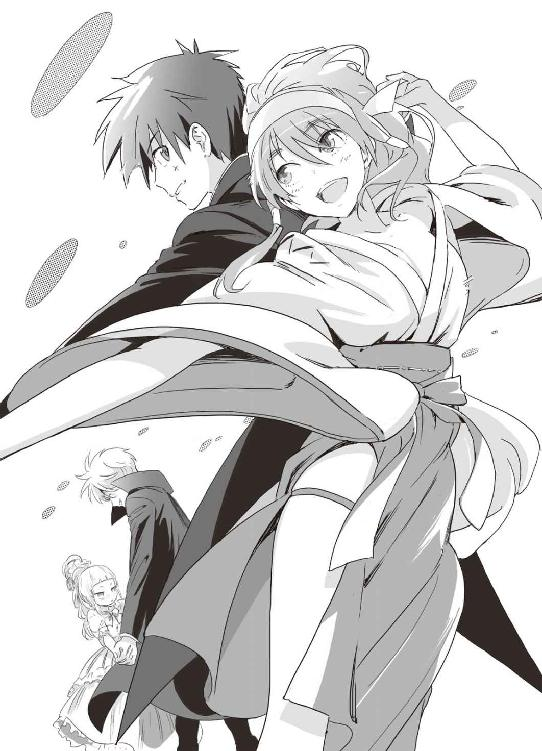
ダンスが終わると、自然と拍手があちこちから沸き上がる。
審査員が、謙吾とユキナの胸にリボンをつける。
「............」
やったかもしれない、そんな予感が、同時に二人の脳裏をよぎった。
その時だった。
ダンスホールと化した食堂のドアを勢いよく開けて、一人の少女が飛び込んできた。
もう一人のビーバス＆バットヘッド──布施七湖だった。
──衣装を手に入れるのに手間取って、少し遅れてしまった。
セーシェル共和国は観光地として有名だ。そこで謙吾とバカンスを過ごせるかもしれないと思うと、七湖はすっかりのぼせてしまって、なんとかベストカップルに選出されようと猛然と行動を開始した。インターネットの動画サイトで自分にもできそうなダンスを見つけて、急遽作戦を練りあげた。必要な道具をそろえたが、唯一、衣装だけはなかなか「これぞ」というものが手に入らなかった。彩離が用意してくれた衣装では心もとない。どうせ彩離のセンスは、セクシーならそれでいい、といった程度のものだろう。勝つために、もっとインパクトがほしい。なにしろ、ここは船の上だ。どこかに買いに行くわけにもいかない。
いや──買いに行く方法はあった。七湖はいい考えを思いついた。セーシェル諸島に上陸する部隊に、ついでに買ってきてもらうのだ。訓練で上陸する部隊は都市部にはいかないので買い物を頼むことはできないが、そこで七湖が目をつけたのは、大学部の先輩と教員たちだった。彼らは高等部の生徒たちと違い、交替でセーシェルの観光地に上陸して休暇をとっている。七湖はそれに目をつけた。得意のハッキングでネットゲームにはまっている先輩を見つけて、報酬プラス、ゲームのレアアイテムという条件で買い物を依頼したのだ。──そして七湖の計画は、上手くいった。
七湖の衣装は、エキゾチックな民族衣装だった。
インド洋のセーシェル共和国では、多くのインド系住民が暮らしているので、婚礼用のサリーを買うことができたのだ。
サリーとは、長く美しい布を体に巻いて肩に回す、インドの民族衣装だ。世界的な評価も高く、有名デザイナーやブランドものは欧米や日本でも結婚式に使われることがある。
「な、七湖！」
と、謙吾は七湖の姿に目をみはる。
インドサリーは露出は多くないが、それが逆にいかがわしい衣装で溢れ返るこのダンスホールでは目立つことになった。
ここで、また曲が変わった。
少し前にアカデミー賞を獲った、インドが舞台の映画のサントラからだ。民族音楽をディスコダンス用にアレンジしたような激しい曲に合わせて、七湖は体を艶っぽくくねらせながら謙吾に近づく。
これも、七湖の計算通り。ハッキングでＢＧＭを管理しているパソコンに侵入し、流れる曲の順番を仕組んでおいたのだ。
謙吾はすでに一曲踊り終えたあとで、胸にはリボンもついているが「パートナーを代えて踊ってはいけない」というルールは特に定められていない。七湖はユキナに「いいよね？」と告げて、返事を待たずに謙吾の手をつかんだ。謙吾は何が何だかわからないうちに、再びダンスホールの中央に引きずり出される。
七湖はさりげなく、周囲に気づかれないように謙吾の耳に小型のイヤホンをつけた。
「そこから流れる私の指示に従って」
「......指示だって!?」
「マサラ・ムービーのヒーローみたいに踊らせてみせる！」
インド映画系の曲には、一九七〇年代のステップがよく合う。ムービーダンスだ。
七湖はダンスには詳しくない。しかし、コンピュータと数学には強い。そして記憶力も抜群。自分の特技を利用して、曲とダンスを「数学的」に分解し、整理し、必要な動きをレコーダーに音声で吹きこんだ。
イヤホンから謙吾の耳に流れこむのは『叩きつけるように右足のステップ！ それから腕をポンプのように動かして、九〇度右に体を向けて......』という七湖の指示。格闘技の経験があり、誰かの指示通り動くのが得意な謙吾でなければ、対応するのは難しかったろう。
時折謙吾に体を密着させて、複雑な方程式を解くように、七湖は一夜漬けとは思えない見事なダンスを披露した。
七湖の胸には一つ、謙吾の胸には二つめのリボンがついた。
すべてのペアがダンスを終了した。リボンをつけられていないペアは、そもそも「審査基準」を満たしていないということで予選落ち。音楽はやんで、生徒たちはそれぞれ誰がセーシェル共和国での休暇を楽しむことができるのか、固唾をのんで見守っている。
謙吾の右側にはユキナが、左側には七湖がいた。二人は「謙吾は自分のものだ」と奪い合うように、彼の手を握っていた。両手に華と言えば聞こえはいいが、その真ん中で引き裂かれそうになっている謙吾は気が気ではない。
「あー、あー、マイクテスト。マイクテスト。ちゃんと入ってるね」
結果を発表するのは、教師の大迫だ。
「というわけで、みんなレクリエーション楽しんでくれただろうか。非常にハイレベルな戦いだったと、審査員たちも喜んでいた。まずは、得点二位の発表から......」
徐々に空気が緊迫していく。
「準優勝は、ルーシー坂井と国木田鞠歌ペア！ よく頑張った！」
という大迫の言葉を聞いて、ルーシーと鞠歌は大きくため息をついた。
「はあ......優勝じゃないのか......」と。
海神学園特進クラスの生徒にとって、一位以外はすべて敗北と言っていい。
「そして優勝者」
謙吾は色々な意味で緊張していた。ユキナは大切な幼なじみで、ナイチンゲールの力で何度も命を助けてもらった。対する七湖は積極的。隠れ里の秘密のキスを、忘れられるわけがない。冷や汗を流しながら、大迫の次の言葉を待つ。
「ベストカップルは、大牙謙吾と──」
大迫の口から、まずその名前が出てきた。
わっ、と会場が盛り上がる。予想外の結果に、謙吾自身が一番驚いている。
あとに続くのは、ユキナか。
それとも、謙吾と七湖のペアなのか。
結果は、そのどちらかに絞られた。
大迫が息継ぎして結果を告げようとした刹那──。
「！」
ダンスホールが、大きく揺れる。
揺れたのはダンスホールだけではない。強襲揚陸艦全体が揺れていた。
「爆発だ！」
レクリエーションは結果発表まできたところで中断され、学長の厳島アイナはヒポクラテスの戦術情報センターに急行した。そこでは艦長の上野栞が「......被害状況を確認！」「防空圏内をレーダーで精密捜索！ どんな小型目標も見逃すな！」「ヘリを飛ばすぞ！ 戦術データ・リンクを用意」と、慌ただしく各部署に指示を与えていた。
「敵の攻撃ですか」
アイナは訊ねた。
「はい」とうなずく上野。「事故ではありません」
「被害状況は？」
「現在確認中です。爆発は、兵員トレーニング区画」
「比較的、警備が緩い場所ですね......ミサイルですか、それとも魚雷？」
「まだ詳しくはわからないのですが......今のところ、レーダーに反応なし。記録にも残っていないし、この艦の防空システムはザルではありません。アクティブ・ソナーにも反応なし。一応対潜ヘリも飛ばして周囲を捜索しますが、爆発が起きた場所を考慮しても、潜水艦の可能性は低いでしょう。恐らくは......内部からの爆発。破壊工作です」
「......侵入者ですか......」
アイナは険しい目つきになった。このヒポクラテスには精鋭がそろっている。侵入者を許すなど、本来ならありえないことだ。
「被害状況確認しました。死亡者、負傷者ともにありません」副長が報告してきた。「レクリエーションで食堂に人が集まっていたのが幸いしました」
──食堂に人が集まっていた？
「......ちょっと待って......」
今の副長の言葉を聞いて、アイナはようやく敵の目的に気づいた。しかし、気づくのが遅すぎた。爆発の直後にその可能性を考えてみるべきだった。
「これは陽動です」
というアイナの断言に、上野が「えッ」と目を丸くした。アイナは続ける。
「......こちらの目を爆発に引きつけておいて、目的を果たすつもりです。急いで、機関部、格納庫、弾薬庫、通信施設の警備を強化......敵の次の攻撃に備えなさい......！」
ここで、緊急警報が鳴った。アイナは緊急通信用の艦内電話を手にとる。
「......学長の厳島アイナです......何事ですか」
『こちら、格納庫の警備班です。強化外骨格剣歯虎型......ＧＥＮＥＺバットヘッド１がどこにも見当たりません。格納庫の警報装置が切られています！』
──謙吾のＧＥＮＥＺが、盗まれた。
３
軍艦には「士官サロン」と呼ばれる多目的な部屋があることが多く、この強襲揚陸艦ヒポクラテスも例外ではない。ヒポクラテスの士官サロンは洒落た喫茶店のような広い部屋で、厨房や大きな本棚、船舶電話などが置かれている。
厨房で働くのは、士官室係だ。注文すれば軽食や飲み物を用意してくれる。
白いテーブルを囲んで、こども学長アイナ、教師の大迫、そしてビーバス＆バットヘッドのメンバーは事件の整理とこれからの行動方針を決めるためのミーティングを行っていた。
「で、監視カメラには何が映ってたんですか？」
謙吾は、焦燥を隠しきれない口調で訊ねた。
ＧＥＮＥＺとは、謙吾にとってどんな存在なのか。
ただの兵器ではない、ただの鎧ではない──。そのことを今、思い知っている。
「......それは、自分の目で確かめてみるのが一番でしょう......」
アイナがリモコンを操作して、士官サロンの大型モニタで防犯カメラの映像を再生した。
見下ろすようなカメラワークの映像で、一度ズシンとカメラが揺れた。映像が乱れたのは、ちょうど爆発が起きた時間だからだ。やがてそのカメラに、明らかに海神学園の関係者ではない人影が映りこんだ。
「............」
かなり大柄な男だ。タクティカルベストに黒のウェットスーツといういでたちで、どちらも海水で濡れている。ウェットスーツは下から発達しすぎた筋肉で押し上げられて、今にも破裂しそうだ。ガスマスクを被って顔を隠している。
「......？」
謙吾が気になったのは、その侵入者の手が少し妙だったことだ。グローブをつけているわけでもなさそうなのに異常なまでに手が大きく、指と指との間に「水かき」のようなものがついている──。しかし、画質の限界でそれ以上のことはわからない。見間違いか何かだろうか。それとも、政争や戦場の裏舞台で暗躍する、人間以上、あるいは非人間の存在──「特殊傭兵」なのか。特殊傭兵だとすれば、とんでもない能力、人間離れした身体的特徴を持っていても不思議はない。
「......このあと、格納庫に侵入した敵は防犯装置を破壊......カメラも壊されたので、残っている映像はこれだけです......」とアイナ。
「どうやって逃げたんですか、侵入者は」
セルジュが不思議そうに訊ねた。
「......ＧＥＮＥＺを盗み出してから、海に直接飛び込んだようです......」
「そんな無茶な」謙吾は驚いて身を乗り出した。「潜水装備もつけてないで、ＧＥＮＥＺ一式を抱えた状態で泳いで逃げた？」
「......途中までＧＥＮＥＺに内蔵されたＧＰＳ発信機が働いていたので、それを追跡していたのですが、ここから数百キロ離れた場所でその電波が遮断されました。少なくとも、敵は最低でもその地点までは逃げることができた、ということです......」
「取り戻さないと、大変なことに」
珍しく、大迫が苦い顔をして言った。
ＧＥＮＥＺには、グリークスの最先端技術が注ぎこまれている。その技術が悪用されることがあれば、世界の軍事バランスを崩すことになりかねない。ＧＥＮＥＺの重要性は、この業界で生きる人間なら誰もが理解している。
しかし、謙吾たちにとってプラスなのは、ＧＥＮＥＺには厳重なセキュリティがかかっていて、その機密のほとんどはブラックボックスに封印されているということだ。無理やりブラックボックスを開けようとすれば、内部がすべて消滅する構造だ。それを解除するには、数日、下手をすれば数週間という時間がかかる。取り戻すチャンスはある。
「......少し前に、グリークス本社の実戦部隊が正体不明の敵に襲撃されるという事件がありました......」
そう言ったアイナは、紅茶のカップを傾ける。士官サロンに用意されていたのは、ハンガリーのヘレンドが販売しているティーセットだった。
「襲われた部隊は二〇人ほどで、全滅......生き残りはなし。その際に、海神学園やＧＥＮＥＺに関する情報が奪われました......対応策が必要になり、現場に残った戦闘の痕跡から、本社はエレナ・ヴェガが怪しいという調査結果を」
というアイナの言葉に、謙吾は思わず中腰になって「どんなヤツですか」と言った。
「......エレナ・ヴェガ。スペイン出身で、細かい経歴は不明。表向きは国際派の美術商ですが......裏では、特殊傭兵たちを使って世界中で盗みを働いているとか。そして盗んだ品物は、彼女の拠点でオークションにかけられる......」
「特殊傭兵を使う、盗賊の元締め......確かに怪しいですね」
そう言って、セルジュは気合いを入れるかのように手を叩いた。
「......本社の部隊が襲撃された件を捜査するために......」アイナは続けて言う。「エレナ・ヴェガの拠点に、梓馬亜佑美が潜入中です」
「部長が!?」とユキナは驚きの声をあげた。アイナはうなずき、
「......彼女から提供された情報の中に、防犯カメラに映っていた侵入者によく似た特徴の特殊傭兵の話がありました......」
「ちなみに、その拠点というのはどこにあるんですか......？」
謙吾が訊ねると、アイナは「ぴっ」とアラビア海の方向を指さす。
「......盗んだ品物のオークションが行われている、エレナ・ヴェガの拠点は海の上......」
「......海上の!?」
と、謙吾たちは目を丸くする。
「つまり......豪華客船です」
第三章 アラビア海に咲く情熱の花
臨海学校で爆発が起きる二週間前──。
アフガニスタン、ウルーズガーン州山岳地帯。
グリークス本社から派遣された傭兵精鋭二〇人が、前方展開作戦に従事していた。
ＦＯＢとは、現地住民とのコミュニケーションを重視し、彼らの信頼を得るための活動のことだ。学校や医療設備などの建設に協力したり、医薬品や食料などを提供する。そうすることで、現地住民からの情報が入手しやすくなり、潜在的な敵も減少し、主目標が達成しやすくなる。
冷たい風が吹く瘦せた山肌の斜面に、大きな岩を利用してたくましいプロの兵士たちがキャンプを構築している。
この地域には反政府武装勢力の資金源となっているケシ畑があちこちに存在し、共和国陸軍や国連の多国籍軍も好き好んで足を踏み入れようとはしない。そんな場所で傭兵たちは、行方不明になった仲間のトラックを捜索している。水道や井戸、発電機などを整備するための工具や材料を満載した大事なトラックだ。
傭兵たちはセラミックプレート入りのボディアーマーに、防弾ヘルメットの完全防備。主武装はダットサイトがついた最新のアサルトライフルＦＮ・ＳＣＡＲ。ホルスターにはサイドアームの四五口径グロックがさしこんである。二〇人の中に強化外骨格や特殊能力者はいないが、相手が普通のゲリラならよほどの大部隊でない限り十分すぎる戦力だ。
そこへ──。
巨大な鉄の塊が投げ込まれた。大きな音を立てて、土煙が巻き起こる。
「なんだ......！」
「タリバンか!?」
すぐさまライフルを構え、全方位防御の戦闘体勢を整える傭兵たち。投げ込まれたのは、強い力によって球状に押し潰された物資輸送用のトラックだった。この時点で、とてつもない敵が現れたことがわかる。
五人の男女が、傭兵たちのキャンプにゆっくりと近づいていく。グリークスの傭兵たちは、異様な気配を感じ取って迷わず発砲。しかしその五人は、アサルトライフルの猛射をものともしない。
エレナ・ヴェガと、その部下たちだ。
「楽勝ですね」
「皆殺しだ」
「殺しを楽しんでる場合じゃないですよ」
「目的のものを手に入れて、撤収する」
目的のものとは、グリークスの実戦部隊に配備されているタクティカルインターネット専用のノートパソコンのことだ。グリークスの情報管理は厳しく、末端のパソコンから本社のデータバンクにアクセスするのは不可能だが、セキュリティを破れば支部の動向程度の情報は入手できる。
今、グリークスが保有するＧＥＮＥＺは世界のどこにあるのか。それだけわかれば、十分だった。どんなに警備が厳重だろうと、エレナの部下たちに盗みだせないものはない。
１
アラビア海を、バチカンの大聖堂のように美しい船が進んでいる。
白い船体に、重厚な構造物の集合体。陽光を浴びて輝き、波を蹴立てて進むその威容はさながら白亜の城だ。
航空機用のエンジンをもとに開発した、高出力ガスタービン・パッケージを搭載。最新鋭の統合電力システムを採用。五〇〇人の乗組員が、三〇〇〇人の客を乗せ、最高二五ノットで航行する。全長三二〇メートル、排水量一五万トンの巨大豪華客船。
全一四層構造、水面上の高さ六〇メートル。
船名は「ラ・パッショナリア」。
その意味は、スペイン語で──情熱の花。
ラ・パッショナリアには二五〇室のＶＩＰルームが存在し、そのすべてがラスベガスの超高級ホテルのスイートルームに勝るとも劣らない。船の上でありながら、ＶＩＰルームは全室広い浴室とバーカウンターを完備。寝室にはキングサイズのベッド。
他にも、船内には様々な娯楽施設があり、テニスコートや小さなゴルフコースまで存在する。プールの数だけでも二〇近い。
そんなラ・パッショナリアの第一四層デッキ──すなわち最上層。
そこには、まさか海の上とは思えない、二階建ての豪邸が建っていた。豪華客船のペントハウスだ。宝石をちりばめたかのようなきらびやかな内装のペントハウス内の大浴場で、この船の女主人がゆったりと湯船につかっている。
とてつもない浴場だ。南側の壁はすべて強化ガラスで、海上の素晴らしい眺めを楽しめる。浴槽の素材は重厚な大理石。一〇〇人でも同時に入れそうなのに、それがただ一人の専用なのである。
その一人こそが──ラ・パッショナリアの女主人、エレナ・ヴェガだ。
「............」
何かを悟っているような、すべてを諦めているような、暗い雰囲気のある切れ長の目。
エレナは面長の美貌で額が広い。鼻が高く、顎が尖っている。面長にはロングヘアのほうがよく似合うというのが定説だが、彼女は赤毛のショートヘアがよく似合っている。
一糸まとわぬ姿だ。いかにもスペイン出身らしい、美しい褐色の肌の持ち主。髪は短いのに、中性的な感じは一切ない。むしろ女王蜂のように細くくびれたウエストと、重力に逆らうような張りのある乳房が、妖艶な色香を醸し出している。
引き締まった腹筋からしなやかな太腿へとつながる、なだらかな曲線が美しい。
しかし、彼女の外見に惑わされてはならない。彼女はすでに、ありとあらゆる犯罪に手を染めている。一番多くやったのは、やはり盗みだ。邪魔するものは容赦なく殺す乱暴なやり方で、国際的な銀行から、ルーブル美術館やメトロポリタン美術館まで、盗みだせないものは何もなかった。
「ふう......」
十分にリラックスしたエレナは立ち上がって、浴槽を出た。
すると、タオルやブラシを持って部屋の隅に待機していたメイドたちが駆け寄ってくる。
この豪華客船ラ・パッショナリアで働くメイドたちは、女主人であるエレナの趣味で、見目麗しい一〇代の少女ばかりが集められている。
エレナに仕えるメイド少女たちは、大浴場で働くために水着に着替えていた。白いフリルがついた黒のビキニに、メイドカチューシャと小さめのエプロンを組み合わせている。そんなメイドたちが、奉仕を楽しむかのように丁寧に、完璧なプロポーションを誇る女主人の裸体から水滴をふき取り、高級シルクの薄いバスローブを着せる。
そして──エレナにかしずくメイドたちの中に、潜入捜査中の梓馬亜佑美もいた。
「ご主人様......お加減はいかがですか？」
海神学園高等部特進クラス、武装メイド部部長。
胸やヒップの形も露なバスローブ姿のまま、メイドたちを引き連れてエレナ・ヴェガはペントハウスのリビングに移動した。
そこに、エレナが仕切る組織の幹部たちがいた。
特殊部隊員風の大男。
長い黒髪の女。
高校生くらいの、中央アジア系らしき少年。
身長三メートル近い、人間離れした野獣のような男。
そんな四人の幹部たち。
「ＧＥＮＥＺを確保いたしました」
特殊部隊員風の大男は、ガスマスクで顔を隠していた。グリークスの強襲揚陸艦ヒポクラテスから、剣歯虎型ＧＥＮＥＺを盗み出したあの男だ。
名前はシュー・ダオミン。中国人民解放軍・緊急展開部隊の「非人間分隊」出身の元中佐。いつも顔を隠しているのは、彼の容貌は普通の人間からはかけ離れているからだ。ガスマスクと服の隙間からのぞく首筋には、びっしりと青緑色の鱗がついている。
次に、長い黒髪の女が口を開いた。
「予定通り、民間軍事会社バビロン・メディスンにも連絡を入れておきました」
その女は、エレナの副官的な立場にいる。
エスメラルダ、という。スペイン系の名前だ。彼女は続けて言う。「ＧＥＮＥＺと引き換えなら、連中もエレナさまが望むものを持ってくるはずです」
「そうじゃなきゃ、ダオミンは無駄働きだ」
中央アジア系の少年が口を挟んだ。
彼はチェチェン出身のアスハブ。険しい山岳地帯の出身で、いかにもそれらしい日焼けをしている。高校生ほどの年齢だが、その顔つきは鋭く、少年っぽさは微塵もない。髪は短く、何かを否定するように唇が真一文字に固く結ばれている。
「無駄働きはだめだァ。仕事は金になってなんぼヨォ」
身長三メートルという、人間離れした巨体の男が、妙にこもった声で言った。ただ背が高いだけでなく、ギリシャ神話の英雄のように筋肉質で、肩の盛り上がりのせいで首が見えないほどだ。岩石を集めて目や鼻を削りだしたような、厳つい顔。よく見れば、彼のこめかみのあたりからは、短い角のようなものが生えている──。
彼は暗号名「ロングホーン」。本名はここ数年誰にも教えたことがない。ダオミンと同じく特殊部隊風の格好で、やはり緊急展開部隊非人間分隊の一員だった。
非人間分隊とは、人民解放軍の極秘特殊部隊だ。
緊急展開部隊は、世界最強クラスの伝統ある特殊部隊である。予備兵力を招集すれば三〇〇万人という巨大な人民解放軍の中から選ばれた五万人の特殊部隊。その六割が大学卒という文武両道の兵士であり、ウイグル自治区やチベット、オリンピック警備などに投入された。
しかし、そんな緊急展開部隊にも対応できない種類の任務がある。オカルトや特殊能力者が関わった、いわゆる超常事件だ。そこで、中国政府は緊急展開部隊内に非人間部署を設置。「人間離れしている」か、あるいは「人間ではない」兵士たちを集めて、国家の存亡に関わるような超常事件に投入した。
緊急展開部隊の欠点は、給料がそれほど高くないということだ。どこの国でも、政治家に比べて軍人の待遇は悪い。だから、国家への忠誠心や正義感が薄い非人間兵士はすぐに犯罪組織や民間軍事会社に鞍替えしてしまう。ダオミンとロングホーンが再就職先に選んだのは、エレナ・ヴェガの組織だった。
「......金なんて、いくらでも手に入る」
四人の超人たちの雇い主──エレナ・ヴェガは憂鬱そうに話す。別に気分が落ち込んでいるわけではなく、普段からテンションが低いのだ。
「私たちは、富や名声以上のものを手に入れるために、戦うんだ......」
２
それから短い打ち合わせが終わって、エレナ・ヴェガの副官であるエスメラルダは、メイドとして潜入している梓馬亜佑美を連れて、エレベーターを使って船の第五層まで移動した。
第五層には、この船で働くメイドたち専用のスタッフルームがある。
広いスタッフルームに、真新しいメイド服で均整のとれた肢体を包んだ五人の少女が整列していた。その五人の中に──海神学園特進クラス、岩清水ユキナの姿もあった。
「これが、今回新しく入ってくるメイドたちですね......」
と、並んだ五人を見回しつつエスメラルダは言った。
組織の幹部であり、ありとあらゆる犯罪に手を染めたエレナ・ヴェガの右腕でありながら、エスメラルダは童顔で、見た目は人畜無害そのものだ。アイドル風の甘い顔立ちと言っていい。
落ち着いた雰囲気の黒いスーツを着こなし、長い黒髪にはつやがある。
エスメラルダはエレナの副官だけでなく、この船で働くメイドたちのまとめ役も務めている。
「あなたは中国人？ それとも日本人ですか？」
エスメラルダが、ユキナを見て訊ねた。
「日本人です」
「それなら、アユミが教育係についてあげるとよさそうですね。新入りさんを部屋に案内してあげてください」
というエスメラルダの言葉に、すかさず亜佑美は「わかりました」と軽く頭を下げた。ここでは亜佑美は、東村アユミという偽名を使っている。
ちなみにユキナは、岩清水ではなく名字を岩田に変えている。岩田ユキナだ。
ラ・パッショナリアは人手不足らしい。メイドや警備員、整備係などを常時募集している。当然、搭乗する人間の身元は厳しくチェックされるが、海神学園の特進クラスには布施七湖をはじめとする凄腕のハッカー、クラッカーたちがいる。偽の経歴を作っておいて、船に潜入するのはそれほど難しくなかった。問題は、そこから先だ。潜入しても、船内の警備は厳しい。重武装の部隊がパトロールを繰り返し、いくつもの防犯カメラが監視の目を光らせている。
「こっちよ」
亜佑美が、ユキナを割り当てられた部屋に案内した。この船のメイドたちは、航海中、二人部屋で寝泊まりする。亜佑美とユキナは幸運なことに同室になった。二段ベッドが設置された八畳ほどの広さの部屋で、ペントハウスやＶＩＰルームに比べたら質素なものだった。
「廊下には監視カメラがあるけど、部屋の中は大丈夫。念入りに調べておいたから、ここでなら事件の話をしても平気よ」二人部屋のベッドに腰をかけて、亜佑美が口を開いた。「まさか、あなたが潜入にくわわってくるなんてね」
「私も、まさか普段の部活がこんなところで役に立つとは思っていませんでした......」
ユキナはため息をついて言った。
「むしろ、こういうときのための部活なのよ」と亜佑美。びしっ、とユキナを指さして続ける。「メイドを制す者、屋敷を制す」
「はあ」そんなこと言われても、ピンとこない。
「家政婦は見た！」と、さらに亜佑美。
「はあ」ユキナは気のない返事しかできない。
「......まあ、それはさておき」
急に何かが恥ずかしくなったらしく、亜佑美はこほんと咳払いした。
「そんな大仕事になったんなら、謙吾さんたちも動いているんですよね？」
「はい。謙吾たちは別のルートでこの船に乗り込みます」
──謙吾たちの別ルートとは。
「お前たちが、新入りだな」
豪華客船ラ・パッショナリア、第四層。この船は第六層がメインデッキなので、第四層は普通の建物なら地下二階とも言える。
そこに格闘技のジムがあった。広大な空間に練習用のマットが敷き詰められ、壁際には様々なトレーニング機器が並んでいる。ジムには数十人の男と数人の女が集められていて、その前に例のガスマスクの男──シュー・ダオミンが立っていた。彼が説明をする。
「この船の名は『ラ・パッショナリア』。それは同時にエレナ・ヴェガ様が率いる組織の名前でもある。商品を仕入れて、それを売る」
エレナの組織にとって商品を仕入れるとは「盗む」ということであり、それを客に売るのは「盗品オークション」だ。客たちもいわば共犯関係にあり、盗品であることを承知の上で買い、時には仕入れの段階で資金援助を行う。
「この船では、お客さんたちに上機嫌で買い物をしてもらえるよう、しっかりと楽しんでもらうために様々な娯楽施設が用意してある。お前たちのようなチンピラどもをわざわざのせてやってるのも、そのためだ」
チンピラども、と呼ばれたジムに集まっている男女は、確かにその言葉がぴったりと似合う荒っぽい雰囲気の者ばかりだった。筋骨隆々のアメリカ人、全身にタトゥーを入れた元軍人風のクロアチア人、薬物依存症で明らかに目つきがおかしい中国人──そんな中に、高校生の少年少女が混ざっている。
大牙謙吾、セルジュ・ドラグレスク、堤彩離の三人だ。
「お前らは、また特に若いな」
三人に、ダオミンが目をつけた。
「日本人に中国人、ルーマニア人か」
中国人、とは彩離のことだ。日本人があまり多いと怪しまれるかもしれないので、違う国の人間を装った。いつもは能天気な彩離だが、謙吾やセルジュと同じく語学は堪能で、ネイティブを自称しても問題ないほどの中国語を使うことができる。
「若くても、腕が良ければいいんだろ。ここは」
謙吾はダオミンに挑戦的な視線を送りつつ、言った。海神学園の制服姿ではまずいので、今日は筋肉の線が浮き出るタンクトップにジーパンという服装だ。
ダオミンは謙吾の言葉にうなずき、
「そうだ。年齢も体格も関係ない。反則もない。スポンサーに命懸けのハイレベルな試合を楽しんでもらうのがすべてだ」
「そら、わかりやすいこって」
セルジュが小声でつぶやく。
ここにいるのは全員、プロの格闘家かそれに近い人間たちだった。
船で行われている娯楽の一つに、違法な格闘大会がある。試合中に反則で人を殺してライセンスを剝奪された元プロや、八百長や薬物疑惑など、表の世界では活躍できなくなった格闘家たちが出場する。
「契約試合数をこなしたら、大金をもって船をおりることができる」とダオミン。「試合で重傷を負っても、船医の診察を受けることができる。──ただし、試合中に命を失うことになっても、こちらは一切の責任を負うつもりはない。ここ数日、格闘家不足でお客さんたちもお待ちかねだ。はりきってやってくれ」
ダオミンの説明終了後、参加者たちは倉庫のような薄汚い場所に押し込められた。
「ひどい部屋やな......」
セルジュの服装はレザーのジャケットとパンツで、格闘家というより売れないロック・ミュージシャン風だ。
「しかも、あの様子だとすぐに試合組まれるっぽいよ」
彩離はぴちぴちのＴシャツにホットパンツ。彼女がラフな格好をすると、外国のスラムで育った不良娘といった雰囲気が漂う。
盗聴器や防犯カメラがあるかもしれないので、怪しまれないように視線は合わせず、できる限り小声で会話する。
「どこかで船のコンピュータに無線ＬＡＮを接続。七湖にこの船の制御をのっとってもらう。そこまでいけば、任務は完了したようなものだが......」と謙吾。
「迂闊に動けば、ＧＥＮＥＺは取り返せないし」
「敵の狙いもわからんままや」
「なぜ、グリークスを敵に回すようなリスクをおかして、やつらはＧＥＮＥＺを盗んだ？」
金になる、というだけでは説明にならない。何かもっと明確な理由があるはずだ。
その場で横になって、謙吾は「とりあえず、試合までに少し休んでおこう。俺は仮眠をとる」と言った。
瞼を閉じて、ほんの数分で寝息を立て始める。
「よく、こんなとこで眠れるな......」
セルジュが呆れ顔で言った。
「謙吾、よく言ってるジャン」と彩離。「『どんな場所でも、どんな状況でも、眠れるときに眠っておくのが優秀な兵士の条件だ』って」
「それは俺も同じ意見や。でも限度があるやろ」
特殊な訓練を受けたもの、戦場での生活が長いものは、場所を選ばず眠れるようになる。
謙吾たちがいるのは倉庫まがいの選手控室。男たちは些細な理由で怒鳴り合い、今にも沸騰寸前だ。汗の臭いもきついし、窓もエアコンもないので異様に暑い。しかし謙吾は、周囲の喧騒や悪条件などお構いなしで闇に落ちていく。
謙吾は、ＧＥＮＥＺが盗まれて以降一睡もしていなかった。自分の半身を引き裂かれたようで、気分が落ち着かなかったのだ。すっかりＧＥＮＥＺに依存している自分に気づいて、情けなくなる。盗まれたＧＥＮＥＺが、どうやらこの船にあるらしいと目星がついて、ようやく少しはリラックスできた。
そして謙吾は、短い夢を見る。
３
──人の話し声が聞こえる。
「一人五〇ドル、一個分隊なら割引で四〇〇ドルでいい」
「そいつは筋がいい。特別に一〇〇ドルだ」
「嫌だよ、謙吾。こんな風にみんなとさよならするなんて」
──ああ、これは久しぶりに見る夢だ。
「まるで俺たち、豚か牛みたいだな」
目の前が一瞬、暗くなった。少しして、自分の名前が呼ばれたような気がした。
──呼ばれているのは、俺の名前なのか。
「......おい、謙吾」
──ああ、やっぱり俺だ。
「もう、試合やて。起きろやあ」
仮眠をとっていた謙吾は、セルジュに叩き起こされた。「......ん」ゆっくりと瞼を開けて、上体を起こし、自分で自分の頰を軽く叩いて、完全に覚醒する。そして言う。「悪い、セルジュ。思っていたよりも深く眠った」
「大丈夫か、謙吾」
「なんの問題もない」
謙吾は立ちあがった。
すぐ近くにラ・パッショナリアの乗務員がいて、横柄な態度で「ついてこい」と言った。謙吾は言われた通り、ついていく。選手控室を出て、エレベーターで第六層に移動。入り組んだ狭い通路を進んでいき、徐々に歓声のようなものが聞こえてくる。
ラ・パッショナリアの格闘試合場の裏手で立ち止まる。配管がむき出しの壁に囲まれた息苦しい空間で、前の試合が終わるのを待つ。反対側にも同じような部屋があるのだろう。そこに対戦相手がいるのだ。
「まだ、正式にはお前は『選手』じゃない」ここまで案内してくれた乗務員が、謙吾に話しかけてきた。「一勝もできないザコに、船医にみせるような手間はかけん。ここで勝たなきゃ、放りだす。試合内容がつまらなかったら、もっと悲惨な展開もあり得るから覚悟しておけ」
謙吾はその乗務員には一瞥もくれず「ああ、そうですね」と適当な返事をした。
「意外かもしれないが、この手のギャンブル格闘技の本場は中国だ。『黒拳』という」さらにその乗務員は、質問もしてもいないことを話し始めた。ずいぶんおしゃべりなやつだ。「そこから言葉をとって、この船の格闘大会は、ブラック・フィスト・ノックアウト・ステージと名付けられた」
一際大きな歓声があがった。どうやら前の試合が終わったらしい。
「出番だぞ」
通路の先に、金網のゲートがあった。試合終了と同時にそのゲートが開いたので、謙吾は案内役の乗務員と別れて試合会場に向かった。ゲートを潜ると、そこはまるで別世界だ。金網に囲まれた六角形のリング。リングを底にして、すり鉢状に観客席が並んでいた。ワインや食事を楽しみながらゆっくりと試合を観戦できる広めの座席では、エレナ・ヴェガの上客たちが、傍に美女や美男を侍らせてくつろいでいる。
観客席には小さなタッチパネルもついていて、その場に座ったまま選手に金を賭けることができるようだ。違法な格闘大会にはつきもののギャンブル。
謙吾と同じタイミングで、対戦相手もリングに姿を現した。表情のパターンが少なそうな顔は、軍人、それも精鋭部隊出身者にありがちなものだ。筋肉のかたまりで、二の腕が子供の胴体よりも太い。目が青く、身長は一九〇センチ。体重は、謙吾の二倍はありそうだ。
「なんだか懐かしい感じがするな......」
謙吾は目を細めて独りごちた。
「お前、女みたいに小さいな」
感情のこもっていない声で、対戦相手の男が言った。別にこちらを挑発する気はなく、思ったことをそのまま言葉にしただけのようだった。
「あんたがでかすぎるんだ」と、やはり無感情な声で謙吾。
会場のスピーカーから、選手紹介の声が流れた。ここで初めて、謙吾は対戦相手の名前を知る。エストニア共和国出身のバルニク。元傭兵らしい。エストニアは軍隊格闘技とキックボクシングが盛んな国だ。
謙吾のことは、日本人の若い殺人犯と紹介された。素手で親を殺したが、未成年だったために少年院ですんで、出所と同時にこの船に乗り込んできた──という設定になっている。この偽の経歴を考えたのは七湖だそうだ。
ついでに、簡単にルールも説明された。武器の使用以外、特に反則はない。ノックアウト、ギブアップ、またはどちらかの死亡によって決着。
金持ちの客に見下ろされながら、金網の中で向かい合う二人の男。謙吾は任務のために、相手は金のために。これから命をかけて殴り合う。
「思い出すな」
謙吾は小声でつぶやく。
「昔は、毎日がこんな感じだった」
試合開始を告げるゴングが鳴った。
「ふっ」とバルニクが仕掛けてきた。無駄のない、高速のジャブ。やはりキックボクシングスタイルだ。右利きオーソドックスの構え。
謙吾はジャブを軽くかわし、フットワークでバルニクのサイドに回りこむ。隙を見つけて、敵の懐に潜り込むのが狙いだ。バルニクはそれを嫌がって、ジャブを連打。謙吾を近づけまいとする。
（嫌なジャブだ。──が、見切れないほどじゃない）
謙吾はジャブの連打を前に出した左手でさばいて、すかさず敵の手首をつかんで引っ張った。
「──っ！」
そうやって相手の体勢を前のめりに崩して、ようやく謙吾はバルニクの懐に潜り込んだ。
超至近距離──謙吾の得意距離だ。
謙吾は様々な格闘技を習得している。空手、柔道、柔術、コマンドサンボ──その中でも、最も好んで使うのは「シラット」をベースにした軍隊格闘技の技だ。
シラットは、東南アジアで盛んな伝統的な格闘技だ。特にインドネシア発祥のものをペンチャック・シラットという。シラットの技法はその完成度の高さから、世界中の警察や軍隊系の特殊部隊で学ばれている。
至近距離で、謙吾はバルニクの左手をさらに引っ張りつつ、左の足払いで彼の右足を刈り取った。バルニクは思い切り引っくり返る。そうやって倒した相手の脇腹に、謙吾は素早くカカトを落としていく。打撃音のあと、うめき声。
「くっ......！」
バルニクの肋骨にひびが入った。バルニクは謙吾の手を振り払い、横に転がって間合いをとった。そこから一瞬で立ちあがり、謙吾に対してタックルを仕掛ける。
一気に体重差で押しつぶそうというのだ。
謙吾は闘牛のようにバルニクのタックルをかわし、また足払いで転倒させる。足払いはシラットの「サプー」という技法であり、あらゆる場面で使える。
また起きあがってきたバルニクのひびの入った脇腹に謙吾は右の拳を打ち込み、間を置かず顎に左の掌底打。怯んだバルニクは金網までさがる。謙吾は敵を金網に押しつけるように蹴りを打ち込み、殴り続ける。ガシャガシャと金網が揺れる音が鳴り響く。
謙吾は金網を使って三角跳びを行い、勢いをつけて空中で回転。そこからとどめの跳び後ろ回し蹴りを繰り出した。足がバルニクの頭部を打ち抜いて、完全に気絶させる。
──ＧＥＮＥＺがなくても、銃を持っていなくても、ギルガメシュでなくとも。
大牙謙吾は鍛え抜かれた優秀な兵士であり、格闘家でもあった。
さっきの倉庫のような控室に戻るのかと思っていたら、謙吾は船の乗務員に別の部屋に案内された。六人ほどが入れる部屋で、ベッドを一つ与えられたのだ。二段ベッドの上段だった。どうやら、選手として認められた、ということらしい。勝ち進めば勝ち進むほど、選手はいい部屋に移っていくようだ。謙吾としては、これからセルジュや彩離がどの部屋に入れられるのかが気になるところだ。
「............」
とりあえず、部屋を見回してみた。謙吾の他に、三人の男がいる。それぞれ人相が悪い格闘家たち。油断をすれば、寝首をかかれることもありそうだ。
壁には大きなモニタが埋め込まれている。この船で行われている違法格闘大会が放映されている。セルジュや彩離の戦いをチェックすることができそうだ。
謙吾のベッドの上に、この船に搭乗する際に乗務員に取り上げられた荷物が返却されていた。防水のフィールドバッグ一つという、シンプルな荷物だ。中に入っているのは、愛用の携帯ゲーム機数種類と替えの服と下着。特殊な護身用の武器タクティカル・ペン。携帯電話やその他通信器具の持ち込みは禁止されていた。
──だが、そこはこちらもプロだ。携帯電話は没収されても、携帯ゲーム機は無事だった。数種類持ち込んだうちの一つは、偽装衛星通信装置だ。超小型の無線ＬＡＮアダプタもセットになっている。
この無線ＬＡＮアダプタを船のコンピュータに接続できれば、バックアップについている七湖のハッキングが可能になる。船の制御を乗っ取ってもらえば、任務は完了したようなものだ。ＧＥＮＥＺを取り戻したら、ＩＣＰＯに連絡。船を制圧して、エレナ・ヴェガは逮捕する。
問題は、この船の警備が思っていたよりも厳しいことだ。変な電波を飛ばせば、すぐに気づかれてしまうだろう。
（さあ、どうするか......）
仲間のことを気にかけつつ、謙吾が天井を見上げてぼんやりこれからのことを考えていたら、ドアを開閉する音がした。誰かが入ってくる気配がする。
「お前、なかなかやるな」
どうやら自分に話しかけているらしいと気づいて、謙吾は体を起こした。謙吾と同い年くらいの少年兵だった。
「チェチェン出身、アスハブだ。お前は日本人だな」
「ああ」謙吾はうなずく。「俺は謙吾。山本謙吾」
アスハブは鋭い表情、日焼けした肌。野生のジャッカルのような少年だ。黒い突入服を着こみ、体のあちこちにナイフや手榴弾、発煙弾を装備している。エレナ・ヴェガの組織の一員なのだろうが、それなら銃器を装備していてもいいはずなのに、アスハブは飛び道具の類は一切身につけていなかった。──何か理由があるのか？ 銃を使わなくても遠距離の敵を攻撃する手段を持っているとか？
しかしアスハブは謙吾の疑念をよそに、携帯ゲーム機を見つけてきらきらと目を輝かせた。
「お前、ゲームを持ってきてるのか？」
「ああ......」
「日本人なら、アニメとか好きだよな？」
「まあ......」
ひどい偏見だ、と思ったが、謙吾に限っては大正解だ。
「俺は、日本製のゲームやアニメが大好きなんだ。ちょっと話し相手になってくれないか？」
４
ユキナは、休憩時間を利用して、亜佑美の水先案内で船内を少し探索しておくことにした。警備員に怪しまれるといけないので、あくまで普通の散歩っぽく振る舞う。第五層の二人部屋からスタートして、エレベーターやエスカレーター、非常口の位置を確認しつつ、上層へ移動していく。
「最下層デッキから第五層までが、機関部、格納庫、警備室、スタッフルームなど。第六層から第一三層が、客室や娯楽施設。そして最上層の第一四層デッキに、女主人のペントハウスと幹部専用施設が存在します」
歩きながら、小声で亜佑美が説明してくれる。
「......第三層以下、そして第一四層が幹部か組織の人間以外立ち入り禁止、ということになっています。ただし、一部のメイドは例外として、第一四層でエレナ・ヴェガの身の回りの世話をすることも」
「例のものが保管されているのは......」
とユキナ。例のものとは、盗まれたＧＥＮＥＺのことだ。
「恐らく、第三層以下でしょうね。私は第一四層にはそこそこ出入りしてるんだけど、それらしい場所は見当たらなかった」
それにしてもすさまじい船である。何もかもが並みの客船とはケタが違う。船の持ち主が犯罪者で、招待されているのはすべてその客なので、船内の雰囲気は荒んでいる。ブランドものの高級な服を着てセレブを装っても、悪事で稼いでいる人間はその粗暴さがどうしても内側から滲み出る。ミニスカートメイド服のユキナと亜佑美の太腿に、獲物を狙うような男たちの視線が突き刺さってくる。
「上品ぶっていても、この船にいるのはほとんどが一皮むけば犯罪者」と、笑顔で亜佑美。「隙を見せれば、メイドでもひどいことをされるから気をつけてね」
「......はい」
プールにジャグジー、ダンスホール。スケートリンクや、船上サーフィン用の施設まで。ここが海の上だということを忘れてしまいそうだ。
ダンスホールの前を通りかかって、ユキナはレクリエーションのパーティを思い出した。今となっては幻となってしまったセーシェル諸島での休暇を賭けたダンス対決。ベストカップルに選ばれたのは、自分と謙吾だったのだろうか？ それとも──。
「......何かありましたか？ ユキナさん」
「あ、いえ......なんでもないです」
そして二人は第一三層へ。組織の幹部やＶＩＰ以外にとっては、ここが最上層ということになる。
一三層には高級レストラン街やバーがあり、長く広い回廊からは吹き抜け構造の散歩道と船内公園を見下ろすことができた。小さな街がそのまま入っているかのようだった。整然としたケヤキ並木が、道を区切り、緑の模様を描いている。
「ユキナさん」と名前を呼ばれて振り返ると、亜佑美が吹き抜けの反対側にある窓を覗きこんでいた。ユキナも同じ窓から外を見る。船の後部にはヘリコプター飛行甲板が広がっている。
ちょうどそこに、大型輸送ヘリが着陸したところだった。
「船に、新しいお客さんみたいね」
バビロン・メディスンの所有ヘリだ。アグスタウェストランドＥＨ１０１マーリン。貨物六トンを搭載可能だ。
そしてそのヘリから降りてきたのは──。
「あれは、謙吾の!?」
ユキナは驚きで目を見張った。謙吾の父親、大牙厳一だ。
ヘリから、さらに体格のいい男性が現れた。
「信じられない......バビロン・メディスンの最高責任経営者ですよ」
亜佑美が、ゆっくりと確かめるようにつぶやく。
「つまり......敵のトップ......？」問いかけるユキナに、
「そう。セルジオ・ガルヴァーニ」亜佑美がうなずく。
バビロン・メディスン最高責任経営者セルジオ・ガルヴァーニ。
「今年四三歳、世界的な大企業のトップとしては若いほうでしょう」
長身瘦軀で、死人のように肌が白い男だが、なぜか不健康な印象はない。研ぎ澄まされた刃物のような雰囲気をまとっている。美しいブロンドで、男とは思えない妖艶な美貌である。スーツにロングコート。革の手袋をはめている。
セルジオのあとに、さらに二人の男、二人の女が続く。
その四人を見て、亜佑美は息をのんでから、やっとのことで「イエニ・チェリ......」とつぶやいた。ユキナは眉をひそめて「なんですか、それは」と訊ねる。
「あの四人のことよ。バビロン・メディスンの最高責任経営者を守る、特殊傭兵ばかり集まった最強の親衛隊」
見上げるような巨漢、中性的な優男、褐色の美女、背の低い東洋人少女──。イエニ・チェリの四人は、それぞれバビロン・メディスン特殊傭兵部隊高級幹部専用の軍服で身を包んでいた。色は基本白で、金の縁取りがされている。男性用の軍服はネクタイを着用した背広型、女性用は扇情的でタイトなミニスカート。イエニ・チェリのシンボルとして、全員腰にヤタガンという片刃の刀剣を佩いている。
第四章 命の値段
１
──人の話し声が聞こえる。
「ようやくお前が商品になりそうだ」
──ああ、これは久しぶりに見る夢だ。
「このまま私の人生がみじめなまま終わるなんてありえない。私は、お前を使って成功するんだ。大金と名誉を手に入れるんだ。私を馬鹿にした連中を、ひざまずかせてやるんだ」
目の前が一瞬、暗くなった。少しして、自分の名前が呼ばれたような気がした。
「ベイビー、お前は可愛い私のニワトリさんだよ。金の卵を産んでくれ」
──呼ばれているのは、私の名前なのか。
「......エレナ様」
──ああ、やっぱり私だ。
「エレナ様！」
豪華客船ラ・パッショナリアの最上層ペントハウスの寝室には、クイーンサイズの豪奢なベッドがあり、悪夢に苛まれたエレナ・ヴェガは髪を振り乱して跳ね起きた。エレナの隣には、副官的存在のエスメラルダがいる。二人とも、一糸まとわぬ裸体である。
「はあッ、はあッ......」
エレナは荒い息をついている。エスメラルダは慌てて女主人の頭を抱きしめた。
「大丈夫です、エレナ様。ここはあなたの船。あなたを傷つけるものはおりません」
「エスメラルダ......」
彼女の豊かな胸に顔を挟まれて、エレナは人の体温を感じて安らぎ、ようやく呼吸を整えることができた。エスメラルダは、女主人の髪を優しく撫でながら言う。「もちろん、誰もあなたを傷つけることなどできない......」
「ああ、そうだ......私は強くなった......」
エレナの父は、第二次世界大戦中、ドイツ軍に協力していたスペイン人の科学者だった。スペイン国内で人体実験を繰り返していた父は、その罪が露見し、逃げるようにナチス・ドイツに亡命。ドイツの敗北後も、世界中のテロ組織、アナーキズム団体の間を渡り歩いて、専門分野である生物兵器の研究を続けた。父は、自分の研究を否定した故郷スペインの人々を死ぬまで恨んでいた。「私を馬鹿にした連中をひざまずかせるんだ」
父は晩年、誘拐してきた娼婦を代理母として、エレナを産ませた。遺伝子改造済みの、特殊な受精卵を使用して──。
ただ、父親の野心を満たすために作られた命。
最初から、誰かに売られるために作られた命。
それが、エレナ・ヴェガだ。
子供のころ、エレナは生体兵器として「売り買い」され、人間の世界がどういう風にできているのか理解した。
エレナとエスメラルダは、ゆったりとしたシルクのガウンだけを身につけて、直通のエレベーターで第二層まで下りた。布地が薄いので、二人とも下の肌が透けて見える。
「たとえば......この世界がビーフシチューのようなものだとして」
と、エレナは隣の副官に語りかけた。
「色々な食材を入れなきゃならない。どの食材にもそれぞれの役目がある。人に食われることを嫌がるジャガイモなんてあるわけがない。すべての食材が役目を果たさなければビーフシチューはビーフシチューにならない」
「............」
「料理のために、ただ犠牲になるためだけの存在も必要になる。それは決して悲しいことでもひどい話でもない。そういうものなんだ」
第二層、警備が厳重な立ち入り禁止区域には、様々な美術品を収めた倉庫が並んでいる。エレナとその一味が世界中で盗んできた世界的な名画や彫刻の数々。中には、盗まれたことすら公表されていない品物もある。ルーブル美術館の展示品が盗まれて、それを公表すれば信用と歴史に傷がつく。そこで、かわりに贋作を真作として展示しておくのだ。
そしてエレナがオークションにかけるのは、盗んだ美術品だけではなかった。
さらに奥に進んでいくと、牢獄になっている。誘拐してきた人間を監禁している。
エレナ・ヴェガの組織──ラ・パッショナリアは、依頼さえあればどんな美術品、貴重品でも盗み出す。同じように人間の誘拐も行う。ハリウッドの大物女優を誘拐し、替え玉を立てて自殺に見せかけて、中東の石油王に売りさばいたこともある。
どんな大金持ちも、有名人も、ラ・パッショナリアの手に落ちればただのモノ──売買される商品になる。その転落の瞬間を見るのが、エレナにとって最高の快楽だった。
「世界中の人間が、自分が売り買いされるときの絶望と屈辱を知るがいい......」
エレナは艶然と微笑み、牢獄の「商品」たちを見回してつぶやく。
「さて、このビーフシチューはいったいいくらになるんだろうな......」
２
バビロン・メディスンの最高責任経営者セルジオ・ガルヴァーニ一行を乗せたヘリの他に、もう一機があとからラ・パッショナリアに着陸した。その輸送ヘリもバビロン・メディスンの所属で、やってきたのは武装した兵士の二個分隊と──特殊部隊ニムロッドのユニット２、すなわち武田爪兵とアンナトゥリーだった。二個分隊はセルジオや大牙厳一といった重要人物をガードするためのいわば近衛兵であり、ラ・パッショナリアの主であるエレナ・ヴェガの許可を受けて乗船する。
小柄なアンナトゥリーは年齢不詳だが、日本の学生でいうなら中学生程度の外見と体形だ。ロングのプラチナブロンドに、透き通るような大きな青い瞳。彼女の首にはデータ収集用の首輪が巻かれている。──蜃気楼のように、儚い印象の少女。白いレザーのスーツドレスを着て、同じ色のタイツをはいている。
学校の制服にロングコートという服装の爪兵は、着陸したヘリが巻き起こしたダウンウォッシュの余韻を浴びつつ、アンナトゥリーを連れて飛行甲板を歩く。爪兵がふと見上げると、社長のセルジオと大牙厳一、そしてイエニ・チェリの四人が廊下を歩いているのが窓ガラス越しに見えた。
「イエニ・チェリめ......」爪兵は苦々しくつぶやく。「まるで王様の側近気取りだな。社長にぴったりとはりついてやがる」
「あの人たちが......嫌いなんですか？」
アンナトゥリーが不思議そうに訊ねた。
「何考えてるのかさっぱりわからん。気持ち悪い連中だからな......！」爪兵は吐き捨てるように答えた。「俺が強いのは、よく訓練をして、マルチピード・アーマーを着こなすことができるからだ。だが、あいつらは違う......『生まれつき恐ろしい』タイプだ。何らかの理由で、最初から特殊能力を持ち、なんの努力もせずに小指で人を殺せるようになった。そんな連中、見ていて気持ちがいいわけねぇだろ」
「............」
イエニ・チェリとは「新しい兵士」という意味で、中世オスマン帝国の精鋭部隊の名前だった。バビロン・メディスンのイエニ・チェリはそれにあやかっているだけで、直接のつながりはない。
ただし、オスマン帝国のイエニ・チェリが周辺諸国から恐れられていたように、バビロン・メディスンのイエニ・チェリもやはり業界内で鬼神のように恐れられている。
船の乗務員に案内されて、船内へ足を踏み入れる。
「ニムロッド２、今回はどういう任務ですか」
部下の分隊長が訊いてきた。爪兵よりもずっと年上だが、バビロン・メディスン内での階級は格段に落ちる。年齢よりも実力がものをいう世界だ。
「何か取り引きをするんだとか。そこでトラブルが起きたときのための保険だ。俺たちは」
ニムロッド２こと爪兵はぶっきらぼうに答えた。
「取り引きとは......どういうたぐいの？」
「バカ。俺が知るかよ、そんなの」
本当は、爪兵は薄ぼんやりとは取り引きの内容を聞かされている。真面目に相手にするのが面倒なので、適当に会話を打ち切っただけだ。どうやら、エレナ・ヴェガの一味がグリークスから例の異常な高性能強化外骨格──ＧＥＮＥＺを盗み出すことに成功したらしい。それが事実だとすれば、バビロン・メディスンとしては喉から手が出るほど欲しいシロモノだ。どんな代価を支払ってでもＧＥＮＥＺを我がものにしようとするだろう──。
「なんにしても、俺たちはイエニ・チェリのサポート扱いだ。くそったれめ......！」
３
グリークスが所有する強襲揚陸艦ヒポクラテスも、アラビア海まで進んでいた。しかし、エレナ・ヴェガの豪華客船ラ・パッショナリアに近づきすぎれば、敵はこちらの行動を怪しんで、謙吾たちの潜入作戦は水の泡になるだろう。
「うー......うー」
ヒポクラテスの戦術情報センターで、様々な情報が次々と更新されるモニタを眺めながら、布施七湖はあまりのもどかしさに身悶えしていた。凄腕のハッカー三人組、ファンタスティック・スリーと一緒にＣＩＣに専用のパソコンを持ち込んで、潜入作戦をバックアップする態勢を整えていた。
ところが、エレナ・ヴェガの船は完全な閉鎖系ネットワークを構築していた。船内に存在するすべてのパソコンやコンピュータが、電波的に外部から遮断されているのだ。もちろん、船内ネットの回線は電話回線とは別系統であり、直接忍び込む以外にハッキングをかける方法がない。七湖は行く気満々だった。敵は、この強襲揚陸艦に爆弾を仕掛けてＧＥＮＥＺを盗み出すような連中なのだ。それに七湖は、謙吾の役に立ちたい。自分の技術が彼の役に立つのなら、そんなに嬉しいことはない──。
なのに、ビーバス＆バットヘッドの中で、七湖だけが潜入作戦への参加を許されなかった。与えられたのは、いつ役に立つかわからないバックアップ任務のみ。こども学長厳島アイナと担任教師大迫の判断だった。
「なんで、私だけが仲間はずれなんですか!?」
もちろん、七湖はこども学長に食ってかかった。
「......仲間はずれとか......そういう低い次元の話ではありません......」アイナの表情は眠たそうでぼんやりしていたが、声は少し苛立った調子だった。「......敵地での潜入作戦とは難易度が高いものなんです......それが、豪華客船のような閉鎖された空間なら、なおさら」
「でも、私はウィルトゥスを潰す作戦では直接乗り込んでいって......」
七湖が自分の手柄を主張すると、
「あのときは、作戦も単純でした」学長は即答。「......謙吾たちがやっている潜入作戦では、別人になりきらないといけないんですよ？ 肉体的な戦闘能力も必要になる。ことの成り行きによっては......不本意な行動をとらないといけないかもしれない......」
「不本意な行動？」
「......自分の正体を知られたら、確実に敵の口を封じないといけない。それが、七湖さん、あなたにできますか？」
「............」
それで終わりだった。七湖は何も言い返せなかった。
なんとなく居場所がないＣＩＣをあとにして、七湖は女子トイレに駆け込んだ。個室で鍵をかけて、思わず壁を殴ってしまう。
「力が......戦う力が欲しいよ......！」
七湖には才能がある。共感覚を応用した直感的なハッキング能力。
その才能は、上手く使えば万の軍隊に匹敵する力だ。しかし、目の前の敵に直接打撃をくわえるタイプの力ではない。いきなり暴漢に襲われたら、手元にノートパソコンがあっても何の役にも立たない。謙吾なら、すかさずノートパソコンで相手の頭に一撃殴りつけるのだろうが──七湖にそれはできない。
悔しさが胸を突き上げてきて、七湖の視界がかすみ、風景が滲んで見える。瞼の裏が熱くなって、悔し涙がぽろりとこぼれる。
４
セルジュと彩離も、それぞれ最初の試合を勝ち上がった。最初の倉庫のようなひどい控室から、新しい六人部屋に移って、二人は同室だった。ただ、謙吾だけが別の部屋に振り分けられているようだ。他の選手に話を聞くと、同室の選手同士が試合を組まれることはほとんどないらしい。とりあえず、セルジュと彩離が違法格闘試合でぶつかる可能性はなくなったわけだ。
二人は二段ベッドの上下に陣取って、不自然にならない程度の小声で会話を交わす。
「あたし、謙吾とガチでやったことないんだよね、一度も」
いきなり、彩離が言った。この場合のガチでやる、とは当然「実戦」のことを指す。
「セルジュはあるんだよね？」
「昔な。あいつはＧＥＮＥＺ着用状態で、俺は負けた」
謙吾とセルジュ、どちらも語りたがらない「昔の話」だ。
「ＧＥＮＥＺを着用していない謙吾と、あたし。どっちが強いかちょっと試してみたい」
「今気づいたけどな」
「うん？」
「それ、任務と全然関係ないやん。却下」
「わかってるって、そんなの。ただ、成り行き次第じゃあるかもって話」
彩離は能天気で明るくてアホなだけではない、優秀な兵士としての一面も当然兼ね備えている。──いや、優秀な兵士というだけでは微妙に言葉は足りない。セルジュに言わせれば、それは獣性だった。ＧＥＮＥＺを着用できる人間特有の、野蛮な性質だ。
「まあ、成り行き次第じゃな......でも、いざそれが現実になったらやりにくいと思うで。謙吾を本気でぶん殴れるか、お前？」
「あいつに対して......腹立ってることがあるといえばあるんだよね。もうちょっと、女の子に対してしっかりしろよ、と」
「ああ、そういう......」
おお怖！ とセルジュは内心舌を出した。友人のセルジュから見てもため息が出そうになるほど、謙吾の恋愛に関わる優柔不断は病的だ。彩離がここらで一発、軽く謙吾をシメたいと思っていても、それは当然のことなのかもしれない。
そして謙吾は──。
「俺は、日本製のゲームやアニメが大好きなんだ。ちょっと話し相手になってくれないか？」
敵の幹部に話しかけられて、たちまち意気投合してしまった。
「『ラブプランナー』は？」
「色々大変だったが、なんとか一通りプレイできた。凄いゲームだったよ」
「さすが！ 俺も日本語ができればプレイしたいんだけどな！」
二人は英語で会話を交わしていた。
アスハブはまだ少年と言っていい、謙吾と同じ高校生くらいの年齢だったが、すでにエレナ・ヴェガの組織で部下を率いる立場にあるという。──ということは、何か特殊なスキルを身につけているのだろう。
謙吾が海神学園で重用視されているのは、ＧＥＮＥＺを着用できる上に、ナイチンゲールによって不死化するギルガメシュだからだ。アスハブは普通の人間に見えるが、その鍛え抜かれた体の内側にはきっと何かが隠されている。
「ちょっと俺の部屋に来いよ！」
と、アスハブは少年というより子供のような無邪気さで謙吾を誘ってきた。
アスハブの部屋は、ラ・パッショナリアの第一四層にあった。女主人エレナ・ヴェガのペントハウスから少し離れた場所に高級ホテルのスイートルームが集まったような区画があり、そこにアスハブは一部屋与えられていた。
「へえ......」
ゲーム、アニメ、そして玩具で溢れた部屋だ。日本の、かなり煮詰まったオタク系の部屋だと言われても納得しただろう。アスハブはまだ大人ではなかったが、彼の部屋からはずいぶん幼い感じがした。──謙吾も人のことは言えないか。
「日本製のものが多いな」
「アニメのＤＶＤは、英語字幕がついてるやつはすぐ買ってる」
最初、謙吾は敵の幹部らしき人間に声をかけられて、正体がばれたのではないかと心配した。どこかに罠が待っているのではないか、と。しかしこのアスハブの部屋を見れば、杞憂だったと断言できる。彼は、この犯罪者だらけの船で、本当に話し相手が欲しかったのだ。
「お前のような若い日本人の男がこの船に乗ってくるのは珍しい。嬉しいよ」
そう言ったアスハブは、邪気のない眩しい笑顔だった。とても、エレナ・ヴェガ率いる犯罪組織の一員には見えない。だが──この業界は外見などあてにならない。謙吾、彩離、セルジュがそうであるように。
「英語版が出てたのか、これ」
手近なＤＶＤを手にとって、謙吾はアスハブに話を合わせた。
「お前も好きか『ニンジャ・スクロール』」
アスハブは目を輝かせて乗ってきた。
「日本語だと『獣兵衛忍風帖』っていうんだよ。そのアニメ」
「へえー、ジュウベエニンプウチョウ......やっぱ日本語の方がクールな響きだな」
それからしばらく二人で川尻監督作品の魅力について語り合ったあと、アスハブが部屋にあったＰＳ３の電源を入れた。
「ちょっと対戦しようぜ」
返事を待たずに、アスハブは普段使っていないであろう二個目のコントローラーを用意する。
「いいけど......俺にはそのうち試合が組まれるかも」
「お前ほどの腕利きなら、あんなチンケなギャンブル・マッチに出る必要はないさ」
そう言いながら、山積みのゲームソフトの中からアスハブはストリートファイターシリーズの最新作を抜きだした。
「俺の試合を見てたんだっけ」
と、謙吾もそのゲームは好きなのでコントローラーを受け取る。
「ああ。たまたまな。あの腕なら、どこでも就職できるだろ」
アスハブにそう言われて、謙吾は内心苦笑した。
実際グリークスに就職しているわけだが、潜入中はフリーの格闘家であり傭兵という設定だ。その設定に従って、役を演じるように答える。
「俺は、誰かの下で働くくらいならフラフラしてるほうが好きでね。この船でやってる格闘大会の、賞金額が気に入ったんだ。金をもらったら、また自分の行きたいところに行く」
「ふうん......なんだかいいな、そういうの」
「お前の雇い主はどんな感じなんだ？ 組織に所属するなんて、息苦しくないか？」
「俺にとって......エレナ様は母親みたいなものだ」
──母親、か。
「悪い噂も聞くが」
「それはもう、仕方のないことだ」
とアスハブ。その瞳に深い影のような憂愁がよぎる。どうやら、エレナがやっていることが悪事だという自覚はあるらしい。
「俺には──この業界にはありがちな話だが──親の記憶がない。たぶん、ロシア軍に殺されたんだろう。チェチェンは今も昔もずっと戦場だ」
チェチェンの状況については、謙吾も詳しいほうだ。
「あのあたりは......ずっと地獄が続いてるそうだな」
アスハブはうなずき、
「俺は二歳か三歳だったと思う。俺は本当にただの無力な子供だったのに、取り巻く世界はなんの情け容赦もなかった。チェチェンまで麻薬を仕入れにきたロシアン・マフィアにとっつかまった。そして、マフィアの兵隊として教育された」
「............」
「使い捨ての兵隊さ。成長した俺は、他のマフィアとの抗争に投入されて瀕死の重傷を負って、あっさり見捨てられた。そこを助けてくれたのが、エレナ様だった」アスハブはＰＳ３にゲームソフトを入れながら、続ける。「俺はエレナ様のもとで、特殊な戦う力を与えられた。人間らしい生活も、な。幼かったころほとんど遊べなかったぶん、今はそれを取り戻すためにあちこちからゲームやオモチャを集めて楽しんでるんだ」
アスハブの話を聞いていて、謙吾は自分の子供時代と重ね合わせずにはいられなかった。
妻を殺されて復讐の鬼と化した父が実の息子を送り込んだ、非道な少年兵育成キャンプ。
そこでは、日常的に人間の命が売り買いされていた。
「一人五〇ドル、一個分隊なら割引で四〇〇ドルでいい」
数百人という子供たち。一個分隊はおよそ一〇人。一〇歳前後の親のいない子供たちが、ライフルと手榴弾の扱いだけ教えられて、あとはバナナのように叩き売りだった。
「そいつは筋がいい。特別に一〇〇ドルだ」
雑にさばかれる子供たちの他に、素質がありそうな子供には特別な訓練を受けさせる。強ければ強いほど、いい値がつく。普通の世界では、学歴や年収で人間の価値がはかられる。内戦地帯の少年兵育成キャンプでは、どれだけ上手くライフルの分解と整備ができて、どれだけ体力があるかが商品価値だった。
「嫌だよ、謙吾。こんな風にみんなとさよならするなんて」
古いゲームボーイを、宝物のように大事にしているヒスパニック系の少年兵がいた。安価で頑丈なニンテンドーの携帯ゲーム機は、内戦地帯の少年兵にも大人気だった。このゲームを作った人たちは、自分たちの商品が戦場の少年少女に生きる勇気を与えることになるとは、想像もできなかったろう。そのヒスパニック系の少年は、アフリカに売られていった。別れ際に、彼は謙吾にボロボロになったゲームボーイを渡してくれた。
「まるで俺たち、豚か牛みたいだな」
動物のように売られていく仲間たち。謙吾は、人間が「ひと山いくら」「キロ単位」で売買される世界を知っている。今、グリークスに所属しているのはただの幸運だ。
「暗い話題にして悪かった」
アスハブが無理に笑って謝った。
「いやこっちこそ」
謙吾は聞かなければよかったと思った。アスハブと殺し合いになるかもしれないと想像すると、胃が痛くなってくる。謙吾も無理をして「始めようか！」と大きな声を出した。
「悪いけどアスハブ、俺はこのゲーム死ぬほど強いぜ」
「マジで？ 自信たっぷりだな」
「直接やってもオンラインでも、一度も負けたことがない」
「よし。その実力、見せてみろ」
５
「すっかり遊んじまったな......」
ふああ、とあくびをしながら謙吾は選手控室に向かって歩いていく。すっかり夜遅くなっていた。アスハブのせいで、セルジュや彩離と今後の相談をすることができなかった。明日以降どうやってＧＥＮＥＺを探すのか。せっかくなので、アスハブを利用する手もあるが──。
そんな帰り道の途中、謙吾は廊下でメイドとしてこの船に潜入したユキナと出くわす。
「............」
二人の視線が、一瞬からみ合った。しかしすぐに見知らぬ他人同士のように顔をそらす。謙吾は思わず声をかけそうになったが、我慢した。どこに警備の目が光っているかわからない。
改めて、嫌な仕事だ、と謙吾は思った。いくら梓馬亜佑美が傍にいるとはいえ、ユキナはほんの数か月前はまったく普通の生活を送っていたのだ。
後ろ暗い思いを抱えて、ユキナの横を通り過ぎたその時だった。
「──ッ！」
すれ違いざまに、ユキナは小さな手紙をそっと謙吾に渡してきた。
防犯カメラや警備の人間に気づかれないように、原始的だが手軽で確実な連絡手段を彼女は選択したのだ。もしかしたら、亜佑美の入れ知恵かもしれない。
謙吾は選手控室に戻ってから、ユキナからもらった手紙の内容を確かめた。
そして、自分の目を疑った。
『深夜三時二〇分。裏手の鍵を開けておくから、メイド用の大浴場に忍び込んできて』
「え......なんだそれ！ なんで!?」
手紙を握りしめて、戸惑いの声をあげる謙吾。
他の選手たちが「ん......？」と怪訝そうな顔つきで睨んできた。謙吾は慌てて「えと、その......なぜ......なんで、こんなところに......俺は来てしまったのかなあ。物騒な大会だなあ......！」と不自然な独り言でその場をごまかす。
この船、ラ・パッショナリアにはいくつもの大浴場があり、身分によってどこを使うかが決められていた。一番豪華なのはエレナ・ヴェガのための第一四層ペントハウス大浴場で、一番粗末なのは最下級格闘家用の第四層大浴場。メイド用の大浴場は第五層で、ランクとしては中程度。豪華ではないが、粗末でもない──つまり標準的なものだ。
「......どういうことなんですか、これは」
手紙の内容に従って、謙吾はメイド用の大浴場に忍び込んだ。
「私からも聞きたい。どういうことですか、これは!?」
と、ユキナが先輩の亜佑美に抗議の声をあげる。
謙吾は忍び込んできたので服を着たままだったが、ユキナと亜佑美はお湯に肩まで浸かっている状態だった。くつろいでいるのは亜佑美だけで、謙吾もユキナも耳たぶまで赤く染めている。亜佑美は微笑みをたやさずに、言う。
「メイドの個室や違法格闘試合の選手控室の中に防犯カメラはなくとも、周辺の通路にはある。いったりきたりすれば必ず警備に目をつけられる。しかし、防犯カメラの配備数には限界がある。必ず警備上の空白が存在する──このメイド用大浴場の周辺は防犯カメラの数が少なく、どの層からも怪しまれずに行き来しやすい、この豪華客船のエアポケットとでも言うべきポイントになっているんです」
「む......」
亜佑美の言ったことには、一応筋が通っていた。謙吾は反論できない。亜佑美は続ける。
「私たちが密会するとすれば、他の場所はありえません。あとは、女子トイレくらいしかなかったんですよ？」
「確かに......女子トイレに忍び込むよりはマシだが」
「恥ずかしがる必要ないですよ。お互い、訓練で鍛え抜いた体じゃないですか」
ばっ、と突然立ちあがる亜佑美。そうすると湯船に隠れていた胸やら何やらが見えてしまうので、謙吾は「わっ！」と悲鳴のような声をあげて瞼を閉じた。すると──。
「なんちゃって......まさか全裸なわけないでしょう？」
亜佑美が悪戯っぽく笑って言った。謙吾が恐る恐る目を開けると、立ち上がって胸をはった亜佑美は黒い水着姿だった。小さな布地からはみ出しそうな大きな胸だ。腰の位置も高く、贅肉はほとんどない。長い黒髪が濡れて体にはりついているのがセクシーだ。
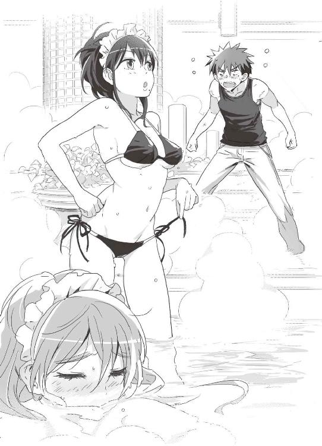
「ユキナさんも水着をつけてますよ」
鈍い謙吾も、ようやく自分が年上の女性にからかわれていることに気づいた。
「亜佑美先輩......！ わけわかんないことやってないで、本題に入りましょうよ。俺だって、好きでここにいるわけじゃないんですから」
「生真面目なことを......本当は嬉しいくせに。そういうの、むっつりスケベって言うんですよ」
「亜佑美部長をいやらしい目で見るな！ 謙吾！」
「見てないよ！」
「そんなことより、任務の話を」と亜佑美。
「それはさっき俺が言ったんですよ！」と謙吾。「しかし、今さらですが......他のメイドが入ってきたりはしないんですか？」
「私、有能でしょ？」亜佑美が、本気か冗談かわからない微笑を浮かべて言った。「だから、この船の中で、あっという間に新入りのメイドたちの中ではリーダー的な立場にまで出世しているんです。他のメイドのスケジュールくらい、ある程度調整済みですよ。しばらくは安心していいです」
「なるほど、さすが抜け目ない......」
「それでも人が来てしまったら、三人でえっちなことをしていた風を装ってごまかしましょう」
「ぶ！」
謙吾とユキナは同時にこけそうになる。
「ここのメイドさんが、密かに船のお客様と親密になって、大浴場で逢引というのはよくあることなんです」亜佑美はうっとりとした表情だ。「たまに、メイド同士とかも......そういうときは、仲間は気を遣うようにしているので」
「まだ、俺をからかってるんですか......？」
「あらあら、私変なこと言いましたかしら」
口に手を当ててわざとらしく笑う亜佑美。また話が横にそれた。
「亜佑美先輩は、幹部の第一四層にも出入りできるんですよね？」謙吾は、強引に任務の話を始めた。こうでもしなければ、いつまでも亜佑美の悪ふざけが続くところだ。「そこで、無線ＬＡＮアダプタを接続できるポイントはありませんか？」
「あるにはあるんですが......」
「問題が？」
「はい。一四層のパソコンがある部屋には、ほとんど金属探知機のゲートと警備員が。それに、メイドたちはエレナ・ヴェガの副官であるエスメラルダによってかなり念入りな身体検査をされます。装備を持ち込めば、発見される可能性がかなり高い」
「さすがに、楽じゃないか......」
「そのうち、ユキナさんも一四層に呼ばれるかもしれない。二人がかりで探せば、いい場所が見つかるかも」
「お願いします」
「見つかったら、またここで打ち合わせを」
「......それは勘弁してください」
「じゃあ、次は女子トイレで」
亜佑美がまたふざけて言った。それにとうとう腹を立てた謙吾は、拳を固めて震わせる。
「......いくら先輩で女性でも、俺がいつまでも下手に出ると思ってたら大間違いですからね」
「いくらあなたが優秀な兵士でも、ただそれだけで私に勝てるとでも？」謙吾を怒らせても、亜佑美は余裕の表情だ。「戦いは暴力だけじゃ決まりませんよ。たとえば......」
「へ？」
亜佑美は、いきなりユキナの水着の留め具を外した。ユキナが身につけていた水着の上を奪い取り、それを謙吾に向かって投げる。
「きゃああっ！」
ユキナは手で自分の胸を隠し、湯船に頭まで沈めて姿も隠した。それほど恥ずかしかったのだ。間違ってもこんな形でユキナの胸を目にしないように、慌てて瞼を閉じる謙吾。浴槽から出た亜佑美は、謙吾に駆け寄って軽く足払いをかける。
「はい、隙あり」
無防備なところで足を刈られて、謙吾は思い切り引っくり返ってしまった。
「卑怯すぎる......」悔しげにつぶやく謙吾を見下ろして、亜佑美は悪びれもせず「諜報員に卑怯も何もないですよ」と言い放った。
第五章 アヤハナの獣性
１
武田爪兵とアンナトゥリーは、豪華客船でちょっとした休暇をもらえた。しかしそれは「イエニ・チェリがいる間は休んでいていい」ということなので、爪兵は終始不機嫌だった。
「プールで少し泳いでくる。お前は好きにしろ。ただし、俺にはついてくるな」
と言い残して、さっさと部屋を出ていってしまった。一人になりたかったのだろう。二人に割り当てられたのは、ラ・パッショナリアの第一三層にあるゲストルームだったが、爪兵がいなくなるとアンナトゥリー一人には広すぎた。
「......えっと......うーん......」
どうしようか悩んだ末に、アンナトゥリーは自分も水着に着替えて自分の部屋を出た。それから爪兵を追いかけてプールに向かう。そこで会えばまた怒られるかもしれなかったが、アンナトゥリーは彼の近くにいたかった。
罵声を浴びせられようと、足蹴にされようと、自分は武田爪兵に尽くす義務がある──アンナトゥリーはそう考えていた。彼のためならばどんな屈辱にも耐えられるし、彼の傍にいるためならどんなことでもできる。
アンナトゥリーは自分の体形が子供っぽいことを自覚しているので、水着もあまり露出度が高くないものを選んだ。フリルがついた花柄の可愛らしいワンピースだ。この船の中では、客がプールまで水着で移動するのは別に珍しいことではない。濡れた水着のまま食事ができるレストランもあるほどだ。
アンナトゥリーは水着になっても、データ収集用の首輪はそのままだった。下手にこれを外そうとすれば、電気ショックが流れて体が動かなくなる。肩にタオルをかけて、とことこと歩いていく。
ところが、その途中で──。
「道に迷ってしまいました......」
アンナトゥリーは迷子になってしまった。
「......ん？」
潜入捜査中の梓馬亜佑美は今日の午前中、船内プールでゲストを接待する係に任命されていて、黒のメイド用ビキニ水着と水に濡れても平気なミニエプロンを身につけていた。そしてプールに向かう途中の通路で、途方に暮れている様子の少女を見かける。電子化された船内案内の見方がわからないようだ。
「お困りですか？」と話しかける。
「あ、いえ、その......」少女は頰を赤くしておろおろしている。
この船ではあまり見かけないタイプの少女だった。もろくて壊れやすい、美しい蜃気楼のような少女。潤みがちで切なそうな瞳がたまらなく印象的だ。何か引っかかるものを感じて、亜佑美は積極的に提案する。
「プールまででしたら、ご一緒しましょうか？」
「はい、ぜひ......」
亜佑美とその少女──アンナトゥリー──は、並んで歩き始めた。
２
謙吾はアスハブに「荷物も全部持ってこい」と呼び出されて、選手控室から第一三層のゲストルームに移った。ゲストルームの区画は警備も厳しいが、話が通っているらしく、謙吾が止められるようなことはなかった。部屋に入るとアスハブがすでにいて、気の早いことにゲーム機のセッティングを始めていた。
「よう、来たな。今日からここがお前の部屋だ」
「余計な事をすんなよ」
と言って、謙吾は自分の荷物をソファの上におろす。
「これで、お互いの部屋を行き来するのが楽になったじゃないか」
「格闘試合の会場には遠くなった」
「直通エレベーターがあるからあんまり変わらんよ」
エレナの組織にとって重要な客には、第一二層、第一三層のゲストルームが割り当てられるという。リビングに寝室、ダイニングキッチンまである広い部屋だ。リビングの壁際には七〇型近い液晶テレビが設置されていて、それにアスハブが現用のゲーム機を次々と接続していく。
「俺といるのは楽しいか？」
ふと不思議になって、謙吾は訊ねた。
アスハブは作業を続けながら答える。「俺たちには共通点がある。たくさんの仲間がいて、それを失ってきたという共通点だ。丸いボールをぶつけても、形は合わない。欠けたもの同士なら、ギザギザが嚙みあうこともある」
ああ、こいつとは戦いたくないな、と謙吾は思った。
ゲーム機のセッティングを終えたアスハブが顔を上げると、謙吾の荷物の中にいくつかの携帯ゲーム機が入っていることに気づいた。「ＰＳＰじゃないか」
「ああ。ローマの剣闘士のゲームが入ってる」
そのＰＳＰはグリークスの特殊作戦用で、取り外し可能な小型無線機や無線ＬＡＮアダプタが中に隠されているが、普通のゲーム機として遊ぶことも可能だ。
「それなら俺も持ってる。好きなゲームだ、対戦しようぜ」
「お前はそればっかだな。日本の中学生みたいだ」
「悪いかよ」
「いや、全然。俺もこんな仕事をしてるが、中身は子供だと思ってる」
「男ってのはいつまでもそういうもんらしいぜ」
「アスハブはアメリカ製のゲームはやんないのか？」
「技術は凄いと思うんだけど、なんとなく日本のゲームが一番肌に合うんだよ。──なんでだろうな？」
首を傾げつつ、アスハブは自分のＰＳＰを尻のポケットから取り出して電源を入れる。
「わかる気がする......」日本人である謙吾は、少しだけ誇らしい気分だった。「日本のアニメやゲームは、たとえ暴力的な内容でも、どこかで平和の香りがする」
「なるほど......それはあるかもな。日本は平和な国だ。俺は平和を知らない」
アスハブの言葉は、謙吾の胸に突き刺さることがある。アスハブの目は、見ているこちらが切なくなるほど澄みきっていて純粋だ。
謙吾は「......なんだか申し訳ないよ」と、重荷を背負わされた老人のような、悲しげな面持ちで言った。
「どうした、謙吾」
「ロシアとチェチェンは戦争状態にある」
独立しようとするチェチェン共和国と、それを認めないロシアとの戦い。
それが、二次にわたるチェチェン戦争だ。
戦争が始まって一四年間で、チェチェンでは総人口の四分の一が死亡したとされている。大虐殺だ。ロシア側はチェチェンでの戦闘を「清掃」と呼んでいたという話もある。
圧倒的な戦力のロシア軍に対して、チェチェン独立派の一部はテロリスト化。事態は泥沼化している。
「第二次チェチェン戦争が始まったとき、国際世論は横暴なロシアを非難。しかし、日本と中国は仲良くロシアへの融資を継続した。日本は、七億ドルもの追加融資を。目的は、ロシアの石油パイプラインだ。パイプラインは結局中国優先のルートになって、日本はまた無駄な金を使った。だが、それよりも問題なのは、日本政府は石油のためにチェチェンの虐殺を非難もせず、融資で援助したという事実だ」
「そういう話か」アスハブは謙吾に気にするな、と笑いかける。「仕方がない。国家がやることだ。お前が気に病むことじゃない」
「でも......」謙吾は、言っているうちに眉間にしわが寄った苦い顔にならざるをえなかった。「大半の国民は、日本政府が遠回しに戦争に加担していることの重大さを知らない。知ろうともせずに、バカなテレビのワイドショーに釘づけになってる。腹立たしいよ」
会話しつつ、二人はＰＳＰのゲームを始めている。半裸に近い剣闘士が兜を被り、槍や剣を構えて血飛沫を散らし合っている。
「いいんだ。人間の世界ってのはこういうもんだ......」とアスハブ。ため息のような微笑と鉛のような絶望が入り混じる、複雑だが静かな表情だった。
「......俺は諦めてる。憎み合って、奪い合って、罵り合って、命も奪い合う──これが、人間の世界の正しい状態なんだ。こんな世界で、自分がどう豊かに生きるか。それだけを考えて生き残ればいい」
「それは......」
反論しようとして、謙吾は言葉に詰まった。
「昔、エレナ様にそう言われた。俺は、その言葉を真実だと思った。だから、忠誠を誓ってここにいる」
そこで、決着がついた。謙吾の剣闘士がアスハブの剣闘士にとどめを刺す。
「現に、ゲームの中でも殺し合っている」と、アスハブは笑う。
対戦は続く。アスハブの話も続く。
「それに日本人にだって凄い奴はいる。今から三年くらい前だ」
「......三年前？」
「どこかの民間軍事会社から、チェチェンに軍事顧問が派遣された。それが、見た目は子供みたいな日本人の少年だったらしい」
「............」
「俺は当時チェチェンにいなかったから、話を聞いただけだ。最初はチェチェンの軍人たちは冗談かと思った。だが、その少年兵はスフミ、コドリ渓谷、イングーシ国境付近を転戦。ロシア軍を苦しめて実力を認めさせた。ロシア軍はその日本人少年兵を『ハリネズミ』と呼んで恐れた。その少年がいつも、大量のＲＰＧや何丁ものライフルを抱えて移動していたから、そのあだ名がついたらしい」
「他にも、チェチェン軍には日本人の義勇兵が何人もいた。真実を報道しようとしたジャーナリストたちも。俺はそういった日本人に感謝している」
微妙に居心地が悪くなって、謙吾は苦笑いを浮かべることしかできなかった。
ゲームばかりしているうちに、ほぼ同じタイミングで二人の腹の虫が鳴った。
「軽くなんか作るよ」アスハブが立ちあがった。
「そこまでしてもらうのは、悪い」と謙吾。「近くのレストランでもいいじゃないか」
「俺の故郷では、客は手作りのメシでもてなすもんだ。ペリメニを作ろう」
「ロシア餃子か」
「チェチェンでもよく作る。ただ、ロシア人と違って辛い味付けにする」
生地に具を入れて茹でるだけの簡単な料理だ。中華の餃子と違って、丸っこく生地を包む。皮を厚くして、中の旨味が詰まった汁を逃さないようにする。
「色々悪いな」
「いいんだ、この船の生活は退屈だ。謙吾がいて本当に助かってる」
３
梓馬亜佑美とアンナトゥリーが、二人並んでプールを目指して歩いている。
「お客様は、バビロン・メディスンのかたですか？」
「はい、一応......」アンナトゥリーは曖昧にうなずく。「......兵士だか、あの会社のペットだか......よくわからない立場ですけど」
「失礼ですが、研究部門ということですか？」
「そんな感じです。詳しくは話せませんけど......」
亜佑美は表面的には笑顔だが、裏ではずっと油断なく少女の正体を探っていた。そういえば、ビーバス＆バットヘッドの報告に、敵のギルガメシュとナイチンゲールの情報があった。そのナイチンゲールかもしれない──と亜佑美は推測する。
「ここです」
本当はもう少し話していたかったが、目的地にたどり着いてしまった。
競泳用ではなく、完全に遊戯用のプールだ。その広さは、ほとんど小さな海と言っていい。プールサイドにはビーチベッドや小さなテーブルが並んでいる。この船に招待されたＶＩＰやその愛人たちが、露出度の高い格好で水遊びに興じている。
「あ、どうもありがとうございます......」
「それでは」
亜佑美は、アンナトゥリーに背中を向ける。すると──。
「あの」
呼び止められた。亜佑美は再び振り返って「はい？」と微笑みかける。
「少し、話し相手になっていただけませんか......？」
アンナトゥリーは、勇気を振り絞ったような口調だった。
「ええ、もちろん」
願ったりかなったりだ。情報収集のために、彼女の話をもっと聞いておきたい。
「改めて。私は接待係メイドの東村アユミと申します。お見知り置きを」
「私は......アンナトゥリー・コルサコフです。よろしく......」
二人は、プールサイドの誰も使っていないビーチベッドに並んで腰をおろした。
「すみません......なんだか、ちょっとさびしくて。まわりがあんまり賑やかで楽しそうだと、逆にすごく辛くなってくるんです......『私だけ、一人なんだ』って......」
「失礼を重ねますが......男性のお客様がご同室ですよね？」新入りの教育係を任されるほどこの船になじんでいる亜佑美は、ゲストルームの利用者をほぼすべて把握していた。スタッフルームの客室表には、部屋の利用者数とその性別が記されている。もちろん、それ以上の個人情報までは伏せられているが、性別がわかればそれだけでも手掛かりになる。「てっきり、ご家族か恋人かと......」
「そういうんじゃないんです......私と武田さんは......ある人の『死』によって、かろうじてつながっている......そんな関係......」
「............」アンナトゥリーの言葉で、亜佑美の記憶の扉が開く。「私の母は、科学者でした。でも、ある研究をめぐって命を落とすことに」
亜佑美の母──ＧＥＮＥＺの主要開発者の一人だ。ＧＥＮＥＺバットヘッド１が盗まれたと聞いて、亜佑美の胸はざわついた。あの兵器のために、母は文字通り人生のすべてを捧げたのだ。ＧＥＮＥＺの悪用など、娘として許せるものではなかった。
「母の死が、私の人生も変えました。そして、色々な出会いが」
母がＧＥＮＥＺの開発を巡る戦いの中で死ななければ、亜佑美がグリークス、海神学園特進クラスに入ることもなかっただろう。
「誰かの死によって、失われるものと、それが切っ掛けで新たに生まれるきずなもある。難しいものですね......人の一生は」
「あなたは、どうしてこの船でメイドに？」
アンナトゥリーが不思議そうに訊ねた。
亜佑美はおどけた調子で答える。「話せば長くなります。いわばさすらいのメイドでして」
「はあ......さすらいの......」
「旅をしながら、ご主人様を代えつつ......風の吹くまま、気の向くまま」
「旅のメイドさんって......なんだかかっこいいですね」
アンナトゥリーは鈴を転がしたように笑った。ひとしきり笑ってから、小さくため息をついて地平線のかなたを見つめるように目を細めて、言う。
「......私も、たまに遠くに行きたくなります」
「......行けないんですか？」
「私は、囚われると同時に守られてもいるから。どこにもいけないんです」
「おい」
そのとき、アンナトゥリーに尖った声が振りかかった。よく鍛えられた、引き締まった筋肉質の体を持つ少年が、少女たちに冷たい視線を送っている。少年はトランクス型の水着姿で、かなりたっぷり泳いだあとのようだ。
武田爪兵はプールサイドでアンナトゥリーを見かけて、うんざりして声をかけた。
「あれほど俺についてくるなと言ったのに、このバカは」
「す、すみません......」
小動物のように怯えて頭を下げるアンナトゥリー。
「では、私はこれで......」
と、アンナトゥリーの隣に座っていたメイドがそそくさビーチベッドを離れた。
「あ、はい......ありがとうございました」
アンナトゥリーは、メイドに向かって名残惜しそうに手を振る。
「メイドとなんの話をしてたんだ？」と爪兵は訊ねた。
「不思議なメイドさんでした。旅とか......人生の話を」とアンナトゥリー。
「メイドに人生の何がわかるってんだよ、まったく」
４
第四層、格闘選手用の六人部屋で、セルジュと彩離はぼんやりと内容のない話をしていた。
「もうちょっとしたらメシかな。何にしよう」
「さあなあ。ここの食堂のメニュー次第や」
とりあえず、試合が決まるのを待つ以外にできることがないのだ。謙吾とはなんだか連絡が取れないし、いくら潜入捜査は難しいといっても、あまりにもこちらの手際が悪すぎる。「こんなところでメニューの心配してる場合じゃないんだろうけどさ......」「ほんま、他にやることもないしなあ」「謙吾はどこで何をやってるんだか、まったく」
やがて、先に彩離に試合が組まれた。
「堤彩離はこの部屋だな？」
船の乗務員が選手を呼びに来たのだ。
「あ、はいはーい」と、軽い調子で手を挙げて応える彩離。二段ベッドの上から飛び降りて、セルジュに小声で「じゃあ、ちょっといってくるね」と告げる。
「あいよ、油断するんやないでェ」
配管がむき出しの狭い通路を抜けて、違法格闘大会の会場へ向かう。豪華客船ラ・パッショナリアの重要な見せものの一つ──ブラック・フィスト・ノックアウト・ステージ。
通路の先にある金網のゲートを潜って、六角形のリングへ。
対戦相手は、薄い唇の上に細いひげを生やした、マウリシオという男だった。司会進行役の男が、ブラジリアン柔術家だと紹介した。
（寝技が得意で得意で仕方ないって体つきだな......）
打撃系と寝技系で筋肉のつきかたが変わる。寝技系の選手は打撃系の選手よりも胸板がやや薄く、足も細く、そのかわり背中や腹筋はギチギチに張り詰めて、特に前腕の筋肉が発達していることが多い。
リングを取り囲む観客席で、賭け金の設定が終わる。闘犬か、古代ローマ帝国の剣闘士になったかのような気分だ。
「！」
試合開始のゴングが鳴った。
彩離はジャブとローキックで様子を見るが、マウリシオに打撃に付き合ってくれる気配はない。こちらを女と思って侮っている様子もない。
それまで向かい合っていたマウリシオの姿が、視界からかき消えた。危ないと思った瞬間、彩離は視線の角度を少しだけ下げた。柔術家を見失ったら、低い体勢でタックルを仕掛けてくるに決まっている。
マウリシオのタックルは、彩離の胴を狙っていた。
反射的に、彩離は敵を膝蹴りで迎撃。カウンターの一発でノックダウンを狙ったが、マウリシオはぎりぎりのところで踏みとどまって彩離の膝をかわした。
「よっ」と彩離はバックステップで間合いをとる。
マウリシオはもう一度タックル。
「く！」
今度は、胴をつかまれた。そのまま一気に倒されそうになる彩離。咄嗟に、マウリシオの後頭部に肘打ちを落とす。
普通の格闘技の試合では、後頭部への打撃は固く禁じられている。頭を低くしてタックルを仕掛けてもリスクは少ない。しかし、ルールが緩い違法の格闘試合ではそうはいかない。下手にプロでの実績があれば、それがマイナスに働くこともある。
後頭部への肘打ちは、一撃で致命傷になることもある凶悪な攻撃だ。ここで、彩離は躊躇してしまった。さすがに、試合で殺すのはやりすぎだと考えて、肘打ちに四割ほどの力しかこめなかったのだ。
「がっ！」
とくぐもった悲鳴をこぼして、後頭部を打たれたマウリシオは彩離から離れた。やっぱり今ので終わらせておけばよかった、と彩離はすぐに悔やむ。
すぐにマウリシオは三回目のタックルだ。さすがにワンパターンな敵の仕掛けに、狙いすました彩離の後ろ蹴りが炸裂した。
「！」
肉がひしゃげるような打撃音のあと、マウリシオは後方に少しよろめいてから尻餅をつく。そこに駆け寄って、彩離はサッカーボールキックでとどめ──。
いや──サッカーボールキックは空を切った。
「あっ！」
マウリシオは床を這うようにして彩離の蹴りをかわし、残った足を両手でつかんで引っくり返した。試合場の床で強かに背中を打つ彩離。一瞬呼吸が止まる。
すぐに、マウリシオがのしかかってくる。
彩離とマウリシオの試合は、船内の各所のモニタで放映されている。
プールサイドにも、防水のモニタが設置されていた。
「あいつの顔......知ってるぞ。確かグリークスの女傭兵だな」
生放送中の試合を見て、武田爪兵はつぶやいた。
彩離を倒し、馬乗りになろうと飛びかかるマウリシオ。
刹那、彩離は素早く逆立ちになり、そこから急激に横回転した。独楽のように回りながら、強烈な蹴りを繰り出す。
「マウントを狙ってきた相手に、カウンターでカポエイラの蹴り！」モニタを見つめたまま、爪兵は言った。隣にはアンナトゥリーがいたが、独り言のようなものだった。「どんな運動神経してるんだ、あの女」
蹴りを食らって仰け反るマウリシオ。
彩離は一瞬で立ちあがり、マウリシオの顔面に前蹴り。彼のアゴと歯をかち割る。
「いくぞ、アンナトゥリー。やはり、敵が潜り込んでいやがった」
５
「まあ......こんなもんかな」
終わってみれば、彩離は汗一つかいていなかった。いくら若くても、何でもありの試合となれば彩離の豊富な実戦経験がものを言う。プロのリングで戦うよりも、本物の戦場をうろつくほうが上達は早い。
「ああ、ちょっとおなかすいたなー」
控室に戻ったら何か食べにいかなきゃなー、謙吾とはちゃんと連絡とれるかな、次の試合が決まる前にはもっと任務を進めておきたいな──などと彩離はとりとめもないことを考えていたが、いつまでたっても出入り口のゲートが上がらない。
「......ん？」
かわりに、対戦相手が使ったゲートが上がって、メガネをかけた少年が入ってきた。
「引き続き、特別試合を開催します！」
司会進行役の乗務員がマイクでがなりたてる。
「少女は堤彩離。民間軍事会社グリークスの傭兵！ 対するは武田爪兵！ 民間軍事会社バビロン・メディスンの所属です」
「......正体がばれちゃったわけか」
彩離は肩を落としてため息をついた。
「そういうことだ。銃は使わず、格闘で仕留めてやる。生け捕りにしたいからな」
爪兵は両腕を顔の位置まであげ、ボクシングのオーソドックスに構えた。
「......大勢でかかってくればよかったのに」
と、彩離も右半身の構えをとる。
「余裕だな、お前......！」爪兵は酷薄な笑みを浮かべた。「素手の女相手に、大の男がそんな恥ずかしい真似ができるか」
「そっちこそ余裕じゃん。きっと後悔するよ」
正体がばれてしまった以上、彩離がこのまま無事にすむことはない。目の前にいる爪兵を倒しても次から次に警備の人間が出てきて、最終的には取り押さえられるはずだ。船の上では逃げ場所もないし、謙吾やセルジュに助けを求めても間に合わないだろう。
（それでも......）
目の前の敵──武田爪兵がやたら強そうなのが、わくわくする。気配だけでわかる。並みの格闘家とはものが違う。さっきの柔術家なんて話にならない。本気になったときの謙吾──それに近い印象を受ける。これほどの強敵を前にして、怯んだり弱気になったりしている場合ではない。
じりじりと間合いを詰めて、爪兵が戦いの火蓋を切った。彩離の外側に回り込みながらジャブを連打する。素早く、無駄がない、かみそりのようなジャブだ。パンッパンッ！ と数発が彩離の顔面に炸裂して、あっさり頰の皮膚が浅く切れて血が滴る。グローブをつけていないボクサーと殴り合うと、こうなる。
「俺は相手が女でも容赦せんぞ。戦場では、老若男女すべてが危険な存在になりえる」
「誰が手加減してくれなんて言ったよ？」
彩離もパンチを打ち返した。──が、爪兵は軽快なダッキングで紙一重でかわす。
手技の攻防では、完全に爪兵が上だ。
彩離は、爪兵が飛び込んでくるのをローキックで止めた。
「！」
鋭い蹴りが、爪兵の太腿に突き刺さる。
彩離の蹴りの威力に驚き、目を見張る爪兵。
（......ちゃーんす！）
彩離は床に手をついて、大胆に体を傾けつつ後ろ回し蹴りを繰り出した。
カポエイラの半月後ろ回し蹴り──メイア・ルア・ジ・コンパッソだ。
「──ふっ！」
爪兵は、咄嗟に身を引いて蹴りを避けた。彩離のカカトが、爪兵の顎まであとほんの数ミリというポイントをかすめる。
「はッ！ 残念！」
半月後ろ回し蹴りなんて、普通は実戦で使うものではない。そんな大技を使えば、必ず体勢を崩してしまう。そこに一発叩き込むのが、格闘技のセオリーだ。
爪兵はセオリー通り、大技を外した彩離に対して瞬時に反撃に移る。
しかし──。
（かかった！）
爪兵の反撃は、彩離の予想通りだった。カポエイラの蹴りには、回転を続けることですぐに次の蹴りにつなげることができるという特徴がある。確かに大技は隙だらけで下手に使えばカウンターをもらってあっさりおしまいだが、使い手の身体能力と工夫次第で奇襲の連続攻撃に化けるのだ。
彩離は一発目の蹴りの勢いを利用してさらに加速し──。
二発目の半月後ろ回し蹴りにつないだ。
これは、さすがの爪兵も避けられなかった。蹴りが爪兵の頭部を打ち抜き、彼がかけていたメガネのフレームがぐにゃりと歪む。
よろめいた爪兵に、彩離はテコンドーのティミョ・トラ・ヨプチャチルギ──跳び回転後ろ横蹴りを打ち込んだ。跳び上がり、回転しながら、槍を突き刺すような蹴りを放ったのだ。キック系格闘技のエキスパートである彩離ならではの、蹴りの連続攻撃だった。
爪兵は思い切り吹き飛ばされて、数回転がってからようやく受け身をとった。
「くっそ......」
立ち上がり、構え直しつつ爪兵は低くうめく。
「もう、謝っても遅いんだからね」と、勝ち気な表情で彩離。「しかし、あたしの蹴りを食らってよく立てるもんだ」
「打たれ強さには自信があってね」
爪兵は、フレームが歪んだメガネを外す。
「ところで、こんなのはどうだ？」
「──ッ!?」
外したメガネを、彩離に投げつける。どうせ伊達メガネだ。惜しくはない。
飛んできたメガネを、彩離は反射的に左手で叩き落とす。そこに、一瞬気をとられる。
爪兵は彩離の股間に滑り込んだ。両足を彩離の左足に絡めて、倒す。
「くっ」
爪兵は両足で彩離の膝を固定。両手で彩離の足首をつかんで、ひねる。
関節技──ヒールホールド。固めるのは踵、ひねるのは足首だが、極まるのは膝関節だ。
「がっ！」
骨がきしみ、筋肉が断裂する嫌な音がした。靭帯を損傷したのがわかる。
爪兵は素早く反転。
彩離に馬乗りになって、上から拳を落としてくる。彩離は必死に両腕で顔を守る。
爪兵は、今度はその腕をとりにきた。サイドポジションに移行して、両手で彩離の右腕をつかむ。一瞬で、右肩の関節を外される。
「くああッ！」
あっという間に、二か所破壊された。
油断していたわけではない。敵の動きが速くて、しかも正確で──対応できなかった。彩離の全身の毛穴から脂汗がにじみ出る。釣りあげられた魚のように苦悶し、のたうち回る。
「なっ......くうぅっ......！」
「勝負あったな」
爪兵は彩離から離れて、勝ち誇った顔で言った。
──なんだろう。
この痛みには覚えがある、と彩離は思う。
心臓の鼓動がにわかに速まる。興奮しているのは、ただの痛みのせいだけではない。敵──爪兵の背中が遠ざかっていく。
彩離の頭の中で火花が散った。目の色が変わる。自分でも知らないうちに、獣じみたうなり声を発している。彩離の心には傷がある。その傷が開いて、胸の奥が血で溢れる。
「──お前は今日から堤彩離だ」
「祖国統一のため、働いてもらう」
手ごわい相手だったが、一対一で叩きのめすことができて爪兵は満足だった。あとは警備の連中にあの少女を渡して、処刑でも拷問でも好きにすればいい。──だが、あれほどの使い手が死ぬのは少しもったいない気もする。
「ん？」
妙な気配を感じて、爪兵は立ち止まった。
その後頭部に、彩離の蹴りが命中する。
「なッ!?」
ギリギリのところで直撃は避けるが、満身創痍の彩離が立ちあがり、しかも蹴りを打ってきたことに爪兵は戸惑いを隠せない。
爪兵が慌てて拳を構えると、さっきまで激痛でのたうち回っていたはずの彩離が立ち上がり、トンッ、トンッと軽く跳んでリズムを刻んでいる。
「マジかよ......膝の靭帯損傷に右肩の亜脱臼......プロの兵士でも、格闘家の大男でも、泣いてわめいて動けなくなるケガだぜ？」
筋肉の力だけで靭帯の損傷をカバーし、肩は自分で強引にはめたのだろう。それでも、痛みが消えるわけではない。よく戦えるものだ。
（しかし、それにしても......）
今の彩離は無表情で、妖怪にでもとりつかれたかのような据わった目をしている。さっきまでとはまったく違う、ためらわず敵を殺せるタイプの顔だ。ぞくぞくするほど爪兵の好みの表情だった。
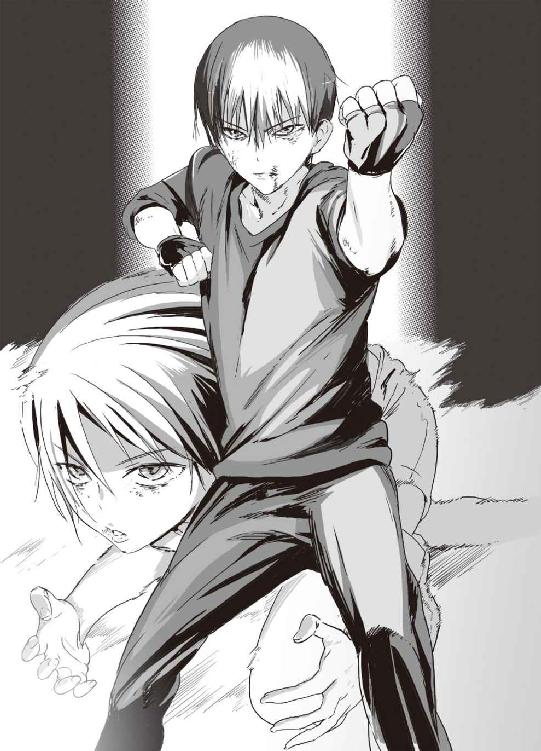
変わったのは、表情だけではなかった。動きの速さがまるで別人だった。一瞬で間合いを詰めて、目にもとまらぬ上段回し蹴りを打つ。鞭を振るうような、超高速の蹴りだ。爪兵は慌てて両腕でブロックするが、威力が貫通して呼吸が止まりそうになる。
彩離は下段の蹴り、中段の蹴り、後ろ回し蹴り、飛び蹴り──巧みに打ち分けて、爪兵は手も足も出ない。蹴りの暴風雨だった。強烈な蹴りが爪兵の肝臓を打ち、首筋を打ち、側頭部を打つ。打撃音が響くたびに、観客席で待機中のアンナトゥリーが悲鳴をあげる。
爪兵の唇が切れて口の中は血まみれで、鼻の骨も折れていた。顔も二の腕もあざだらけで、赤黒く腫れあがっている。ほんの数秒で、彩離に何十発も蹴られた結果だった。
様子を見ていたバビロン・メディスンの兵士たちが、銃を構えてゲートに殺到してきた。
「待てッ！ 手を出すな！ 俺の獲物だ！」
しかし爪兵は兵士たちを制止し、構えを変える。
「お前みたいないい女、初めてだ。──奥の手で、相手してやるよ」
爪兵には叔父がいる。
その叔父は、古流武術の達人である。爪兵の死んだ父も、同じ流派の使い手だったという。
技を教えてくれた叔父はいつも言っていた。
「俺たちの技は、一度暴走が始まったら歯止めがきかない人殺しの技だ。よほどのことがない限りは、使うな」
その言いつけを守って、爪兵は普段はボクシングやレスリングの技以外は使わないようにしてきた。
だが、恐ろしい強さの少女を前にしてその禁を破る。
「武田新陰流──」
爪兵は、北斗七星を踏むような独特のフットワークで彩離の懐に潜り込んだ。
体を密着させて、てのひらの底を彼女の腹に押しつける。
通常、密着状態で相手に強い打撃を与えることはできない。
ただし、「寸勁」ならば話は別だ。
わずかな動作で高い威力の打撃を放つことを寸勁という。一寸離れていればいいことから、その名前がついた。
寸勁の技術をさらに高めると、完全に密着した状態からでも「生きた」打撃を出せる。爪兵が使う武田新陰流では、その技法を「毫勁」とよんでいる。
ドンッ！ と爪兵の毫勁が爆発して、彩離の体が吹き飛んだ。
「裏七本目毫勁『轟天砲』」
と、爪兵は使った技名を口にした。これは、教えてくれた叔父の癖が移ったものだ。
「がは！」
彩離はリングの金網に叩きつけられて、そのまま──とうとう完全に意識を失った。
第六章 オークション
彩離を倒したのは爪兵であり、彩離はバビロン・メディスンの捕虜となったわけだが、エレナ・ヴェガが「その娘を少し使いたい」と言い出した。
バビロン社長のセルジオが「何に使う」と訊ねたら、エレナは「この娘の狙いがＧＥＮＥＺの奪還だとするなら、グリークスの仲間が他にも潜入しているかもしれない。そいつらを一網打尽にしたい。この娘を人前でいたぶって、誘い出す」と答えた。
「賛成です。それなら上手くいくと思いますよ」爪兵は横から賛同の意を示す。「こいつの仲間なら、必ず助けに来るはずだ」
「ここは私の船だ」エレナは自信満々の口調で言った。「あとの手はずは、私に任せてほしい」
セルジオは鷹揚にうなずき、
「よろしく頼む」
１
──堤彩離は、鉄格子のなかで目を覚ました。
「くぅう......いたぁ......」
左足と右肩が、痛い。いや、痛いという生易しいものではない。激痛の範疇を超え、ほとんど動かすことができない。壊された直後に無理をしてしまったせいで、悪化している。なるべく早くちゃんとした施設で処置しておかないと、一生後遺症が残るかもしれない。内部で感染症が発生することもありえるだろう。大ケガだ。グリークスの最先端医療があれば、救助さえ間に合えばなんとかなるだろうが──。
「あたし......どうしてこんな無理したんだっけ......」
記憶がぼんやりしている。凄まじい吐き気がする。戦っていたのは間違いないが、途中で悪魔にとりつかれてしまったような妙な気分だ。こんなのはまるでダメだ、と一人で歯を嚙み締めて首を左右に振る。久しぶりにやってしまった。
不幸中の幸いというか、服は脱がされていない。負ける前と同じ、ぴちぴちのＴシャツにホットパンツだ。ただし、両手と両足に強化プラスチックの枷がはめられて、二つの枷が鎖によって連結されているため自由に動くことはできない。どの道、足と肩の負傷のせいでそれどころではない。
「謙吾たちが助けてくれるかな......」
悲観しても意味がない。こういうときは待つしかない。見捨てられたり、救出作戦が失敗したとしても、そのときはそのときだ。グリークスで働く学生傭兵として、常に戦死のリスクは覚悟している。
──覚悟はしているが。
（なんでだろう......）
死ねば、もう二度と謙吾と会えない。そう考えると、怖くて震えてしまう。膝が笑う。
（......謙吾と会ってから、あたし、弱くなった気がするよ）
それから数十分後、六人の兵士が独房にやってきた。ライフルの銃口を突きつけられたが、そんなことをしなくても彩離に抵抗は不可能だった。
彼らに引きずられるようにして、彩離は移動させられる。
「なんだここ......？」
豪華客船ラ・パッショナリアの第三層。
ＶＩＰ専用のオークション会場である。
小さなスタジアムのようなその会場は、人間売買専用の場所だった。
スポットライトがあたる中央のステージに、三人の男女がいた。
人民解放軍・緊急展開部隊の「非人間分隊」出身、シュー・ダオミン。相変わらずガスマスクのせいで顔は見えない。
「女の子を見せものにするのは、あまり好みじゃないんだがな......」
「シューさんが嫌なら、お、俺が楽しむど」
そして身長三メートルという、人間離れした巨体の男。
暗号名「ロングホーン」。やはり元緊急展開部隊非人間分隊の一員。
「バカ、お前にやらせてたら、あっさり殺しちまうだろうが」
「ダオミンの言う通りだな......」
この世のものとは思えない、妖艶な悪魔のような美女──エレナ・ヴェガもいる。エレナはストライプが入ったパンツスーツ姿。素肌に直接ジャケットを羽織っているだけなので、動くたびに豊満な乳房がこぼれそうになる。
「何事も、やりすぎはよくない。レディにはそれ相応の扱いというものがある」
「貴様ら......！」
人間オークション会場の中央ステージには、体操競技に使うあん馬のような器具があった。彩離は屈強な兵士たちによってそこに仰向けに寝かされて、胸と腰を突き出すような屈辱的な姿勢をとらされた。両手両足を器具の根元の方に固定され、改めて拘束し直される。
「くそっ！ 貴様ら！ ぶっ殺してやる！」
「お前に私は殺せない。どう考えても不可能だろう」エレナは鮮やかなピンク色の舌をちろりと覗かせて、凄艶な笑みを作って言う。「お前はただの美味そうなビーフシチューだよ」
「............！」
エレナの視線に、彩離は悪寒を覚えずにはいられなかった。
美しい女性なのに、氷でできた針のように冷たく鋭い雰囲気で周囲を威圧している。動物にたとえるなら、まるで凍土で生きてきたメスのオオカミだ。
「それでは、オークションを開始いたします」
エレナ・ヴェガが高らかに宣言した。会場を取り囲む観客席から拍手が沸き起こる。
「商品は、無謀にもこの船に忍び込んできた民間軍事会社の少女傭兵。まずは一〇〇〇ドルからのスタートです」
「あたしなんか、買いたがる人間がいるわけないだろ......！」
彩離は、半ば虚勢をはって言い放った。
「それが、たくさんいるんだな。君にとっては残念なことに」
言って、エレナは彩離の耳たぶを嚙む。
「......んッ！」
「人間を買うのは楽しいぞ。特に少女はな。愛玩用でも性奴隷でも。調教し、洗脳して自分の兵士にしてもいい。飽きたら拷問して遊んで、殺して捨ててもいい......！」
彩離は、暗い穴に落ちていくような絶望を味わった。
ステージの斜め上方に、電光掲示板があった。スポーツの試合会場に置くような大型のもので、様々な数字が表示されている。すぐに彩離は、それがオークションの金額の移り変わりを示すものだと気づいた。エレナの言った通りだ。
彩離の値段が上昇していく。
「......ダオミン、ロングホーン、あとは任せた。私はバビロン・メディスンとの取り引きをまとめてくる」
エレナは、一度彩離にモノでも見るような視線を送ったあと、人間オークションの会場をあとにした。
２
第四層、格闘選手用の六人部屋の壁には、埋め込み式の大きなモニタがある。普段は他の試合が流れているそのモニタには今、彩離が公開オークション形式でいたぶられている光景が映し出されている。
「............」
謙吾は第一三層にアスハブから高級ゲストルームを与えられていたが、計画を練るためにセルジュのもとを訪ねていた。
二人はモニタを破壊したい気分だが、そんなことをすれば同室の他の格闘家たちに怪しまれる。まだ、目立つのはまずい。
顔を合わせないように気をつけながら、小声で会話を交わす。
「どうやって彩離を助ける......？」
見捨てる、という選択肢は最初から二人の頭になかった。
「バビロン・メディスンの連中がこの船にやってきたということは、何か目的があるんだ。こちらも動かないと、二度とＧＥＮＥＺも彩離も取り戻せない」
「わざわざモニタで放送しとるんは、つまり罠ってことなんやろうな」
「当然、罠だ。それを食い破る」
「言うのは簡単やで。救出には、最低でも七湖のバックアップがほしい。その方法は？」
「ああ、無線ＬＡＮの接続先に心当たりがある」
「どこやねん？」
「ＰＳ３とＸＢＯＸ３６０」
「......はあ？」
「俺は、敵の幹部と仲良くなったおかげで一三層に部屋がある。そこから一四層への通路は警備が緩い。その幹部の部屋にあるゲーム機に、俺たちが持ち込んだ無線ＬＡＮアダプタを接続するんだ。最近のゲーム機は当たり前のようにネットに接続してるし、パソコンともリンクしてる。そこを利用する」
アスハブの部屋には、オンラインゲームのために常時オープンの回線があった。もしかしたら、エレナの許可を受けていない回線かもしれない。とにかく、そこが狙い目だった。
「今からユキナ、亜佑美先輩と連絡を取る。全員、密かに持ち込んだ無線通信機を装着。喉にはりつけるマイクと小型イヤホンだから目立たない。二人に計画を伝えてから、時間を決めて無線回線をオープンにする」
謙吾の計画を聞いたセルジュが眉をしかめて、
「いつものデジタル暗号くらいじゃすぐに解読される。内容は敵に筒抜けやで」
「仕方がない。ヒポクラテスから援軍を呼ばなきゃいけないからな」
行動開始。謙吾は第五層で亜佑美とユキナを見つけた。向こうもこちらを捜していたのだ。
作戦を伝えて、自分は急いで第一四層へ。まっすぐアスハブの部屋に向かう。何度か出入りしているので、警備の人間に怪しまれることもなく、ドアのパスワードも知っている。
「............」
部屋は無人だった。オークション会場か、それともエレナの近くにいるのか。どちらにしても、好都合だ。もしもアスハブがここにいたら、一戦交える覚悟だった。
ここで謙吾は、アスハブの無邪気な笑顔を思い出す。彼は、謙吾のことをほんの少しも疑わず、いい友人になりそうだと思いこんでいる。
「やりにくいな......」
謙吾は思わず独りごちた。しかし、こちらも彩離の命がかかっている。時間はない。アスハブのゲーム機に、七湖が侵入するための無線ＬＡＮアダプタを接続する。
ここで予定の時間になった。計画通り無線をオープンにする。
「七湖、聞こえるか？」
『こちら七湖。感度良好』
「無線ＬＡＮアダプタを接続した。侵入できるか？」
『ゲーム機経由ってのは変わってるけど......うん、いけるよ。もう最初のファイアウォールは突破した。船の防犯システムまで食い込める』
「よろしく頼む。急がないと、彩離が売られる」
『！ わかった！ 気合い入れていく！』
ユキナと亜佑美も無線を装着していた。
「始まった」
「さあ、私たちもいきましょう」
七湖が凄まじい速度で船内の防犯システムを掌握しつつあった。無線で七湖が道案内してくれるし、鍵のかかったドアも開けてくれる。メイド服の二人は、今まで侵入できなかった第二層に入ることができた。
下から響いてくるガスタービンの駆動音で騒がしい通路を、ディーゼルの排気筒、吸気筒の横を抜けて進んでいく。
第二層に並ぶ盗品倉庫と売買される人間の牢獄。
その奥に、警備室がある。
頑丈そうな合金製ドアの前に、二人の警備員が立っていた。どちらもアサルトライフルと拳銃で武装している。ユキナと亜佑美はなんの武器も持っていない。二人が身を隠している通路の角から、警備員までの距離はおよそ七メートル。普通に仕掛けても、射殺されるだけだろう。
「七湖さん、お願いします」と、ユキナは無線を使った。
『任せて』
警備員たちも、イヤホン型の無線を装着していた。防犯システムと直結した無線なら、それも七湖の支配下に入っている。
七湖は、警備員の無線に強烈な雑音を流した。
「──ッ！」
「なんだ!?」
突然の大きな音に驚く武装警備員たち。そこに、飛びかかる亜佑美とユキナ。二人のメイドには、どちらも武術の心得がある。亜佑美は合気道と躰道、ユキナは天照流軍用小具足だ。
亜佑美は警備兵に向かって突っ込み、相手の目前で身を沈めつつ、反転。屈んだ姿勢から、突きあげるように右の蹴りを繰り出す。躰道の変体海老蹴りだ。ドンッ！ と亜佑美の足が警備員のみぞおちを見事にとらえて、一発で失神させる。
ユキナも、もう一人の警備員に肉薄し、思い切りジャンプ。空中で手刀を放ち、敵の鎖骨に当てた。肉が薄く、神経が集まった箇所を狙う「鎖骨打ち」は、日本のやや古めの武術ではメジャーな急所攻撃の一つだ。
二人の警備員は床に倒れて動かなくなった。
「次はどうします？」とユキナ。
「銃撃戦でしょう」にこにこと微笑んで、亜佑美は倒した警備員から銃器を奪った。
拳銃とアサルトライフルが二丁ずつ。その予備弾倉も。
亜佑美はライフルを弾倉とともにユキナに渡し、自分は二丁の拳銃を左手と右手に構えた。銃の種類は、Ｓ＆ＷのＭ＆Ｐ９ｃ。口径九ミリ、装弾数一二発。ショート・リコイル方式の、コンパクトで扱いやすい拳銃だ。
「ごめんあそばせ♪」
近くにいる敵の武装警備員たちが駆けつけてきた。一〇人近い敵の増援に、亜佑美は軽やかに二丁拳銃の連射を浴びせる。正確に手や足を撃ち抜いて、命は奪わずに戦闘能力だけを確実に奪っていく。亜佑美の銃撃はタンゴでも踊るかのように華麗だ。
二丁拳銃を撃ち尽くし、亜佑美は空になった弾倉を床に落とす。
「ユキナさん、私は両手がふさがってるんで予備弾倉を」
「あ、はい！」
ユキナは、亜佑美に背中から抱きつくようにして手を前に回し、彼女の二丁拳銃に予備弾倉をさしこんだ。
「やン♪ ユキナさんの胸が背中に当たってくすぐったい」
「銃を構えた先輩の前に立つのが嫌だったから、こういう姿勢になったんです......！」
腕は立つのに、どこか軽さが抜けない人だ。
増援を片づけたところで、二丁拳銃を構えて亜佑美は警備室に突入した。
「動かないでください。抵抗すれば、可愛いメイドさんに撃たれることになりますよ？」
３
エレナ・ヴェガとその副官のエスメラルダは、豪華客船ラ・パッショナリアの第一四層ペントハウスで、バビロン・メディスン社長セルジオ、大牙厳一と取り引きの相談をしている。人の上に立つ大物たちは、重厚な革のソファに深々と腰を沈めて鷹揚に足を組んでいる。
部屋の隅には、イエニ・チェリの四人と武田爪兵もいる。指揮官たちと違い、兵士たちは壁際で立ちっぱなしだ。
「私が手に入れたＧＥＮＥＺバットヘッド１と、ミスター大牙厳一のマンドラゴラ一鉢を交換してほしい」
「問題ない。私は、そのＧＥＮＥＺをそのままセルジオに渡す」
大牙厳一は首を縦に振った。厳一がセルジオの名を口にするとき、そこには奇妙な親しみがこめられていた。民間軍事会社のトップと、日本の外務大臣。この二人にどんなつながりがあるのかは、他人には想像もつかない。
「バビロン・メディスンと厳一さんは協力関係にある」セルジオが言う。「うちの会社にとって、グリークスの主力であるＧＥＮＥＺの研究はとても重要なものだ。低強度紛争においてあれほど役に立つ兵器は他にない。残念ながら、我が社のマルチピード・アーマーの性能はやや劣る」
「エレナさんは、マンドラゴラで何をするつもりですか？」
厳一が訊ねた。
その問いに、エレナは遠くを見るような目をして答える。
「ＳＩＡとマンドラゴラ、そして『不死身の少女』を組み合わせることで、不死の秘密が明らかになるかもしれない」
「......ＳＩＡとは？」とセルジオ。
「秘密だ」エレナの返答はにべもない。そしてすぐに話題を変えていく。「ところで......あの堤彩離の他にグリークスの精鋭を捕虜にすることができたら、それとそちらのナイチンゲールを交換してほしい」
「ナイチンゲールを？」
セルジオは微かに目を丸くした。
「グリークスの精鋭とは誰だ？」と厳一。「それには、大牙謙吾とセルジュ・ドラグレスクを含んでいるのか？」
「ふうむ、その二人のことはよく知らないが......」エレナは、打算で考えるような思慮深い目つきになった。「堤彩離の仲間がこの船に乗っているとすれば、捕虜にできる可能性は高いだろう。今、まさに罠をはっているところだからな」
「二人を捕虜にできたなら、アンナトゥリーというナイチンゲールと交換しよう」
セルジオがそう言って、ぼんやりしていた爪兵は危うく聞き流すところだった。
エレナは微笑んでうなずき、
「わかった。交渉成立だな」
「ちょっと待ってください、社長！」
我慢できずに、爪兵は前に進み出て抗議の声をあげた。
「身分をわきまえろ、ニムロッド２」と、イエニ・チェリの一人が挑発的な口調で諫めてくる。うるせえ引っ込んでろと怒鳴りつけたいが、社長の前で部下が揉めるというのもみっともない。イエニ・チェリは無視してセルジオに訴える。
「アンナトゥリーを手放すということは、ギルガメシュも失うということですよ？」
当のアンナトゥリーはこのペントハウスにはいない。外で、爪兵が戻ってくるのを待っているはずだ。
「わかっている。承知の上での取り引きだ」
「それなら......」
「いいか爪兵。お前は、優秀な戦士だ。アンナトゥリーなしでも価値は変わらん。ユニット１の二人もいるしな」
「貴重なナイチンゲールですよ、社長！」
「確かに貴重だが......かわりに厳一さんの息子と未知の戦闘用ゴーレムが手に入るなら、差し引きゼロだ。その二人を切っかけにグリークスの学生傭兵部隊を壊滅させることも可能だろうし、間違いなく芋蔓式で岩清水ユキナも捕虜にできる。それに、こっちはもうアンナトゥリーのことは調べつくしている」
「しかし......」
「なんだ、アンナトゥリーに情でもわいたか？」
セルジオの表情に、侮蔑するような色が浮かんだ。それを敏感に察した爪兵は「まさか」と吐き捨てる。
「だろうな。あいつのせいでお前の姉は死んだんだ」
セルジオの口調は軽かったが、その言葉は爪兵の心を抉った。爪兵の姉──アンナトゥリーとコンビを組んでいた、先代のニムロッド２だ。彼女も、ギルガメシュだった。爪兵は何も言えなくなった。納得したわけではない。怒り、悲しみ、そしてバビロン・メディスンという会社への恐怖──様々な感情が入り混じって、混乱し、言葉が頭に浮かばなくなったのだ。
「とりあえず、エレナ・ヴェガのお手並み拝見といこう」
そう言って、セルジオは優雅に足を組み直した。
４
彩離についた値段の上昇が止まった。
「一二万ドルで落札です」とダオミン。
彩離の売買が成立したのだ。
早速観客席から、身なりのいい老人がほくほくとした笑顔でやってきた。
「泣きそうな顔だね、かわいそうに」と、老人は言う。「一応確認のために、この少女を全裸にしてみていいかね？」
「もちろんです。この少女はただの商品ですので」
ダオミンは軽く承諾。
「や......やめて......」
兎のように怯えた目をした彩離の哀願を無視して、老人の手が彩離のＴシャツとスポーティな下着を同時につかんだ。そして、乱暴に引き剝がす。
「──っ！」
引き締まった少女の肉体の上に乗ったなだらかな乳房が、大勢の人目にさらされて揺れた。彩離は声にならない悲鳴をあげ、双眸から大粒の涙がこぼれる。
「プロの傭兵なんだろう？ それなのになんだその顔は。情けない」
ダオミンが叱りつけた。
「次は下だ」と、笑顔の老人。ホットパンツのベルトに彼の指がかかる。
「やめてぇ......それだけは、やめてください......」
恥も外聞もなく、彩離は言葉遣いも改めた。しかし──。
「嫌だね。金は出したんだ」
老人は無慈悲に力を込めていく。
次の瞬間──大爆発が起きてオークション会場の壁の一部が崩れた。
両手に炎を宿らせたセルジュ・ドラグレスクが突っ込んでくる。
「セルジュ！」
「彩離！ 待たせてすまん！」
セルジュは、右手で火球を投じた。それが彩離の拘束具に直撃。ようやく解放された彩離は、露出した胸を手で隠した。
「ここにいるのは......全員人間のクズみたいやな。遠慮は無用ってか」
彩離を助けにくる仲間を待ち伏せていたエレナ・ヴェガの部下たちが、会場の四隅から現れてセルジュにアサルトライフルの銃口を向けた。
「まずは景気づけに一発！」
セルジュは戦闘用のゴーレムであり、炎の精霊を使う。
対人榴弾と言ってもいい性能を持つ火球を生み出し、それを一斉に四方に放つ。
「！」
各所で火球が炸裂し、警備員やＶＩＰたち、彩離の服を剝ぎ取った老人が爆風で吹き飛んだ。炎に包まれた人間が逃げ惑い、人間オークションの会場は一気に戦場と化す。
彩離は自分の足を引きずって移動し、セルジュに近寄った。
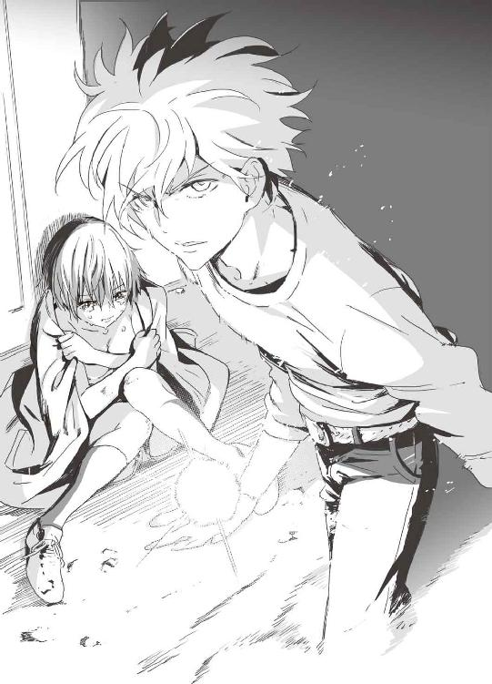
「平気......って感じじゃなさそうやな。彩離」
「そんなことないって、全然大丈夫」
涙でぐしゃぐしゃの顔なのに、彩離は親指を立てて強がった。
「お前は......ただの人間じゃなさそうだな」
シュー・ダオミンがセルジュに向かって言う。
「そういうあんたも、人のこと言えんのかい......？」
「確かに......」
ダオミンは、顔を隠していたガスマスクを外した。
そこに現れたのは──人面ではなかった。
「──ッ!?」
二本の足で立って歩いてはいるが、シュー・ダオミンの頭部はほぼ魚類だった。
ギルマン、フィッシュマン、マーマン──呼び方は様々だが、いわゆる半魚人である。中国古代の地理書『山海経』では、彼の祖先はけい魚、人魚の一種、あるいは陵魚として描写されている。
元緊急展開部隊非人間分隊の半魚人兵士。無機質な魚の目に、唇のない大きな口。全身にびっしりと鋼鉄のような鱗がついている。深海の水圧にも耐える強靭な体。ダオミンの特異な能力がなければ、強襲揚陸艦ヒポクラテスからＧＥＮＥＺを盗み出すのは難しかっただろう。
「俺も本当の姿に戻らせてもらう」
巨体で筋肉質のロングホーン。
彼のこめかみのあたりからは、短い角のようなものが生えている。
「ふぬッ......！」
その「角」がぐんぐんと伸びる。セルジュの目の前で、ロングホーンの角は大剣のように巨大化し、体は膨らみ、筋肉が硬く張り詰める。人相も変わっていって、完全に獣となる。
「ミノタウロスか......！」
「その通り。だいぶ数は減ったが、俺の一族は今も世界中で傭兵として戦っている」
ロングホーンは牛頭人身の怪物だった。
特殊部隊兵士ダオミンと、中国拳法を使うミノタウロス・ロングホーン。
ダオミンは様子見。ロングホーンがセルジュに向かって突進を開始。
突っ込んできたロングホーンにセルジュは火球を当てた。爆風と炎の壁がロングホーンの突進を阻むが、強引に突破される。ミノタウロスの肉体は、軽戦車よりも頑健なのだ。セルジュは傷ついた彩離を巻き込まないように、サイドステップで彼女から離れておく。
間合いが詰まって、ロングホーンは頭突きを放った。一瞬の判断でセルジュは飛び退き、ミノタウロスの角はドン！ と床に突き刺さる。木材と鉄筋コンクリートがめくれあがり、大穴が開く。
頭突きを外したロングホーンは隙だらけとみて、セルジュは渾身の力を込めて殴りつけようとした。火球を握りこんだ状態で顔をぶん殴れば、大抵の敵はノックアウトできる。
しかしロングホーンは素早く頭を戻し、踏み込みながらセルジュに右肘を当てた。
中国拳法式の肘打ちだ。
「ぐッ！」
とてつもない怪力から放たれる強烈な一撃を胸に食らってしまい、セルジュはオークションの経過を表示していた電光掲示板まで打ち上げられた。火花に身を焼かれて、破片とともに落下するセルジュに、ロングホーンは後ろ回し蹴りを叩き込む。
落下中で避けられなかったセルジュは、床に激突してバウンドした。「って！」一瞬で全身がバラバラになりそうだった。それでもなんとか立ち上がり、両手に火球をため直して迎撃の体勢を整える。
「なんや、この......！」
ロングホーンは中国拳法──それも、北派だ──の構えをとっている。
「──中国拳法やて!?」
「ミノタウロスがカンフー積んでちゃ悪いか？」
さらにロングホーンは、その巨体に似合わない身軽さで跳び上がり、空中で回し蹴り。
暴風のように豪快な旋風脚。
「なんて身軽なッ......！」
「いちいち驚いてんじゃねーよ！」
ロングホーンの旋風脚を、セルジュは両腕でブロック。あまりの威力に踏ん張ったセルジュの両足が悲鳴をあげて、膝まで床にめりこんだ。
「このッ......！ デカブツがッ！」
５
アスハブの部屋に無線ＬＡＮアダプタを設置した謙吾は、部屋を出て七湖に訊ねる。
「どこにあるかわかるか？」
『最下層に隠されてたＧＥＮＥＺは、すでにバビロン・メディスンに引き渡されてる！』
「もしかして、もうこの船にはない!?」
『ううん！ まだヘリの中！ 飛び立つ前だよ！』
すでにエレナ・ヴェガと大牙厳一の取り引きは成立し、ＧＥＮＥＺは大牙厳一が乗ってきたヘリに積み込まれたところだった。後部の飛行甲板を目指し、謙吾は駆けだす。
後部の飛行甲板、そしてＧＥＮＥＺが積み込まれた輸送ヘリの周囲には、重装備の警備員たちが守りを固めていた。やってきた謙吾は、物陰から様子をうかがう。数は一五人ほどか。敵はすでにライフルの安全装置──セレクターレバーもフルオートにセットしている。やる気満々だ。素手の謙吾が一人でどうにかできる戦力ではない。グリークスの援軍がくるには、まだ時間がかかる。
「重武装の警備員が多数いる！ 七湖、そっちからどうにかならないか！」
『さっきユキナと亜佑美先輩を助けるときに大きな雑音をかける手を使っちゃって......あれ以降、敵は用心して無線を封鎖してる。ごめん、何もできなくて......』
「くそッ！ 武器もなしにあの人数は無理だ！」
忍び寄って倒すには、地形が悪い。飛行甲板上は見通しがいいから、近づけばすぐに姿を見られてしまう。
困り果てた謙吾に、思わぬ援軍が現れた。
ヘリのローター音が突如近づいてきて、飛行甲板の真上で停止した。無線を封鎖している警備員たちは、ヘリが敵か味方のものか判断できず、どう対応すればいいのかわからない。
頭上のヘリに気を取られているうちに、下から完全武装の特殊部隊が飛行甲板に駆けあがってきた。ゾディアック・ボートでこの豪華客船に密かに接近し、乗り込んできた日本人の兵士たち。カスタマイズされたＭ４Ａ１カービンや89式小銃を構え、サイドアームにＳＩＧ・Ｐ２２０を装備しているその部隊は、バビロン・メディスンでもグリークスでもなかった。
「フリーズ！ 抵抗するな！」
海上自衛隊の特殊部隊──ＳＢＵだ。
少し前にソマリア海賊から助けた海上自衛隊が、ＩＣＰＯとともに突入してきたのだ。
海上自衛隊の護衛艦「かさぎ」艦橋。
「日本の自衛官として、借りは返すぞ。少年少女」
双眼鏡で豪華客船ラ・パッショナリアを監視しつつ、艦長の海宝がつぶやいた。
「あとで問題になりませんか？」
副長は不安そうな顔だ。海宝はなあに心配するなと不敵に笑い、
「俺たちは、豪華客船からの救難信号をキャッチ。国連海洋法に従って、救助活動を行っているだけだ」
「なるほど......そういうことなら、問題になるわけもないですね」
ゾディアックで乗り込んできた部隊と、ヘリから降下してきた部隊が、飛行甲板の敵警備員たちにライフルを突きつけて降伏させた。さすが海上自衛隊ＳＢＵ。実戦経験に乏しいとはいえ、世界トップレベルの訓練を積んでいるその動きは伊達ではない。まったく反撃の機会を与えず、手際良く敵の武装を解除していった。
謙吾は、手を挙げて物陰から出た。
「グリークスのものです。暗号名バットヘッド１」と名乗っておく。
「無線を傍受していました。それに、強襲揚陸艦ヒポクラテスの方々から話も聞いています。手をおろしてください」ＳＢＵの小隊長が、謙吾に敬礼してきた。「状況は、こちらもある程度把握しております」
「どうも」謙吾は敬礼を返した。
「あなたの任務を果たしてください」と、ＳＢＵの小隊長。
謙吾は小さくうなずき、ヘリの貨物スペースに乗りこんだ。その奥で、洗練されたデザインの甲冑が神像のように直立している。
とうとう自分のＧＥＮＥＺと再会したのだ。
エレナ・ヴェガの整備スタッフの手によってメンテナンス済み。いつでも着用して戦闘ができる状態に見える。恐らく、エレナからバビロン・メディスンへのサービスのつもりだったのだろうが、謙吾にとっては好都合だ。
「おい、相棒」
謙吾は、思わず自分の強化外骨格──ＧＥＮＥＺに話しかけていた。
「そんなところで、ぼうっと突っ立ってる場合じゃないぞ」
──同じころ。強襲揚陸艦ヒポクラテスのＣＩＣでは。
「ふう......」
愛用のノートパソコンとグリークスのタクティカルインターネット端末が並んだデスクに、布施七湖は落胆のため息とともに突っ伏した。敵は無線を封鎖した。さらに、七湖が乗っ取った防犯システムを、船の制御系とともに完全にオフにしてしまった。──いくらハッキングが怖いとはいえ、すべての電子機器を捨てるとは思いきったことをする。緊急非常用の特別措置だろう。
こうなると、七湖にできることは何もなかった。
「......七湖さん......」
不貞腐れる七湖に、こども学長のアイナが話しかけてきた。
「何かありましたか？ 私は暇ですけど、学長は忙しいんじゃ？」
「......援軍を出さねばなりません。しかし、ボートやヘリでは間に合わない......」
「えと、それで......私に何をしろと？」七湖には話がつかめない。「私はこの通り、パソコンの仕事がなくなったら何もできない人間ですよ」
「あなたが、ラ・パッショナリアに向かってください」
「──え？」
「本当は、訓練をしてから装着してほしかったんですが......時間がありません。今日は、人工知能オート操縦モードで戦ってください」
「は？ そ、その......どういうことですか？」
「あなたが、三台目のＧＥＮＥＺの操縦者です」
６
ラ・パッショナリア第一四層、ペントハウス。
「......あちこちで戦闘が始まっているようですね」
セルジオが、うんざりした顔で言った。
「ＩＣＰＯだけでなく......なぜか日本の海上自衛隊まで突入してきた」と、エレナは髪をかきあげる。「グリークスのことを少し侮っていたようだ。──エスメラルダ。自沈用意は？」
「初航海のときから、ずっと整っております」
女主人の物騒な問いかけにも、エスメラルダは眉一つ動かさずに答えた。
「自沈だと？」大牙厳一が目つきを険しくした。
「敵のハッキングを受けたので、すべての電子機器をオフにした。この船はもうここまでだ。沈める」
エレナは、これが当然とでも言いたげな声だった。
「少し待ってもらえないか？」
そのとき、セルジオが身につけた無線に部下からの連絡が入った。エレナ・ヴェガの部下たちは防犯システムをハッキングされた関係で無線を封鎖しているが、バビロン・メディスンの回線はまだ安全だ。
「あなたからいただいたＧＥＮＥＺが盗まれた」
「それはそちらの責任だ。こちらの知ったことではない」
冷たく言い捨てて、エレナは立ち上がった。その右手には、銀色のアタッシェケースがさがっていた。中身は、大牙厳一から受け取ったマンドラゴラだ。
「いくぞ、エスメラルダ」
「......はい」
この船の主人が引きあげてしまった。
「......なんというか、冴えない展開だな」
そう言って、やれやれとセルジオは肩をすくめてみせる。
「ヘリは、ＩＣＰＯと海自に押さえられたとか」と、イエニ・チェリの一人が言う。「我々が皆殺しにして、取り戻しましょうか？」
「おいおい」セルジオは苦笑する。「目の前に、日本の外務大臣がいるんだぞ？ ここで海自の人間を殺すのはまずいだろう。それにお前たちは私や厳一さんから離れるな」
「はッ」
「船が沈むんじゃ、こっちも逃げるしかない。なあに......問題ないさ。付近に我が社の原子力潜水艦が待機している。そこから小型艇を出してもらおう」
「俺はどうしましょうか」と爪兵。
「エンキドゥは近くにあるな？」
「はい。部屋に持ち込んであります。いつでも着用可能です」
「イエニ・チェリは私たちの護衛だ。お前はエンキドゥで出ろ。海自の人間には手を出さずに、傭兵二個分隊とともにグリークスの主力をひきつけて時間を稼げ。あとで、お前にも迎えを出して回収する。余裕があれば、敵のＧＥＮＥＺをもう一度奪い返すんだ」
「......了解しました」
セルジオと大牙厳一は、イエニ・チェリに守られつつ撤退を始めた。
武田爪兵は自分の部屋に戻った。アンナトゥリーは「爪兵さん」と不安げに瞳を揺らしている。爪兵は「気軽に俺の名を呼ぶんじゃねえ」と冷たく一言。
大急ぎでエンキドゥを装着する。
鳴り物入りで投入された新型マルチピード・アーマー「エンキドゥ」だったが、敵のＧＥＮＥＺに比べれば物足りない性能だった。車輪つきの補助脚が目立たないようについていて、両手には厳ついガントレット。問題は、爪兵の入力に対して反応速度がやや鈍く、また全体的に関節の動きが硬すぎる。爪兵が本気になって武田新陰流の技を使おうとしても、エンキドゥでは無理だ。
背後の装甲が開放されているので、そこから中に入り、手足を通す。指の内側に仕込まれたボタンを押し、足のペダルを踏み込む。背面装甲が閉まって、起動開始。ヘッドアップディスプレイ、センサー類をすべてＯＮにして、ヘルメットを被る。
ヘッドアップディスプレイは、進歩した歩兵用の装備だ。ヘルメットの目の部分、視力を保護するためのバイザーが極めて薄いディスプレイになっていて、そこにタクティカルインターネットの通信内容、ＧＰＳ情報、赤外線映像などが投影されるのだ。
「いくぞ、アンナトゥリー」
「......はい」
部屋を出た爪兵とアンナトゥリーは、一四層のバルコニーで傭兵二個分隊二〇人と合流した。傭兵たちはそれぞれ銃器に弾倉を叩き込み、コッキングレバーを引いて薬室に初弾を装塡し、これから予想される激戦に備えている。
「どうも、ニムロッド２」分隊長が挨拶してきた。
「よう。せめてＧＥＮＥＺは取り戻しておきたいよな」と爪兵。
「こちらの準備はできていますよ」
「ところが......」
そこに、エスメラルダとアスハブ──さらにエレナ・ヴェガが現れる。
「お前たちの出番はこれで終わりだ。グリークスと戦う必要はない」
「あんたら......逃げたんじゃなかったのかよ？」
エレナたちからただならぬ気配を感じて、爪兵は身構える。傭兵たちも銃口を向ける。
「船はもうすぐ沈む。もちろん逃げる」緊迫した状況とは裏腹に、エレナは涼しい顔だった。「その前に、必要なものはもらっておく。平和的に入手できれば一番だったんだがな......」エレナの目は、アンナトゥリーをじっと見据えている。
「そういうことかよ......」
確かにエレナはナイチンゲールを欲しがっていた。グリークスの精鋭を捕まえて交換したいと言っていた。ところがそれが上手くいかなくなって、強硬手段をとってきたわけだ。
「時間もない。強引にいかせてもらう。──いけ、エスメラルダ、アスハブ」
「はい」「了解」
エスメラルダは童顔で、見た目は人畜無害そのもの。アイドル風の甘い顔立ちだ。今は戦闘用の赤いエナメル質のキャットスーツで均整のとれた肢体を包んでいる。
アスハブは野性のジャッカルのような少年兵。アサルトスーツを着こみ、体のあちこちにナイフや手榴弾、発煙弾を装備。
バビロン・メディスンの傭兵に無造作に歩み寄って、エスメラルダは軽い平手打ちを食らわせた。エスメラルダはほとんど力を入れているようには見えなかったのに、食らった傭兵は派手に数メートルも吹き飛んでいく。
「！」
エスメラルダの周囲には、強烈な「風」が渦巻いていた。その風が弾丸を跳ね返し、兵士の体を宙に浮かせたのだ。
アスハブは、身につけた手榴弾を投げた。
爆発するが、飛び散ったのは破片や爆風ではなく「水」だ。
アスハブが両手を掲げると、空中に水が集まって弾丸のような形をとり、静止する。
「で、バーン！」
というアスハブの声を合図に、水の弾丸が高速で発射された。ただの水鉄砲ではない。恐ろしく硬くなっているので、簡単に人体を貫通する。一気に一〇人近い傭兵が血まみれになって倒れる。
風使いエスメラルダと、水使いアスハブ。
二人はどちらも、瀕死だったところをエレナ・ヴェガに助けられた。
弱った生命力を補完するために、物質精霊が使用された。セルジュの魂の補完に火の精霊の娘サラマンデルが使われたのと同じだ。
二人の戦闘スタイルは「精霊格闘」と呼ばれる。
生き残った傭兵たちはライフルを撃ちまくった。飛んでくる弾丸を、エスメラルダは強風でそらし、アスハブは水の壁で跳ね返す。大量の銃弾を無効化しつつ、二人は精霊格闘の技で次々と傭兵を殺していく。
エンキドゥを着こんだ爪兵の前には、エレナ・ヴェガが立ちはだかった。
エレナはレオタードのようなスーツを身につけている。しかしそれは無論ただのスーツではなく、よく見ればすべてが樹皮のようなもので構成されていることに気づく。
エレナは、鎧をつけているのではない。
皮膚や筋肉が、植物の鎧になっているのだ。
「なんだ......その体？」
爪兵は疑問をそのまま口にしていた。返答はあまり期待していなかったが、エレナは答えてくれる。「......私の父の実験成果だ。戦闘用の半植物人間。植物兵器......それがこの私、エレナ・ヴェガだ」
「そりゃあ大変だったな。学校とかでいじめられなかったか？」
爪兵はエンキドゥで殴りかかった。エレナは鋼鉄の拳をとんぼ返りで避ける。的を外したエンキドゥの剛腕が床をへこませる。
エンキドゥは補助脚の車輪を使って加速。エレナを追いかけて右のフック。しかし彼女が素早く床を転がったので空を切る。
「ちょこまかすんじゃねーよ！」
苛立った爪兵は、エンキドゥの怪力で彼女を握りつぶすためにつかみかかった。意外なことに、エレナは力比べに応じた。手と手を合わせて、四つにがっちり組んだ。「なんだと......！」と爪兵は驚きの声をあげてしまう。組み合った力が拮抗したからだ。手の大きさも体重も違う。そもそもこちらは強化外骨格なのに、エレナはまったく怯むことなく、それどころかエンキドゥを押し返してくる。
しかも、エレナの体からは植物の「つる」が伸びて、エンキドゥの手足に絡みついてきた。つるは生き物のように動いて、鋼鉄のワイヤーのように硬い。
「く！」
このままでは拘束される──。爪兵は慌ててエレナから離れて、エンキドゥのスタン・ガントレットをスタンバイ状態にした。ガントレットが変形し、スパイク状の電極が姿を現す。
この武器は、スタンガンの強化格闘戦用バージョンだった。殴ると同時に、電極から五〇〇万ボルトの高電圧を放つのだ。
「おとなしく感電してろッ！」
電極をエレナの胸部に突きこむ。
命中した。電撃がほとばしる。
しかし──エレナの体を守る植物は絶縁体だった。スタン・ガントレットは通じない。
「──しまッ!?」
しまった、と爪兵がうめくより早く、エレナの拳がエンキドゥの正面をとらえていた。チタン合金よりも強靭な植物の装甲で包まれた彼女の拳は、建物を破壊するのに使う鉄球のようだった。一撃でエンキドゥの装甲が歪み、駆動系に火花が散った。
爪兵とエレナが戦っているうちに、アスハブがアンナトゥリーの腕をつかんだ。少女の細い腕を躊躇することなくへし折り、軽々と持ち上げて肩に担ぐ。いくらどんなケガも再生するナイチンゲールでも、いきなり骨折の激痛に襲われたせいで、体をじたばたさせる程度の余裕も失ってしまった。
「アンナトゥリー！」
絶叫する爪兵に、エレナの前蹴りが打ち込まれた。その蹴りでエンキドゥは、一四層のバルコニーから弾きだされる。そのまま一三層の天井を破って、プールに落下し、盛大な水柱を立てる。
第七章 決戦は地下遺跡
１
ミノタウロスの巨体から流れるような連続蹴りが放たれて、最後は中国拳法のショートレンジでの体当たり──七寸靠──でセルジュが倒れてごろごろと転がる。
ラ・パッショナリア第三層、公開オークション会場で戦いは続いていた。ダオミンは高みの見物を決め込んでいて、一対一だというのにセルジュはなかなか中国拳法を使うミノタウロス──ロングホーンを倒すことができない。それどころか、とっくに死んでもおかしくないほどの打撃を食らっている。敵の攻撃を防御した際に左手は潰れたようになっているし、脇腹にはほとんど穴が開いている。
セルジュは軍隊格闘技やボクシングなど、一通りの格闘訓練を積んでいるが、謙吾や彩離のようにプロフェッショナルのレベルに達するまで極めたわけではない。炎の精霊とゴーレムの高い身体能力があれば、あとは実戦の中で磨き抜いていけば十分だったのだ。
それが、ロングホーンのような異形の格闘家を相手に戦うとボロが出る。技術勝負になると、生来の勘の良さだけでは対応できない。
ロングホーンに巨大な拳で殴られてバウンドするセルジュ。そこに追いうちの後ろ回し蹴りがくわわって、壁に叩きつけられる。壁に体が半分以上めり込む。
「動くなよ、角で狙ってるから」
助走をつけて、ロングホーンは頭から突っ込んだ。
セルジュは、壁に埋まっているのと、受けたダメージが大きすぎるのとで避けられない。
ずん、と鈍い音がして、ロングホーンの左の角がセルジュの腹部を貫いた。
「！」
「ここまでだな」
「......そうか？」
セルジュは、腹を貫かれたままぎらりと笑う。
「急所をずらして、わざとお前に貫かれたんや......」
「なっ......」
セルジュは右手に火球を生み出し、それを拳ごとロングホーンの左目に突きこんだ。
「！」
声にならない悲鳴をあげるロングホーン。
眼球が破裂する乾いた音。その数秒後、ロングホーンの内部で火球が爆発。
牛の頭部が爆ぜ失せる。彼の巨大な頭蓋骨が割れて露出し、脳漿が周囲に飛び散った。
自分で起こした爆発に巻き込まれたセルジュの体が崩れ落ちる。
セルジュの体には、まだ砕けた角が突き刺さったままだ。
そこに、シュー・ダオミンが近づいていく。
「ロングホーンに中国拳法を仕込んだのは俺だ。当然、やつより俺の方が強い」
「......あ？」
「まあ、今のお前にとどめを刺すなんて、誰でもできるだろうがな」
中国軍の特殊部隊出身で、半魚人。そんなダオミンが、とがった爪が伸びた水かきつきの手を見せびらかす。
次の瞬間、魚そのものというダオミンの頭部を狙って、鋭い牙が突き出された。
「それが、ＧＥＮＥＺか」
ギリギリ間に合った謙吾だった。ダオミンは頭を振って超硬合金の牙をかわした。完全には避けきれず、魚の目の下に切り傷が開く。見た目は人間離れしているが、血は赤い。
「ああ、ＧＥＮＥＺだ」と鋭く謙吾。「今ので終わってたら楽だったんだがな」
にらみ合う二人。それぞれ得意とする格闘技の構えをとる。
「セルジュ、彩離を連れて逃げろ」
「......また、オイシイところはお前のモンかい。まったく」
「いいから、急げ」
「ああ......」
セルジュも限界が近いのは明らかだった。歩くのがやっとの彩離と肩を組んで、二人が退避していく。上半身裸で虚ろな視線の彩離を見て、謙吾は歯ぎしりをせずにはいられない。
「緊急展開部隊非人間分隊出身の特殊傭兵シュー・ダオミンだな」
「そっちはグリークスのエース、バットヘッド１。一度、手合わせ願いたいと思っていた」
謙吾が仕掛ける。
右の拳をフック気味に振るう。
ダオミンは、謙吾の牙を右手で打ち弾いた。
すかさず、逆手の掌底で謙吾の右肘を打ち、体のバランスを崩す。
「！」
謙吾の右脇ががら空きになった。そこに、ダオミンは右の透骨拳──中指の第二関節を突き出したような拳の形──を打ち込む。
ダオミンはただの拳法使いではない。半魚人だ。拳が、人間離れして硬い。
ＧＥＮＥＺと互角の打撃力だ。
「通背拳か......！」
透骨拳は、通背拳の拳士がよく使う拳形だ。
「それだけじゃない。八極拳、八卦掌も使う」
よろめく謙吾に、ダオミンは追いかけるように右拳打。
（調子に乗るな──！）
ダオミンの右に合わせて、謙吾はシラット独特の地面をなめるようなフットワークを使った。敵の拳をかわしつつ、左前腕で相手の左腕を押さえ、右の指先で目を突く。
「！」
魚の顔に目つぶしをかけるのは無論初めてだったが、ある程度上手くいった。ダオミンは慌てて瞼を閉じて顔をそらす。そこに、謙吾はすかさずボディアッパー。ドンッ！ と彼の体を軽く宙に浮かせる。
謙吾の連続攻撃はまったくよどみがない。さらに腕をからめて関節を極めてダオミンの体勢を崩し、アッパーカットのように右の肘打ち。ダオミンの頭部が縦に揺れる。謙吾は彼の後頭部をつかんで引き下げて、顔面に膝蹴り。
最後に、ダオミンに足をかけて投げ倒した。倒すと同時に腕を完全に極めて折ろうとするが、力任せに振りほどかれる。
「くそ......シラット系の軍隊格闘技だな」
立ち上がって、ダオミンは構え直した。
「シラットのプター・カパラという技の応用だ」
ダオミンが反撃に出た。途切れない、通背拳独特の高速連打だ。機関銃のような速射を、謙吾はパンッ、パンッと掌底で弾いてさばく。
二人の右手首が接触し、交差した瞬間、ダオミンは掌を返して謙吾の手首をつかむ。
「！」
引っ張られて、謙吾が前のめりになったところに、ダオミンの膝蹴り。腹に強烈な衝撃をもらって、謙吾の体が「く」の字に折れる。
そこにダオミンはとどめの肘打ちを落としてくるが、謙吾は体当たりのような勢いで体を密着させ、相手の打撃を殺した。密着状態は、シラットの得意距離だ。謙吾は拳でダオミンの顎を打ち、腹を打つ。
左足を相手の背後に進めて、ダオミンを自分の腰に乗せるようにして、投げる。ダオミンは驚異的な身体能力で、投げられたのに空中で半回転して綺麗に着地する。
「いいじゃないか、日本人」
「ＧＥＮＥＺとまともに殴り合うなんてな。人間じゃないとはいえ、あんたもよくやるよ」
そのとき、巨大な爆発で船が揺れた。
２
エレナ・ヴェガの指示で自沈が始まったが、ダオミンは謙吾にてこずって逃げる機会を失っていた。──とはいっても、半魚人である彼は船が完全に沈んでもなんの問題もない。泳いでエレナたちに追いつけばいい。
エスメラルダが仕掛けた爆弾は、ＲＤＸを主成分としたセムテックス高性能プラスチック爆薬二〇キロに遠隔操作起爆の信管をとりつけたもの。それが合計八セット、確実に巨大豪華客船を沈められる位置に仕掛けてある。
最初に爆発したのは最下層、二か所のガスタービン・パッケージだった。大爆発で船底に大穴が開いて、浸水と沈没が始まる。
謙吾とダオミンが戦うオークション会場の床も、沈没の経過に合わせて大きく傾いた。しかし、戦いをこんなところでやめるわけにはいかない。バランスを取りながら、ダオミンに向かってジャンプ。飛び後ろ回し蹴りを繰り出す。
「ふんッ！」
ダオミンもバランスをとりながら、体を翻して蹴りを回避。
謙吾の足は斜めになった床に突き刺さる。
そこで、さらに四か所で爆発が起きた。
ディーゼルエンジンや交流発電機が吹き飛び、爆発は連鎖し、巨大な船体が中央で半ば折れたようになった。その崩壊に第三層も巻き込まれて、オークション会場にも大量の水が流れ込んでくる。
「なッ！」
ドドドッ、と一度浸水が始まったらあとはあっという間だった。豪華客船はたちまち、沈みゆく水槽と化した。船内の様々なインテリアが水の中を漂い、浸水の圧力に負けて各所のドアが外れて窓が割れる。
ＧＥＮＥＺは一応防水仕様だが、水中で戦うようにはできていない。
対してダオミンは、魚のように自由自在に動く。
「まさに水を得た魚ってヤツか──！ 洒落にならんぞ！」
圧倒的に不利になった謙吾がうめいた。
魚雷のように突っ込んでくる。
体当たりで、壁に叩きつけられる。
水の中で謙吾の動きが鈍くなっているところに、連打がくわえられる。
「ぐうッ！ この魚野郎──」
そしてダオミンは謙吾の腕をつかんで爆発によって生じた亀裂に向かって投げた。
複雑な水流に巻き込まれて、謙吾は身動きがとれない。
「......っ！」
やがて謙吾は、船の中央部に出た。そこは吹き抜け構造のプロムナードと船内公園だったが、今は水没して海底の遺跡のように見えた。水没したケヤキ並木は、大災害が起こるハリウッド大作のワンシーンを連想させた。
謙吾はダオミンの姿を見失い、周囲を見回し、センサーに反応を見つけるが手遅れだった。ダオミンは謙吾の背後をとって、背中から裸絞めのように組みついた。ＧＥＮＥＺのヘルメットをつかんで、引き剝がそうとする。
この状態で謙吾がヘルメットを失えば、窒息死だ。
「ぐ......！」
謙吾は必死に抵抗するが、半魚人の太い腕はびくともしない。
──まさか、こんな負け方をするなんて！
そのときだった。
「......？」
ダオミンが、怪訝そうな目つきをした。
船の亀裂から、魚のようなシルエットが入ってきて、二人の前で停止したからだ。
「なんだ......!?」
それは、魚に似た強化外骨格だった。
サメに鎧を着せたような、重装甲の──ＧＥＮＥＺ。謙吾のそれよりも、二まわりは大きい。
「操縦しているのは......七湖か!?」
スクアロドン型ＧＥＮＥＺ、操縦者は布施七湖。初めての実戦で戸惑っているが、こども学長アイナの「ゲームだと思えばあなたの得意分野ですよ」という言葉でずいぶん気楽になった。実際、この最新型のＧＥＮＥＺは高性能ＤＮＡコンピュータの他に戦闘サポート用の人工知能も搭載していて、ど素人の七湖でもかなりスムーズに動かすことができた。
本来不安定な水中でも、サポートＡＩがスクアロドン型ＧＥＮＥＺの手足や背中についた小さな可変ウイングと電磁推進装置で完全な姿勢制御を行っているおかげで、七湖はプール遊びの感覚でも溺れることがない。
七湖は水中でも使えるアサルトライフルを持ちこんでいる。グリークスが独自開発した水陸両用の最新型「ブラダマンテ」だ。口径五・五六ミリ、長さ四〇ミリというケースレスの特殊ニードル状ライフル弾を、電気発火で射出する。
スクアロドン型ＧＥＮＥＺは、他のＧＥＮＥＺが格闘戦能力重視なのに比べて、重火器での分隊支援能力あるいはより大規模な地域制圧能力が高めだ。ブラダマンテ・ライフル以外にも、グリークスの兵器開発部門が総力を結集した新兵器が大量に装備されている。
『......聞こえていますか、七湖さん』
ヘルメットに内蔵された無線機から、強襲揚陸艦ヒポクラテスＣＩＣにいるこども学長厳島アイナの声が聞こえてきた。
「は、はい！」
『......スクアロドン型は、今までのＧＥＮＥＺよりも火力、そして電子戦能力を強化してあります。あなたにぴったりの強化外骨格と言っていいでしょう......』
「そんな感じです......初めてですけど、こんなに動かしやすいなんて！」
『油断しないでください......動かすことはできても......戦闘はまた別次元の話です。とりあえず、あなたが見ている映像はこちらにも見えています。私の指示通りに動いてください......』
「了解！」
『まずは、音声入力で射撃指揮装置をオンに』
「射撃指揮装置、オン」
アイナの指示に従う七湖。すると、ヘルメットの視界に広がるヘッドアップディスプレイに、照準を示す半透明の十字線が表示された。
『......そちらの画面に、ブラダマンテ・ライフルの照準が表示されたはずです......射撃指揮装置は弾道や距離を計算し、あなたの視界に映っている照準と、銃口の狙っている場所をリンクさせている......』
「でました！」
『それで狙って......謙吾を助けなさい！』
「！」
謙吾は、不気味な半魚人に背後からヘルメットを締めあげられている。このままでは謙吾が危ない。七湖はブラダマンテ・ライフルを肩づけに構える。射撃指揮装置のおかげで、ゲームのＦＰＳのように狙いをつけることができる。
七湖は引き金を絞った。銃の性能がいいのか、ＧＥＮＥＺのおかげか、反動はほとんど感じなかった。フルオートで発射されたニードル状の特殊弾が、半魚人の顔面に次々と突き刺さる。致命傷ではない。が、手ごたえはあった。半魚人はたまらず謙吾から離れる。
『次の武器を。これも音声で選択できます』
「武器を選択？」
七湖がそう言った瞬間、ヘッドアップディスプレイに数種類の武器アイコンが並ぶ。本当にゲーム感覚で七湖は逆に戸惑う。
「ど、どれを選べばいいんですか!?」
このとき、半魚人が七湖に向かって突進してきた。
やばい、と思って七湖は自分がＧＥＮＥＺを着用していることも忘れて逃げ始めた。一気に降下して、水没したケヤキ並木の間を通り抜けながらブラダマンテ・ライフルを撃ちまくる。半魚人は高速でジグザグに動いて弾丸を回避し、少しずつ七湖に近づいてくる。
『小型魚雷ポッドを！ ロックオンして発射で！』
「魚雷ポッド！」
七湖が武器を選択して、スクアロドン型ＧＥＮＥＺの肩についた丸い筒が動いた。遠目にはコバンザメのように見えるその筒こそが、水中戦用の小型魚雷ポッドだ。ヘッドアップディスプレイで敵の姿を確認すると、自動的に魚雷用の照準がロックオンされた。
「ぜんぶ発射！」という七湖の一声で、ポッドに仕込まれていた魚雷が一斉に飛び出す。
一つのポッドに一・五リットルのペットボトルサイズの魚雷が八発。小さくてもロックオンした相手は逃がさない、高性能アクティブ・ホーミング機能つき。水中に泡立つような軌跡を描いて、八発が半魚人を追跡する。
「！」
半魚人は反転し、加速して回避の機動をとったが、魚雷は追いついて爆発した。ドンドンドンドン！ と水中に衝撃が広がって、半魚人の体が四散する。
「やった......」
特に敵に勝ったという実感はなく、七湖は呆然とつぶやいた。
「七湖......」
謙吾は、エレナに奪われた際に初期化されていた無線の周波数をグリークス軍用に合わせて語りかけた。
「七湖が、ＧＥＮＥＺで戦ってるなんてな......ありがとう」
「謙吾......！」
謙吾にそう言われて、七湖は甘美な、溺れるような感動を味わった。ずっと、この言葉が聞きたかった。隠れているだけの自分が悔しかった。ユキナや彩離が羨ましかった。後方ではなく、前に出て謙吾と一緒に戦いたかった。
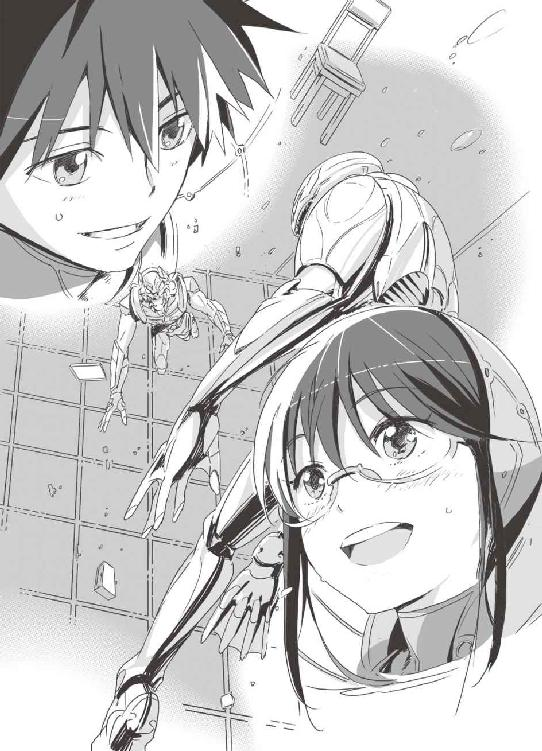
『二人とも無事のようですね......』と、二人の無線からアイナの声が流れる。『......セルジュと彩離も無事回収、今は医務室にいます。亜佑美さんをはじめとするメイドたちや、あの豪華客船に乗りこんでいた非戦闘員は、海上自衛隊が保護または逮捕しました......』
「事件はあらかた解決した？」と七湖。
謙吾はかぶりを振り、
「まだだ。エレナ・ヴェガに逃げられた。ようやくサーベルタイガー型ＧＥＮＥＺは取り戻したが、まだ終わりじゃない」
『エレナ・ヴェガへの追撃は必要です』
「もちろんです。強襲揚陸艦に爆弾を仕掛け、盗品のオークションを行い、彩離をひどい目にあわせやがった」
謙吾の目に強い殺気が宿る。非道な敵に対して、怒りを燃やしている。
「しかもさらに、バビロン・メディスンや大牙厳一と取り引きをして、もっと重大な何かを企んでいる──。無線ＬＡＮアダプタをつけるついでに、アスハブという敵幹部が持っていた携帯ゲーム機にＧＰＳ対応の追跡装置を仕掛けておきました」
『......戦場に携帯ゲーム機なんて......まるで謙吾みたいな敵がいるんですね......』
アイナが少し呆れたように言った。
「放っておいてくださいよ」
『......まあ、それなら話は早い。生徒会憲兵隊の突入小隊と、選抜部隊を用意します』
「選抜の人選は？」
『あなたたちと相性がいい、林、張鐘、梓馬、ルーシーといったところでしょうか』
「頼りになる先輩ばかりです。ぜひお願いします」
３
──レバノンという国がある。
その首都ベイルートは、かつて「中東のパリ」と呼ばれた美しい街だった。しかしそれは、内戦が始まるまでの話だ。レバノン国内は、パレスチナ解放機構の流入、シリアやイスラエル、ヒズボラの軍事行動によって荒廃した。
そもそもレバノンは歴史のある土地で、古代フェニキア人の故郷であり、ローマ字もこの地で誕生した。
そしてレバノンの南西部、イスラエルとの国境近くに、エレナ・ヴェガたちが降り立った。
豪華客船ラ・パッショナリアには、第二層の後部に小型艦を収容するためのドックがあった。ドックの小型艦──特殊作戦支援用のステルス船「スティレット」だ。船体が低く平べったい、騒音も少ないこの船は、時速一〇〇キロ近くで航行し、エレナたちは、グリークスや海上自衛隊の警戒網をすり抜けて安全圏まで脱出した。オマーン沖の小島に待機させていた双発の輸送機に乗り替えて、エレナ、エスメラルダ、アスハブの三人はレバノン入りしたのだ。
三人が向かったのは、レバノン南西部のティール遺跡だ。
一九八四年に世界遺産登録されたティール遺跡は、紀元前一一世紀に最も栄えた港湾都市だった。ティール市内には戦車競技場や凱旋門、ローマ時代の列柱遺跡などが存在する。
現在ティール市に残る遺跡は、ほとんどがローマ時代のものだ。
ローマ時代以前の遺跡は戦火や海没によって失われてしまった──というのが定説だが、本当はその地下に広大な「真のティール遺跡」が眠っている。この地下遺跡こそが、エレナの目的地だった。真のティール遺跡には、オベリスク状の石柱が立ち並ぶ大神殿がある。エレナはそこで「儀式」を果たすつもりだった──。
「おとなしい娘だな」
と、エレナは言った。正確には三人ではなく、四人だった。ただしもう一人の少女──ナイチンゲールのアンナトゥリーはほとんど荷物扱いだ。
「少なくとも......ナイチンゲールなので命の心配はしないですみますから......」
そう答えたアンナトゥリーは四つん這いで、首輪に鎖をつながれてエスメラルダに引っ張られていた。両手首、両足首をそれぞれプラスチックの拘束具で結ばれているので立ち上がることはできない。少女を犬のように引きまわすのはエレナの趣味だ。
「ナイチンゲールを殺すことはできない......しかし『吸収する』方法があるとすれば？」
そう言ったエレナの憐れむような表情に、アンナトゥリーは「......え？」と眉間に深い縦皺を刻んだ。嫌な予感を呼び起こす表情だった。
「私は、ＳＩＡが生えている場所を見つけた」
「ＳＩＡ......それはなんですか？」
「ギルガメシュ叙事詩に登場する『不老不死の薬草』のことだ。それは古代アッカドの言葉でシーブ・イッサヒル・アメルという。その頭文字をとってＳＩＡと呼んでいる」
エレナたちは歩きだす。エスメラルダに強く引っ張られて、拘束されているアンナトゥリーはのそのそと這うようについていくしかない。エレナは続ける。
「仕事柄、私は歴史的な貴重品を扱うこともある......盗品としてね。紀元前の美術品や古文書に値段をつけるため、自分自身で鑑定しているうちに、私はナイチンゲールのことを知った。──ナイチンゲールが生まれたのは、紀元前三五〇〇年頃。古代メソポタミア文明のころ。最初は『女神イシュタルの娘たち』と呼ばれていた。やがて時代が進むたびにその呼び名は変わっていき、百年ちょっと前にナイチンゲールとされた」
「............」
イシュタルの娘たち──アンナトゥリーも初めて聞く言葉だった。
「鑑定の途中に知ったのはそれだけじゃない。地下に広がる『真のティール遺跡』を見つけることもできた。そこには、ナイチンゲールを『加工』する方法があったんだ」
アンナトゥリーは「はっ」と息をのんだ。
「加工に必要なものは三つ。マンドラゴラ、ナイチンゲール、そしてＳＩＡだ。面倒なことにＳＩＡは、地面から抜いたらほんの数分で枯れてしまう。使うには、現地に足を運ぶしかない。──その、現地ってのがここだ」
エレナたちはティールの郊外、数千年も隠されていた地下への入り口にたどり着いた。
「まず、マンドラゴラを私がこの鉢から抜く。私は遺伝子的には人間よりも植物に近い生き物だ。だから、マンドラゴラの毒も呪いの声もきかない」
地下への入り口は、小高い丘の中腹にあった。そこをふさいでいた大岩を、爆弾か何かで吹き飛ばした痕がある。間違いなくエレナの仕業だろう。
「次にマンドラゴラと抜きたてのＳＩＡを混ぜ合わせて、水を足す。これで万能水の一種ができあがる。そして仕上げに──地下遺跡に用意しておいた石臼で、ナイチンゲールを引き潰す」
「！」
「粉々になったナイチンゲールにエリクサーをくわえて、私が飲み干すんだ。──安心しろ。アンナトゥリーとやら。お前は私の中で生きる。お前の力で、私は完全な不老不死となる」
ナイチンゲールを加工する方法の説明をするエレナは、まるで三分間クッキングを紹介する料理講師のような口調だった。残酷なことをするとは、ほんのかけらも思っていない。アンナトゥリーは、エレナに何を言っても無駄だと悟った。エスメラルダはエレナが何を言ってもうっとりしているし、アスハブはつとめて何も考えないようにしているようだ。
「私は、兵器として産み落とされた。命ではなく商品として扱われた」エレナの目が鋭く輝いて、うっすらと狂気が宿る。「そんな私が完全な生命になる。この世で最も崇高な生き物になるんだ。面白いと思わないか？」
入り口のある小高い丘を中心に、崩壊した石造りの建物群が広がっていた。かつてはこのあたりにも都市があったのだ。エレナは敵の追撃を警戒し、あらかじめ周囲一帯に部下や傭兵を配置していた。装甲車や軽戦車まで用意している念の入れようだ。
４
奇妙な力──植物の鎧をまとったエレナ・ヴェガに敗北し、エンキドゥは船内プールの底に沈んでぴくりとも動かなくなった。やがて爆発が発生し船そのものが沈む中、爪兵は一人見捨てられたような形だった。あまりの間抜けさに死にたい気分だった。
爪兵を救ったのは、セルジオたちが乗り込んだ原子力潜水艦ではなく、バビロン・メディスンの増援だった。仕方なくエンキドゥを捨てた爪兵は、輸送ヘリが垂らしたロープにしがみつき、九死に一生を得たのだ。船が沈んだのがアラビア海だったので、本社「バベルの塔」があるドバイまで一時帰還するのにそれほど時間はかからなかった。
マルチピード・アーマーを着用する為の薄い近未来的なスーツ姿のまま、ニムロッド待機室で応急処置もせずに女工作員マルゴにどなり散らしていた。彼女はニムロッド・ユニット１の世話係で、過剰な色気が特徴的な何を考えているのかわからない女だ。
「だからアンナトゥリーを取り戻すっつってるだろ！ 作戦計画を頼む！」
「できないんですよ、それは」
「......ハァ？」爪兵はマルゴの服の襟をつかんで睨みつける。「おいふざけんなよ、ぶっ殺すぞ。ナイチンゲールが奪われたんだぜ？」
「............」
マルゴは何も言わずに、携帯電話を爪兵に向かって差し出した。怪訝な顔つきになったあと、しぶしぶマルゴから手を離し、携帯電話を受け取る。「......なんだ、これ？」
『私だ』電話の相手は、バビロン・メディスン社長セルジオ・ガルヴァーニだった。
「社長！ どうして......」
『アンナトゥリーを取り戻すために、エレナ・ヴェガを追いかけたいんだな』
「はい、その通りです......！」
『命令だ。エレナ・ヴェガへの追撃は許可できない』
その一言で、怒りのあまり爪兵の頭の血管が切れそうになった。
「そんな......！ 理由は!?」
『お前に説明することじゃない。おとなしくしていろ』
氷水をぶっかけるようなセルジオの無機質な声に、爪兵は相手が社長だということも忘れて電話口で思い切り「......くそっ！」と声を荒らげた。それきり、セルジオが電話に出ることはなかった。納得できるわけがない。
爪兵は、携帯をマルゴに投げつけた。マルゴは眉一つ動かさず、それを見事にキャッチする。
「......わかってくれましたか？」
「ああ！ 社長命令に従っていい子にしてるよ！」
──もちろん、マルゴに言ったのは噓だった。
爪兵は開発実験部の格納庫に向かう。
「困ります、許可もなく兵器を持ちだすなんて......」
開発実験部の技術者である初老の男性が、しがみつくようにして爪兵を止めていた。
「例の実験機を使う」
「ダメですよ！ それに、あれはまだ、ユニット１がトライアル中で......」
「構わん！ アンナトゥリーがさらわれてんだぞ！」
爪兵はその技術者の腹を殴り、後頭部に手刀を叩き込んで気絶させた。彼の生体反応や電子キーを使って、体育館のような格納庫の巨大な扉を開けて中に入る。
そこに、高性能強化外骨格プロトタイプ──「エレシュキガル」があった。メンテナンス用の台に、色とりどりのコードで接続されている。
エレシュキガルは黒一色。
バビロン・メディスンはグリークスに対抗するために、ＧＥＮＥＺのコンセプトを模倣したプロトタイプをいくつも作製した。エレシュキガルもその一つだ。マルチピード・アーマーと違って、コンパクトで多脚デザインでもない。ＧＥＮＥＺの高性能遺伝子コンピュータは真似できなかったので、今は崩壊したウィルトゥスから少し前に購入したニューロン・コンピュータを使っている。
新開発の強力な原子力電池を搭載している。
人工衛星に使われている原子力電池よりもはるかに強力なもので、そのかわり事故による放射能漏れの可能性も増大している。
「......一人でどうするつもりなんですか」
エレシュキガルを着用していく爪兵の前に、マルゴがやってきた。
「なんとかする」
「敵がどこにいるのかは？」
「アンナトゥリーの首輪がある。まだ外されていないようだ。内蔵の発信機で追跡できる」
それを聞いたマルゴは肩をすくめて、憂鬱そうにため息をつき、
「仕方ありませんね......私がヘリを出します」
意外な申し出に、爪兵は目を丸くした。
「どういう風の吹きまわしだ。お前が命令違反なんて？」
「あなたがそこまでするとは思っていませんでしたからね......どうせいくら止めても、実験機でいってしまうんでしょう。それなら、少しでも生還率が上がるように協力するのがベストの判断です。それに......」
「それに？」
「気づいてないと思いますけど......私、あなたのことが結構気に入ってるから」
いつもは何を考えているのかわからない、事務的な表情と言動が多いマルゴだが、今の言葉には生きた人間の好意がこもっていた。しかし爪兵はこういうときほど心を許さない。しかし善意はいくらでも演技できる。
「へえ......適当なこと言ってんじゃねえ、俺はお前が嫌いだ」
「......とにかく、エレシュキガルの欠点はその動力です。背部に埋め込まれている電池パックだけはやられないように気をつけてくださいよ」
「やられなきゃいいんだろ。やられなきゃよ」
５
謙吾たちは、エレナに追撃をかける。
ただ、イスラエル国境付近という位置が微妙だった。昔ほど危険なわけではないが、まるで火薬庫のような場所だ。エレナは以前から時間をかけてレバノン政府高官を懐柔し、各地に私兵を待機させていた。グリークスとレバノン政府の関係は良くも悪くもなく、短時間の政治工作では、国内での戦闘行為を見逃してもらう、という約束を取り付けるのが精一杯だった。場所が場所だけにグリークスの機甲部隊を上陸させるわけにはいかず、作戦は輸送ヘリを使った歩兵による空挺強襲というものに決まった。彩離とセルジュは治療中で作戦に参加できない。
──そうは言っても、ヘリで輸送される真っ最中の謙吾に不安はなかった。隣にはユキナが、そして新たな力を手に入れた七湖がいる。さらに同じヘリには、林力也、張鐘、梓馬亜佑美といった特進クラスの名だたる精鋭の姿もある。
特進クラス選抜と生徒会憲兵隊の突入小隊が、ＣＨ－53Ｅスーパースタリオン大型輸送ヘリ四機に分乗して、追跡装置が示した敵の目的地──ティール遺跡に急行している。
「いいなあ、ＧＥＮＥＺ......」
と、ユキナが七湖を見ながら子供のように指をくわえて言った。謙吾は戦闘前だというのに、微笑をこぼしそうになった。ちょっと可愛かった。
ユキナは、体形にフィットする薄い灰色のアサルトスーツにタクティカルベスト。ＨＫ４１７アサルトライフルのグレネードランチャーつきで武装している。
「へへー、いいでしょ！」と七湖は胸をはった。重装甲のスクアロドン型ＧＥＮＥＺを身につけて、ヘルメットだけ外した状態だった。「でも、私だってユキナさんのナイチンゲールの力がうらやましいんだから、おあいこ」
「そんなのんきなこと言ってる場合じゃないぞ」
謙吾は、釘をさしておくことにした。
「七湖は、特進に入って以降最低限の訓練を積んでいるとはいえ、ＧＥＮＥＺの戦闘に関しちゃ初心者もいいところだ」
「う、うん」
「その新型ＧＥＮＥＺには色々な新機能がついてるらしいけど、あまりそういうのをいきなり使おうとはするな。戦闘が始まったら、防御を優先すること。いいな？」
「はーい」
（大丈夫かな......？）
そしてグリークスの輸送ヘリはティール遺跡に到着。ヘリが着陸し、部隊を展開する。
エレナ・ヴェガは当然のように防備を固めていた。
朽ちた都市や大岩を遮蔽物にとって、数百人という傭兵の大部隊と、センタウロ歩兵戦闘車や六輪タイプのピューマ装甲車が周囲を警戒している。
先陣を切ったのは、特進クラスの成績優秀生徒だけで編制された特殊部隊が生徒会憲兵隊だった。その隊員たちは、強力な軍用ライフルであるＭ14ＥＢＲを構え、フルフェイスのヘルメットにボディアーマーというフル装備だ。兵士をおろして身軽になったヘリの上空からの援護を受けつつ、立ちふさがる敵を撃ち倒していく。
銃弾が飛び交う中、謙吾、ユキナ、七湖はエレナを追って地下への入り口へと急ぐ。
そんな三人の前に、一二・七ミリ重機関銃を搭載したピューマ装甲車が飛び出してきた。
装甲車程度ＧＥＮＥＺの敵ではないが、あまり時間をかけたくない。謙吾がどう片付けようか考えている間に、ピューマの装甲に次々と大きな弾痕が生じた。後方に陣取った張鐘からの狙撃だった。張鐘が今回の戦闘のために持ってきたのはダネルＮＴＷアンチマテリアル・ライフル。口径二〇ミリだ。
『でかい標的は当てやすくて困る』と、無線で彼の声がした。
「さすがは張鐘さん」
『行けよ、作戦のかなめはＧＥＮＥＺだ』
激しい戦闘が続く。林力也が、センタウロ歩兵戦闘車をジャベリン対戦車ミサイルで吹き飛ばしていた。梓馬亜佑美は珍しくメイド服ではなく、海神学園の制服にタクティカルベストという格好で、左右の手に一丁ずつ構えたシュタイヤーＡＵＧ・Ａ３アサルトライフルを「あははは！」と楽しそうに撃ちまくっている。彼女はやっぱりちょっとおかしい。
「俺たちは、ＧＥＮＥＺとギルガメシュの仕事を果たそう」
謙吾と七湖は、ほぼ同時にＧＥＮＥＺヘルメットを被る。
さらに謙吾は「奥の手」が入った武器ケースを背負っている。
６
仲間たちのおかげで、謙吾たち三人は地下遺跡への突入に成功した。
「これは......」
とつぶやき、謙吾はそれ以降の言葉を失ってしまう。その光景に圧倒されたのは、ユキナや七湖も同じだった。地下世界とでも言うべき広大な空間があり、滅びた街の不穏な形相がエレナ・ヴェガが持ち込んだ照明器具で照らし出されている。
地下の遺跡は、神殿を中心に放射状に広がっていた。神殿前の庭園は荒れ果てて、墓地にそっくりだ。青く苔むした神殿や崩れかけた周囲の大きな屋敷は、かつては金殿玉楼だったのかもしれない。
ところどころに小さな滝があり、地下水脈が蜘蛛の巣のように走っている。盛り上がるようにうねる急流もあれば、ゆるゆると流れる温和な細流もある。
そして──地下に入ってすぐの場所で、アスハブとエスメラルダが待ち構えていた。
門番のように。
「そのヘルメットの中身は......謙吾なんだろう？」
アスハブが口を開いた。
「ああ。もうバレてたか」
「間抜けな話さ。この遺跡に入ってから、ようやく追跡装置に気づいた。──よくも裏切ってくれたな」
アスハブは怒っているというより──泣くのを我慢する子供のような顔だ。それが、謙吾の胸の奥で罪の意識を膨らませた。エレナの犯罪を止めるためでも、彼を騙したことに変わりはない。
アスハブは、今までの人生を大人に奪われていて、それを取り戻すことに夢中だ。だから彼の部屋は、子供のころ遊べなかった玩具で溢れていた。強力な特殊傭兵として暴力を振るうようになっても、傷ついた子供は子供のままなのだ。
「悪いと思ってる」
「短い友情の終わりだな、謙吾」
「そろそろ、私もくわわってよろしいでしょうか」
エスメラルダが横から口を挟んだ。
「エレメンタル・アーツの使い手二人と戦って、勝てるとでも？」
「お前らが門番だな。そこを通せ」
「エレナ様の邪魔はさせません。私たちの命にかえても」
謙吾が、ヘルメットの無線を使って、七湖に「スクアロドン型の一番強い武器を選択して先制攻撃」と小声の早口で指示を出した。しかし七湖は緊張していたために「えっ!?」と謙吾の言葉を聞き逃してしまう。その隙に、アスハブは火薬ではなく水が詰まった例の手榴弾を投じる。爆発し、周囲にすさまじい勢いで水滴が飛び散る。
アスハブの「水のエレメンタル・アーツ」によって、飛び散った水滴が濃霧のようになった。謙吾たちの視界が遮られる。
「！」
まるで水中だ。謙吾のＧＥＮＥＺのセンサー類、赤外線も役に立たない。
スクアロドン型ＧＥＮＥＺの小型魚雷ポッドは取り外され、今は両肩に「メタルストーム」という、Ｂ級アクション映画か米軍の作戦名のような名前の兵器が装着されていた。細いバレルが何百本も束になっていて、中には重金属弾がたっぷり装塡済み。重金属弾を一斉に散弾銃のように撃ちだし、広範囲にダメージを与える、いわゆる地域制圧兵器である。
七湖はメタルストームを選択し、発射した。しかし、好機は完全に逸していた。アスハブとエスメラルダは、危機を察して一気に間合いを詰めていたのだ。数千発の重金属弾は敵の真上を通過して、遺跡の建物に降り注ぎ、ボコボコと不気味な音を立てる。
「鞭！」
アスハブは、水の手榴弾だけでなく、大量の水筒もぶらさげていた。そのうちの一本を取り出し、蓋を開ける。水をばらまくと、そのまま鞭のようにしなる。
これも、エレメンタルアーツの能力だ。
その鞭が、謙吾を強かに打つ。
「ぐッ！」
謙吾のＧＥＮＥＺが背負っていた武器ケースが下に落ちた。とりにいこうとするが、視界が悪い上に、アスハブの鞭がそうさせてはくれない。
「俺を騙した報いを受けろ！」
視界を悪くしている霧が、アスハブが攻撃するときだけ薄くなった。鞭が謙吾にヒットするとアスハブは素早く離れて、再び力を使って霧を濃くする。
精霊の力を最大限に利用したヒット＆アウェイ戦法に、謙吾は戸惑う。
「謙吾！」
「そっちでどうにかならないか!?」
「やってみる！」
七湖のスクアロドン型ＧＥＮＥＺには「エコーロケーション」という索敵機能がついている。
イルカやある種のクジラは、超音波で獲物を探したり、会話を交わすことができるという。それがエコーロケーションだ。音波を反射させてそれを受け取り、周囲の状況を知るというシステムは、軍用艦や魚群探知機のアクティブ・ソナーと同じ原理だ。
アスハブが作りだした濃霧の中でも、七湖のエコーロケーションは完全に機能していた。音波はたとえ水中でも問題なく伝達する。
「謙吾......二時の方向に四メートル！」
「了解！」
七湖の指示に従って動いて、謙吾はアスハブを蹴りつけた。
「なッ！」
異常な濃霧のせいで見えない敵に対して放った右のハイキックが、アスハブの側頭部を見事にとらえた。アスハブの体は横ざまに吹き飛び、この衝撃で力が弱まって濃霧が維持できなくなる。視界がクリアになった。
「これがチームプレイだよ！」
と、七湖が威勢よく叫んだ。そこへ──。
「なるほど。勉強になります」
横から、エスメラルダが七湖に飛びかかった。
風使いエスメラルダのエレメンタル・アーツ。
彼女の手足には強烈な風が巻きついていて、それが打撃のインパクトの瞬間、さらに敵に追加のダメージを与える。
風をまとったエスメラルダの飛び蹴り。
本当の意味での「旋風脚」が七湖に炸裂。
七湖はきりもみをうって倒れる。
「！」
「まだまだです」
武術の心得がない七湖は、エスメラルダにいいように殴られ、蹴られた。
しょせんはＧＥＮＥＺ初心者だ。手も足も出ない。
いくらスクアロドン型が重装甲といっても、限度があった。内部で火花が散り、ＧＥＮＥＺの関節部分が千切れそうになる。
エスメラルダの連続蹴りで、七湖は岩壁に叩きつけられた。
「七湖！」
と、ユキナがエスメラルダにライフルを向けて発砲した。ユキナの射撃も、最近はかなりさまになっている。しかし狙いが正確でも、エレメンタル・アーツの「風の鎧」に弾丸は通じない。
エスメラルダはカミソリよりも鋭いバックブロー。「かまいたち」に襲われたように、ユキナのアサルトスーツが切り刻まれた。
肉も抉られるが、ナイチンゲールなので生身の傷はすぐに回復する。
「くうッ！」
謙吾がエスメラルダを止めようとしても、背後には立ち上がったアスハブがいる。水の手榴弾のあとでなければ「濃霧」を作り出すことはできないようだが、水筒から伸びる鞭はまだまだ健在だ。
（このレベルの敵と二対一とは──）
アスハブとエスメラルダは、タイミングを合わせて同時に謙吾に襲いかかった。
（さすがに無理があるか──！）
アスハブの鞭。それをかわしたら、間を置かず風で強化されたエスメラルダの蹴りがくる。防ぎきれない。
アスハブの鞭が腕に絡みついてバランスが崩される。
エスメラルダのローキックが太腿の内側に突き刺さる。
ヘルメットを脱いでユキナに接触し、ギルガメシュ化したいところだが──。敵は簡単にそうさせてくれないだろうし、かんじんのユキナが苦しげにうずくまっている。エスメラルダに切り刻まれた腱の再生に時間がかかっているのだ。エレナとの戦いに「不死」をとっておきたい、というのもある。
謙吾がユキナに視線をやった刹那、隙が生じた。
エスメラルダの後ろ蹴りが、貫通する勢いで謙吾の腹部に命中した。装甲にひびが入って、内臓がかき回されるような激痛。動きが鈍ったところに、さらにエスメラルダの足払いで謙吾は引っくり返される。
（──しまった！）
謙吾は後ろ蹴りのダメージですぐに立ち上がることができない。
「とどめだッ！」
アスハブが、倒れた謙吾の頭部を狙って鞭を振りかぶり──。
ズドンッ！ と大きな打撃音が響いた。
しかしそれは、謙吾がとどめをさされた音ではなかった。
「......エスメラルダ？」
不意に現れた黒い影が、エスメラルダの背中に鋼鉄の拳を打ち込んでいた。そこは、風の鎧が覆っていない場所だったのだ。その黒い影は──美しいが刺々しいデザインの甲冑をまとった騎士のようだった。馬上槍に似た長い武器を背負っている。黒騎士はそのままエスメラルダに拳を押しつけて、電撃を放った。スタン・ガントレットだ。
「！」
エスメラルダはどう、と意識を失って倒れる。彼女には精霊の生命力が宿っているので、死にはしない。ただ、しばらく起きあがることはないだろう。
「なんだ......お前？」
謙吾は思わず黒騎士に訊ねた。
「鎧が変わると、わかんねぇか」
マイク越しの声が響いた。「......！」謙吾にも聞き覚えのある声だ。
「そうだ。武田爪兵だ。この強化外骨格は、エレシュキガル」
第八章 世界に復讐するとして
１
謙吾は、アスハブが驚いているうちに横に転がった。それから立ち上がり、呼吸を整えながら左右の牙を前に構える。
「一人増えても、状況は変わらないぞ」とアスハブ。
「どういう状況なのか、俺にもよくわかんないんだけどな......」謙吾の本音だった。爪兵が味方になったとは考えにくい。
「アンナトゥリー......俺のナイチンゲールがさらわれてる。取り戻したい」
「お前のナイチンゲール......？」
「いいかＧＥＮＥＺ。一時休戦とは言わん。協力しようとも言わん。ただ、俺はこれからエレナ・ヴェガと戦う。それを邪魔だけはするな」
言い捨てて、爪兵は先を急ぐ。エレナ・ヴェガのもとへ。
「待てッ！ きさま──」
アスハブは爪兵を止めようとするが──。
「お前の相手は俺だろ、アスハブ」
謙吾が割って入った。
アスハブは首を軽くストレッチのように回しながら言う。
「やるしかないな」
「ああ」謙吾はうなずき、「それにしても......お前とは戦いたくないもんだ」
「本音を言えば、俺もそうだよ」アスハブもうなずく。「俺とお前は似てる。そして、エレナ様は俺に似てる。俺たち三人は似ている」謙吾を心配する口調だった。「今からでも遅くない。民間軍事会社の手先なんかやめろ」
「同じことを俺が言いたい。今すぐ犯罪から手を引け」
何を言われても謙吾はぶれない。
「こういうのを──」アスハブは微笑した。
「ああ。平行線っていう」謙吾も笑って、ＧＥＮＥＺの装甲に内蔵されているＦＮ５・７拳銃を抜いた。すかさず速射する。
弾丸はアスハブの水の盾に防がれた。
ヒュンヒュンヒュン！ と左右に構えた水の鞭を高速で回転させるアスハブ。周囲の石材や植物が巻き込まれて、次々と砕け散っていく。
精霊力が付加された水の鞭は確かに恐るべき武器だ。
謙吾も、ＧＥＮＥＺの左右前腕に装備された超硬合金の「牙」で対抗する。
水の鞭と牙がぶつかりあうと、恐ろしく硬いゴムを叩いたような独特の感触だった。
アスハブが鞭を振るう。容赦のない連続攻撃。二本の鞭がしなり、時折、その動きは生き物のように変化する。謙吾は牙で打ち返すのがやっとだ。
「謙吾！」
ダメージが回復したユキナが駆けつけてきた。
「ギルガメシュに！」
「まだ早い！」
ここでギルガメシュになれば、最後の強敵エレナ・ヴェガ相手には不死身が使えなくなる。ギリギリまでとっておきたい。
「ゲームだと、お前の方がちょっと強かったよな」とアスハブ。
「現実でもそうだ」謙吾は強気に返す。
「悪いが、それはない！」
水の鞭が謙吾の胴体に炸裂。
吹き飛んで、床を転がっていく。
「そんなものか」
「言っておくが......今、食らったのはわざとだ」
謙吾は言った。強がりではなかった。
床を転がって、最初に落とした武器ケースの近くにまで移動していたのだ。
謙吾は、ＧＥＮＥＺ用の重火器を武器ケースから取り出した。
ＳＯＰＭＯＤ－ラハティ対戦車ライフル。使用する弾丸は、特製の二〇ミリ×一三八高速徹甲弾。弱点を狙えば、各国主力戦車を距離一〇〇メートル離れていても撃破できる。
しかも今回のラハティには、折り畳み式の巨大な銃剣がとりつけられている。ＧＥＮＥＺの牙と同じ、複雑な構造の超硬合金製だ。ただでさえ巨大な銃に、大剣のようなバヨネットが組み合わさって、ほとんど巨人が使う槍といってよかった。それを謙吾が、ＧＥＮＥＺの怪力に任せて振り回す。
謙吾は、ラハティを肩づけに構えて引き金を絞った。
砲声が轟き、空気が震える。
ラハティのボックスマガジンには一〇発が装弾されていて、半自動射撃が可能だ。
「っと──！」
アスハブは左の鞭を、水の盾に変えて身を守った。恐ろしく硬い氷のようになった盾が、装甲車も一撃で破壊する二〇ミリ口径の弾丸を止める。
しかし、完全に防ぐことはできず、アスハブは着弾の衝撃で一歩後方によろめいた。砕けた弾丸の破片が、アスハブの体のあちこちに突き刺さる。
謙吾はさらに発砲。水の盾で必死に防ぐアスハブ。
合わせて四発撃ったあと、謙吾はラハティ対戦車ライフルを長刀のように構え直し、巨大な刃をアスハブに向かって叩きつけた。
まだ右手に残っている水の鞭で打ち返す。
激突し──あまりの質量と速度に耐えられず、アスハブの水の鞭は飛び散った。
「なあッ──!?」
謙吾はもう一撃。バヨネットでアスハブの水の盾も打つ。
バヨネットの先端を、喉に突きつける。
「くっ......！」
「俺の勝ちだな」
そのまま突き刺せばアスハブは最後だが──。
「............」
謙吾は、ひょいとラハティ対戦車ライフルを肩に担ぎ直した。
「俺を逃がすつもりか。どういうつもりだ」
アスハブの目に、屈辱の暗い炎が燃える。
謙吾は決して彼を見下すわけではなく、むしろ敬意をこめてこう笑えた。
「俺は、チェチェン人は殺さない。昔、ずいぶん世話になったからな」
「......え？」
ここで、アスハブはようやく気づいた。
『日本人にだって凄い奴はいる。今から三年くらい前だ』
『どこかの民間軍事会社から、チェチェンに軍事顧問が派遣された。それが、見た目は子供みたいな日本人の少年だったらしい』
『最初はチェチェンの軍人たちは冗談かと思った。だが、その少年兵はスフミ、コドリ渓谷、イングーシ国境付近を転戦。ロシア軍を苦しめて実力を認めさせた。ロシア軍はその日本人少年兵を『ハリネズミ』と呼んで恐れた。その少年がいつも、大量のＲＰＧや何丁ものライフルを抱えて移動していたから、そのあだ名がついたらしい』
「謙吾、お前が『ヨーシュ』だったんだな......」
そうつぶやき、アスハブは天を仰いで笑った。
「ああ。チェチェンで戦ってた時期がある」
「なんてこった......すごいヤツと戦ってたんだな......俺は」
「それに、お前が言う通り俺たちは似てる。殺さないよ」
「エレナ様も、殺すな」
アスハブは思いつめた顔で言った。
謙吾はかぶりを振って、
「それは......やってみないと、わからん。こっちが殺されるかもしれんしな」
２
エレシュキガルの爪兵は、エレナを見つけた。
地下遺跡の中心に存在する巨大な神殿の奥だ。
朽ちた神殿の内部は、まるで森林のように植物で満ちていた。柱には丈夫そうなつる草が巻きつき、壁沿いにたくましい雑草が生い茂っている。床を打ち抜くように大木が根をはり、幹が壁を貫いている箇所もあった。
神殿の中に地下水脈を利用して作られた人工の池があり、エレナはそこにいた。池の周辺には、背の高い、美しい草花が咲き乱れている。──ここが地下とは思えないほど神秘的で生命力に溢れた光景だ。
そしてエレナは、当然アンナトゥリーと一緒だった。アンナトゥリーは巨大な石臼の上に転がされている。エレナが石臼をどう使うのかはわからないが、一つだけはっきり言えるのは、ろくなことじゃないということだ。
エレナを見つけたが、向こうはまだ爪兵に気づいていない。それもそのはず、まだ五〇メートル近く離れている。エレシュキガルの隠密性は高く、気をつければ足音も素足で歩く程度にまでおさえられる。
柱で身を隠しつつ、爪兵は背中の武器を両手で構え、先端をエレナに向けた。
ここまで背負ってきた馬上槍のような武器は、レーザー・ライフルだった。
二酸化炭素、窒素、ヘリウムの混合ガスを使い、ポロニウム２１０という熱源物質から発せられるレーザーを増幅して敵に撃ち込む。ＳＦ映画じみた兵器だが、最先端軍需産業の世界ではすでに実用段階に入っている。
（いただきだ──）
安全装置を解除し、チャージ終了後、爪兵は引き金を絞った。モーターの駆動音のような奇妙な銃声。二枚のミラーを通過し、増幅された強力なレーザーがレンズから発射される。
光の剣のようなレーザーが、エレナの右肩口に命中した。
「！」
レーザーはエレナの植物装甲と肉を焼き、一瞬で右腕を切断した。
よし、と爪兵は結果に満足して、レーザー・ライフルを捨てた。この武器は強力だが、二発目を撃つのにチャージと冷却のため三分近い時間がかかる。エレナは、そんなに長く待ってくれるほどのんきな敵ではないだろう。
腕は切れて落ちたが、切断面から出血はなかった。これはエレナが特殊だからではなく、レーザーによってできた傷とはそういうものだからだ。あまりにも高温なため、一瞬で切断面が炭化してしまうのである。
柱の陰から出て、爪兵はエレナに歩み寄っていく。
「爪兵さん！」
石臼の上でアンナトゥリーが目を輝かせた。
「なれなれしく下の名前で呼ぶんじゃねーよ」
「貴様は......鎧は違うが、バビロン・メディスンの少年傭兵か」
「その通り。奪われたものは取り返さないとな」
「お前は......この娘を愛しているのか？」
「俺は愛は知らん。知りたくもないね。ただ単に、アンナトゥリーは俺の所有物だ」
爪兵とエレナが接近。
こちらは新型で、しかも敵はすでに右腕がない。いくらなんでも負ける気がしない。
爪兵はエレナの脇腹に、打ち上げるように拳をねじこんだ。
エレナの体が宙に浮き、壁際まで吹き飛ぶ。かなりの手ごたえだ。
「そんな状態で俺に勝てると思ってるのか？」
「......こんな状態、すぐにどうにかできる」
エレナは、左手で手近な草花をつかみとり、それを右腕の切断面に押しつけた。
すると──エレナの体と植物の融合が始まった。草花が、失った肉体を再生したのだ。
驚いた爪兵に、エレナは再生したばかりの右手でパンチを打った。エレシュキガルの胸部中心に炸裂する。相変わらずの見た目からは想像もつかないとてつもない破壊力の打撃に、今度は爪兵が吹き飛んだ。転倒し、慌てて受け身をとって立ち上がる。
「まだまだッ！」
爪兵自身にダメージはなく、まだやる気十分だったが──。
『強い衝撃を確認』
エレシュキガルのヘッドアップディスプレイに、不穏な文字が浮かんだ。
『安全装置始動。原子力電池を排出します』
「おい、バカなマネはよせ！」
思わず、爪兵はエレシュキガルのＡＩに向かって怒鳴っていた。「......？」エレナには、爪兵が錯乱したようにしか見えない。
エレシュキガルの欠点は、やや不安定な動力源──新開発の強力な原子力電池だ。歩兵用に使うにはあまりにリスキーなエネルギーであり、放射能漏れを防ぐために、エレシュキガルには何重もの安全装置が設定されていた。
強い衝撃を受けると、原子力電池は機能を停止し、スーツから分離されるのだ。エレシュキガルの背中から、酸素ボンベのような電池パックが滑り落ちて、強化外骨格の動きが目に見えて悪くなる。補助動力だけでは、爪兵の操縦に対応できない。
安全装置のことを知っていれば、オフにしておいたのに──。爪兵は自分の迂闊さを呪ったが、もう遅かった。──いくらなんでもこんなマヌケな負け方があるか!?
「命拾いしたな、てめえ」
「自殺しに来たのか、お前は？」
エレナは、無防備になったエレシュキガルの頭部に思い切り肘打ちを入れた。
３
謙吾に敗北したアスハブは、気を失ったままのエスメラルダを担いで立ち去った。謙吾に追うつもりはなかったし、彼の逃亡をこども学長アイナや大迫に連絡する気にもなれなかった。
問題は七湖だ。スクアロドン型ＧＥＮＥＺはまだ動くものの損傷がひどく、操縦しているのは初心者の七湖であり、戦闘に連れていっても足手まといになるだけなのは明らかだった。
「七湖はここまでだな」と謙吾。
「いや、いけるよ。大丈夫......」
「無理はするな。せっかくの新型がもうボロボロだぞ」
「うう......」
「待ってろ。すぐに戻ってくる」
七湖は渋々首を縦に振った。「うん......」
「いこう、ユキナ」
「ああ」
謙吾とユキナ。ギルガメシュとナイチンゲールが歩いていき、その背中を見送って七湖はＧＥＮＥＺのヘルメットを脱いだ。すでに涙目だ。
「せっかくＧＥＮＥＺを操縦できたのに......ここで脱落じゃだめじゃん！」
二人で地下遺跡の最奥部へ。神殿の中へ。
「また二人になったな」
謙吾は、なんということはなしに言った。
「いつもこんな感じだ。色々あるんだけど、結局二人で最後の敵に向かってる」
「こういう運命なんだな、きっと」
言ってから、ユキナは自分自身の言葉に頰を赤らめた。謙吾もつられる。
「運命とか......お、大げさなこと言うなよ」
「う、うん......そうだな。悪い、謙吾」
「それにしても......血で濡れた土地だな」
「......そうなのか？」
「この都が滅んだのは、紀元前四世紀。ちなみに、滅ぼしたのはあのアレクサンダー大王だ。七か月におよぶ攻囲戦だったそうだ」謙吾は続ける。得意分野の話だ。「......ここは、イスラエルとの国境も近い。戦場になることも多かった。二〇〇〇年以上前から、ずっと戦いが続いているようだよ」
「......戦争って、この世界からなくなったりしないのかな？」とユキナ。
「中学生みたいなこと言いだすんだな」謙吾は苦笑を漏らした。
ユキナはぷう、と頰を膨らませて、
「高校生が中学生みたいなこと言っちゃ悪いか」
「いいや、悪くない。ごめん」軽く頭を下げる謙吾。「......そうだよな。本当は、大人になってもいつまでも悩んで、疑問に思ってるべきなんだ。戦争とはなんなのか。平和とはなんなのか。そもそも人間とは──って話」
「............」
進んでいくと、ガッ、ガッ、という打撃音が聞こえてくる。
池のほとりで、武田爪兵が血まみれになっていた。拘束されて大きな石臼の上に転がされているアンナトゥリーが、泣きわめいて大声で叫んで爪兵を殺さないように哀願しているが、エレナは容赦なく彼に拳を打ちおろしていく。
「世界はまるでキラキラのデコレーションケーキ」
エレナはほんの少しだけ歌うような調子をこめて言った。
「問題は、スポンジの生地から腐ってることだ」
エレシュキガルは、その装甲の半分以上が剝がれ落ちていた。爪兵ほどの腕利きでもこうなってしまったのだ。謙吾は、七湖を連れてこなかったのは正解だと思った。
「エレナ・ヴェガ、抵抗せず投降しろ」
と、謙吾はラハティ対戦車ライフルでエレナを狙う。
「......ふん」
エレナは、玩具に飽きた子供のように意識混濁の爪兵を放り捨てた。
謙吾は、ラハティ対戦車ライフルの引き金を立て続けに絞った。
残弾すべてをエレナに叩きこむ。空気が震える。銃本体から排出されて床に落ちた大きな空薬莢が、ガランゴロンと金属音を立てる。
しかし、エレナの植物装甲には通じない。植物の繊維をナノ単位の世界で限界まで凝縮し、ダイアモンドやチタン合金を超える硬質化を実現したのだ。
「おおおッ！」
謙吾は、ラハティの巨大バヨネットで切りつけた。ゴウンッ、と刃が空気を切る音さえもが重い。ＧＥＮＥＺの怪力によって加速した超重量級の一撃を、エレナは後ろ回し蹴りで迎撃した。装甲に包まれたエレナのかかとが刃の方向をずらし、バヨネットは床に突き刺さる。
バヨネットつきラハティは重くて威力がある分、狙いを外すと構え直すのが大変だ。その隙に、エレナは謙吾に引っかけるような回し蹴りを鎖骨のあたりに叩きつけた。体が縦に潰れそうな衝撃のあと、ずざざざッ、と謙吾の体はそのまま後退する。
折れたか、骨が外れたか──。当たり方が悪かったので、右腕に力が入らなくなった。ＧＥＮＥＺの装甲越しなのに、信じられない蹴りの威力だ。
「ユキナ！」
謙吾は叫んだ。ギルガメシュ化の合図だ。不死身の体になれば、どんなケガをしても恐れることはない。思い切り、無謀な突撃が可能になる。
「わかってる！」と、ユキナが駆けだす。
「させるか！」
エレナが吠えると、遺跡の植物に変化が生じた。彼女の周囲に生えているつる草が、突如生き物のように動き出したのだ。つる草は他の草花を巻き込んで強度を増していき、エレナの意のままに操られる太い蛇のようになっていく。
「そんなこともできるのか......!?」
謙吾はうめくように言った。
「ああ、できる。私は植物の女王なんだよ。そういうふうに作られた......人間型の兵器だ」
大蛇と化したつる草が数十本もユキナに向かって伸びて、絡みついて拘束する。同じものが、謙吾にも向かってくる。
「ナイチンゲールがどんなものかは私も知っている」エレナは言う。「そう簡単に、ギルガメシュに不死になられてたまるか」
ユキナを拘束するつる草は、よく見ればいばらのように棘だらけだった。一本の棘がおよそ四、五センチ。鋭い棘が皮膚を貫き、肉に食い込み、血が噴き出す。
謙吾のラハティ対戦車ライフルも、つる草に巻きつけられて破壊されてしまった。
「や、め、ろ！」
謙吾は、まだ動く左腕の牙を振り上げて、エレナに飛びかかる。彼女の首を狙って突いた牙が、円を描くような腕の動きで弾かれた。エレナの前腕部の装甲は、全身で最も分厚い様子だ。さらに牙の連打を叩き込むも、ガチンと攻撃を弾かれているうちに、足元から触手のように数本のつる草が、迫ってくる。
「私も本気を出すとするか......」
エレナの腕を覆う硬質化した樹皮が変形していき、ドリルのような形状になった。
無造作に突きこまれたそのドリルが──謙吾の腹部を貫く。
「！ 謙吾!?」
「ぐ、はっ......！」
致命傷を食らって、うずくまる謙吾。装甲の中身が、血で溢れ返る。
「あああああッ！」
ユキナは、必死に謙吾に近づこうとする。
「いくらナイチンゲールでも、痛さで気絶するぞ」とエレナ。その言葉は正しく、つる草はますますひどくユキナの体に食い込んできた。
「くうううッ！ いッ！」
無理に進むと、棘に肉をもっていかれる。骨が露出しそうなほど深い傷になる。
それでも、ユキナは前に進むことを諦めない。獣じみた声をあげて、一歩ずつ、少しずつ植物を引き剝がしながら謙吾のもとへ。
ユキナの鬼気迫る迫力に、エレナは戸惑いの表情になった。
「なッ......!?」
「謙吾が死んだら、私も死ぬぞ！ たとえ不死身でも、なんとか死んでやるッ！」
「ユキナが死ぬなんて嫌だ！」
謙吾も、朦朧とする意識の中、最後の力を振り絞って立ち上がった。
「お前みたいなやつを......」
エレナは腕のドリルで謙吾の心臓を狙う。
「死に損ないという」
「させるかッ！」
ラハティ対戦車ライフルは破壊されていたが、ユキナがスリングでさげていたＨＫ４１７ライフルはそのままだった。ユキナはライフルを構えて、発砲。
運がいいのか、ユキナの射撃の腕が上達しているのか、ＨＫ４１７から放たれたライフル弾は、エレナの目の周囲に集まって着弾した。それでも皮膚が硬化しているエレナには致命傷にならないが、動きを止める効果はあった。
ようやく、ユキナが謙吾のもとにたどり着く。
「......謙吾ォ！」
「ユキナァアアア！」
謙吾はヘルメットを勢いよく脱ぎ捨てる。そして、自分のナイチンゲールを抱き寄せる。
互いの遺伝子を交換するように、キス。
「うおオオオッ！」
キスを終えた謙吾は野太い雄叫びをあげた。折れた右の鎖骨も貫かれた腹も、ユキナが分け与えてくれた不死身の力によって再生していく。
「それがどうした！」
エレナの植物のドリルと、謙吾の牙が交錯する。
その攻撃が謙吾の左腕を切断するが、ギルガメシュ化している謙吾は気にしない。
しかし、そこまでやって打ち込んだ渾身の牙の一撃も、エレナの装甲には通じなかった。
「だから無駄なんだよ！」
「無駄かどうかは、これでわかる......！」
とユキナは強気な口調で言い放った。彼女のＨＫ４１７には、グレネードランチャーがついていた。中に装塡されているのは、四〇ミリの対戦車榴弾だ。それを撃った。
「！」
エレナの体が爆発に包まれる。至近距離にいた謙吾も爆風や破片を浴びるが、それは覚悟の上だった。ギルガメシュ化しているときでなければ、こんな味方を巻き込むような手は使えなかった。
爆炎が晴れて──しかしエレナは平然と立っていた。
「悪いな......ほとんど無傷だ」
「ほとんど、だって......？」
謙吾はエレナを観察する。
「完全な無傷じゃないんなら......それで十分なんだよ、こっちには！」
ユキナの対戦車榴弾のおかげで、エレナの装甲に微かな傷がついていた。胸部、心臓の近くに、うっすらと細い裂け目が生じていたのだ。
謙吾は、そこを正確に狙って右の牙を突き刺した。
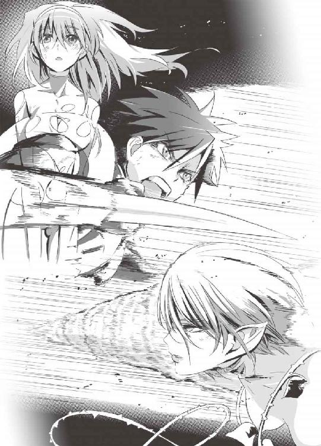
「──ッ!?」
牙は、裂け目からエレナの体内に侵入することに成功した。
彼女の体を貫通し、ＧＥＮＥＺの力があまりにも強かったので、牙は突き刺さったまま根元から折れる。
「......子供のころから、ずっと商品として、兵器として扱われてきた」
エレナは、酩酊したようによろめく。無機質な双眸から、涙がこぼれ落ちる。
「私が世界に復讐して、何が悪い......」
「気持ちはわかるよ」
謙吾は、エレナに同情と理解の視線を送った。
「あんたが何をしようが勝手だ。俺だって復讐したい相手はいる」
「............」
「でもな、誰を恨むにしても、何をするにしても......」
謙吾は、とどめの右ハイキックをエレナの頭部に。
「俺の仲間を巻き込むんじゃない......！」
当たった瞬間、火花が散りそうな気迫の一発。棒立ちのエレナを地下水脈の滝までかっ飛ばす。彼女の体は水に落ちて、古代から続く流れにゆっくりと沈んでいく──。
４
切断された左腕を拾って再びつなぎ合わせた謙吾は、拘束されたアンナトゥリーを解放した。
「ありがとうございます......」
自由になったアンナトゥリーは、マシントラブルでエレナに敗れたらしい爪兵にすり寄る。
「爪兵さん......！」
「だから、てめえ......わざとやってるだろ......」
爪兵は瀕死の重傷だった。
アンナトゥリーのほうから、爪兵に唇を重ねた。
再生が始まって、爪兵はエレシュキガルを脱ぎ捨てる。
「............」
謙吾とユキナは、困ったような照れたような顔を見合わせた。ギルガメシュとナイチンゲールのキス──いつも自分たちがやっていることなのに、目の前でやられると妙に気恥かしい。
「......ヨォ、ＧＥＮＥＺ。決着つけるか、ここで」
完全に回復し立ち上がった爪兵は、照れ隠しのように憎まれ口をたたいた。
「今日はお前をどうこうしようって気になれない。いけよ」
謙吾は面倒くさそうに言う。爪兵はますます不機嫌そうな顔になり、
「悪いが......これを借りとは思わないからな」
「大丈夫、俺もそんなつもりはない」
爪兵とアンナトゥリーは、連れ立って歩き出す。
謙吾とユキナは、なんとなくしばらくその場にとどまっていた。戦いが終わって改めて周囲を見回すと、池のほとりは息をのむほど美しい花畑だ。背中合わせに腰をおろして、ユキナは幸せそうな笑顔で謙吾に寄りかかった。
「......もうちょっとだけ、休むか」
「うん、謙吾」
──それから、どれほどの時間が過ぎたろうか。
一瞬にも永遠にも似た、不思議な幸福の時間だった。
この場所が二度と悪用されないよう、草花に火をつけてから二人は立ち去る。
エピローグ
１
「四三になったんだっけか？」
「ああ」
「......強くなったのか？」
「ああ。父や祖父や曾祖父と同じだ。『例の力』も使えるようになったよ」
中東ドバイ、バビロン・メディスン本社ビル最上階で、社長のセルジオ・ガルヴァーニと日本の外務大臣大牙厳一がワイングラスを傾けていた。
セルジオ・ガルヴァーニの一族は、ルネサンスのころから続く名門だ。
そしてこの一族は──特殊な遺伝子を持っている。
「......しかし、これから一年、四四歳になると原因不明の奇病で必ず死亡する」
そう言って、セルジオはくくっと低く笑う。
「......この呪われたさだめから抜け出すために、ガルヴァーニ一族は数百年ナイチンゲールの秘密を求めてきた」
「アンナトゥリーの件は、あれでよかったのか？」
厳一が訊ねた。ナイチンゲールのアンナトゥリーが拉致されたが、それを救助しようとしなかったために精鋭のニムロッド２──武田爪兵が暴走した。厳一は言外に判断ミスではなかったのか、というニュアンスを滲ませていた。
「私にとっては、役に立たないナイチンゲールだ。彼女は」セルジオは冷たく言う。「それよりも、エレナ・ヴェガがアンナトゥリーを使って何をしようとしているかに興味があった。それがわかっただけでも、大した成果だよ......もっとも、ＳＩＡもマンドラゴラも毒性が強すぎて、普通の人間にエレナの真似は不可能のようだがね」
「そういう意味では、ニムロッド２の命令違反も計算のうち、か」
「そういうことだ。わかりやすいからね、彼は」
セルジオが探しているのは、自分の遺伝子に適応するナイチンゲールだ。
「今、喉から手が出るほど欲しいのは、ナイチンゲールの中でも抜群の『性能』を誇る岩清水ユキナさ──」
命令違反をおかした武田爪兵への処分は、三か月分の給料返上と、一年間の減俸、さらに一週間の反省キャンプ送りだった。これでも、予想よりはずっと軽い罰だった。爪兵に協力したマルゴも半年間の減俸だけですんでいた。
爪兵は軍用トラックの重いタイヤを腰に結わえたロープで引きずって、反省キャンプのトラックを何周も走らされていた。バビロン・メディスンの反省キャンプ──正式には再訓練キャンプという──はトルコにあるので、日中の日射しはそれなりにきつい。
汗を流して罰としての訓練を受けるすっかり日焼けした爪兵を、アンナトゥリーはトラックの隅から申し訳なさそうに見守っている。
走りながら爪兵が考えているのはアンナトゥリーのことではなく──。
「あの女......堤彩離とか言ったか。気になるな」
豪華客船で出会った、凄腕の足技使いの少女のことだった。一度倒れたことを切っ掛けに彼女は変貌し、まるで悪魔にとりつかれたように戦っていた。あのときの、恐ろしい目が爪兵の脳裏に焼き付いて離れてくれない──。
「......なんだか妙な気分だ」
彼女のことを思い出すと、胸が鈍く痛む。また、自分の手で痛めつけてやりたくなる。
２
「ぶべしっ！」
と、ベッドの上でくしゃみをした彩離だ。
──日本、海神学園特進クラス専用病院の長期入院病室である。彩離の隣には、そろそろ退院が近いセルジュ・ドラグレスクがいる。セルジュの治療は秘術科の儀式室が中心で、普通の病室に入院しているのは回復途中の彼が無茶をしないように監視するためだった。
鼻水を垂らした彩離は「てぃっしゅ、てぃっしゅー」と情けない声をあげる。
「しまらんなあ......」
と、読書で時間を潰していたセルジュがつぶやいた。
「なんだよー、文句あんのかよ」
「お前、危うく気持ち悪い金持ちに売られるトコやったのを助けたのは誰やねん？」
「それはセルジュだけど......なにそれ。今は関係ないじゃん！」と、彩離は頭を抱えて顔を歪めて悶える。「あーもう！ 思い出させんなよー。あの船のことを。ああ......まったく冴えなかったなあ。あたし......」
思い出す。メガネをかけた、古流武術を使う強敵のことを。
「あいつ、強かったなあ......」
彩離はセルジュのことを忘れて、独り言のように言う。
「武田爪兵、か」
彩離のベッドは窓際だった。外のグラウンドに目をやって、眩しそうに目を細める。
「......今度会ったら、必ずやり返してやる」
謙吾、ユキナ、七湖の三人は、お見舞いのために付属病院に向かっている。
「結局、臨海学校ダンスパーティのベストカップルって誰だったんだろうね」
歩きながら、七湖が不意にそんな話題を持ち出した。
「別に......今となっちゃどっちでもいいじゃないか」
謙吾は答えた。正直、すっかり忘れていたのだ。トラブルの種になりそうなにおいが漂っていたので、意図的に頭の隅っこに追いやっていたのかもしれない。
「よくない！ 謙吾はそういうところいい加減なんだから！」
と、七湖はなぜか怒りだす。
「七湖はつまらないことにこだわるんだな」
ちょっとだけ挑発的に、ユキナが言った。それを聞いた七湖が「む」と眉を逆立てる。
ああもう、ケンカは勘弁してくれよと願う謙吾。
そんな三人の前に──。
「久しぶり、お兄ちゃん」
小学校高学年と間違えてしまいそうな、背の低い少女が現れた。
つんとすました表情が似合うあごの細い端正な顔立ち。それでいて頰はマシュマロのように柔らかそうだ。どこの学校のものというわけでもない、白いセーラー服を身につけている。
「涼羽......！」
謙吾の妹──大牙涼羽だった。
ＩＱ１６０、一四歳でハーバード大学を卒業。史上最年少博士号取得の記録を塗り替えた。伝承と神話学専攻。その知識と聡明さを認められて、若くして世界的なＶＩＰ──ヴェルトハイム公国公女──の家庭教師に。
「お兄ちゃん、大事な話があるんだけど......」
３
──そのころ。東京都内、水道橋の某ホテル一室にて。
「そろそろユキナは臨海学校から帰ってきたかな......」
ホテルの窓から眼下の街を眺めつつ、ユキナの父──岩清水一兵がつぶやいた。
「......何かちょっとトラブルがあった、みたいな連絡が学校側からあったし」同じ部屋に、母の妙子もいる。彼女は部屋に備え付けのポットでお茶を用意している。「少し、予定より遅れているのかも」
一兵は身長一九〇近く。妙子も長身で、ユキナの姉と言っても通じそうなほど若々しい。天照流軍用小具足道場の師範代と師範であり、その武術の技術はそろそろ五〇という年齢になっても衰え知らずだった。
二人が久しぶりに田舎を出て都内に部屋をとっているのは、ゆっくりと話し合うためだった。ユキナの両親は、ユキナにあまりに多くのことを説明していなかった。ユキナの両親もすべてを話せるわけではないが、このまま親子の関係に亀裂が入ったままというのは耐えられない。
臨海学校が終わったら、説明できることはすべて説明すると約束していた。
かつて「イシュタルの娘たち」と呼ばれていたナイチンゲールは、日本に渡ってきて「石長姫」になった。石長姫の保護を買って出たのが、天照流軍用小具足一派──。
部屋の呼び鈴が鳴って、ホテルのスタッフだろうと思い一兵がドアを開けた。
「そろそろ掃除の時間でしたっけ？ それともルームサービスか何か......」
しかし、廊下に立って呼び鈴を鳴らしたのはホテルのスタッフではなかった。
そこでひらひらと手を振ったのは──。
「はぁい♪ おひさしぶり、お母様お父様」
娼婦のように派手な丈の短いワンピースで身を包んだ、岩清水ニキだった。
隠れ里のもう一人のナイチンゲール。謙吾の父に連れられて、スイスで姿を消していた謎の多い少女──。
ニキは、義理の両親に媚び、同時に見下すような邪悪な微笑を浮かべていた。
あとがき
シリアスなアクションで活躍するキャラクターたちには、自然とハードな過去がつきものです。たとえばボクシングの軽・中量級だと東南アジアの選手が強い。貧しい家の出身で、ハングリー精神旺盛な選手が多いから、だそうです。
つまり「そういう人」には「それなり」の過去がある、というわけで──。今回の『ＧＥＮＥＺ－４』では、謙吾や彩離のそういう側面も垣間見える展開となりました。
過去の苦い経験みたいなものはいつか役に立ちますね。どんな間抜けな出来事も振り返れば輝く思い出になってるんですよ。人間の脳なんていい加減なもんですからね！ かくいう僕も、ありますよ。謙吾たちほどじゃないですが、子供の頃のハードなトラウマが。
【僕のトラウマな過去１】
通っていた小学校の近くに駄菓子屋がありました。老女が一人で経営している、古い小さな店。その駄菓子屋のおばあちゃんが、あんまり下品な言葉は使いたくないんですけど、まあ、なんていうか、あれだったんです。意地悪ばばあ系、という。
そこで子供の僕が、コーラ味の水あめみたいな変なお菓子を買ったんですよ。若い読者さんにはわかりにくいかもしれませんが、駄菓子屋のお菓子というのはほとんどが「当たりくじ」つきでした。「あたり」が出たらもう一個、ってやつですね。
僕が買ったコーラの水あめもくじつきで、道端で食べてみたらそれが当たりだった。もうそりゃ嬉しいのなんの。喜色満面で「もう一個！」と店主の老女に当たりを渡しました。そうしたら、その老女......というか、意地悪ばばあですよね。客ではなく、完全に泥棒を見る目で僕を睨んできて。
「本当にあたりかい？ 何か細工したんじゃないだろうね」と。
当時、まだ純朴で汚れを知らなかった僕はわが耳を疑いました。そのあと散々ねちねちと嫌味を言われたあと、まるで投げつけるように当たり分の商品を渡されて......。とりあえず当たったやつは食いました......泣きながらね。あれからですよ。僕が人間という生き物を信用できなくなったのは。
【僕のトラウマな過去２】
『ドラえもん』の傑作エピソード『さらばキー坊』を読み返すと、僕は右足がうずきます。
まだ小学生だった頃、僕は新発売の『ドラえもん』33巻が欲しくて欲しくてたまらなかったのに手元にお金がない。そこで子供の僕は母親に泣きついて、もう頼みに頼んで、なんとか漫画単行本一冊分のお金をもらって急いで本屋に。
その帰り道、よっぽど嬉しかったんでしょうね。前をよく見ないで全速力だったもんだから車にドカンです。右足骨折。車に吹っ飛ばされた瞬間宙を舞う『ドラえもん』33巻。ポケットからこぼれた小銭が立てる乾いた金属音。このあと熊本屈指のヤブ医者病院に担ぎ込まれるんですが、それはまた別の話。
──入院中に読んだ『さらばキー坊』の泣けること泣けること。いまだに、キー坊を見るとあの交通事故のことを生々しく思い出します。
【僕のトラウマな過去３】
今でもどこで誰に迷惑がかかるかわからんので、だいぶ言葉をぼかしながら書くんですが、中学生の頃に夜逃げを手伝ったことがあります。夜逃げ。伊集院光風に言えば、ミッドナイト・ランナウェイですよね。
で、その夜逃げの手伝いの中で、女の子の部屋があって......そこが切なかった。何が切ないって、壁に『魔法騎士レイアース』のポスターがはってあるんですよ。それをはがす作業。あの時のなんとも言えない感じ。......その切なさ、伝わりますかね？ なんとなく伝わってほしいんですが......。
【僕のトラウマな過去４】
最後にちょっと「いいトラウマ」の話もしておきたいと思います。
ウチはお世辞にも裕福とは言い難い家でしたが、父親の趣味で、とにかく本と漫画だけは大量にあった。超マニアックな古い漫画雑誌『ガロ』のバックナンバーがずらりとそろって、白土三平の『忍者武芸帳』や『カムイ伝』も全巻あり、小学生の頃からそんな漫画ばかり読んでました。もう白土三平の漫画なんて、立ち回りも拷問シーンも凄いじゃないですか。あれもトラウマですよね。
なんでそのあたりが「いいトラウマ」かというと、間違いなく僕の作家としての下地になっているからです。ちょっとくらい歪んでいたほうが、ライトノベルの新人賞をとる確率が高い！ と思うので。映画なんかで針金を使って鍵を破るシーンがありますが、まっすぐな針金じゃ役に立ちません。鍵穴に合うようにちょいちょいと歪ませておかなきゃならない。
書きながら思い出したんですが、確か僕が小学四年生のクリスマス。どんなプレゼントがもらえるんだろう！ ってわくわくしてたら、翌朝枕元に楳図かずおの『漂流教室』のサンデーコミックスが置いてありました。しかも、なぜか９巻だけなかった！ 仕方ないので、９巻を飛ばして最終巻まで読みましたが......。
『漂流教室』は最高だったし、すぐに飽きる高価なだけの玩具類よりもずっといいプレゼントだったと今では両親に感謝してますが......でも、９巻だけ抜けてるっていうのはトラウマですよ。ストーリーはかろうじて把握できたものの、何が起きてこうなっちゃったんだ、と。
でもまあ、最初に書いた通りどんな間抜けな出来事も今はいい思い出。実際、こうしてあとがき６ページを埋めるための役に立ってくれたわけです。人間、生きていれば無駄なことは何一つないんだ！ っていう。きれいごとでまとめようとしてるわけじゃないですよ！ 実際、そういうものなんです。たとえば、この文章を悩み多き中高生が読んでいるとして、今そんなにいいことがなくても将来はわかんねえぞ、とかそういうニュアンスのことが言いたい。
じゃあそろそろ、本編の話ももうちょっとしなきゃダメですね。
本当の話かどうかは知りませんが、昔『ダイ・ハード３』の制作時、最初の脚本では豪華客船が舞台になる予定だったそうです。豪華客船がテロリストに制圧されて、そこにたまたま居合わせたジョン・マクレーン警部が迎え撃つ、という。いかにもダイ・ハードらしくて面白そうな感じ。ところが、『３』の発表前にスティーブン・セガールの『沈黙の戦艦』が公開されて、豪華客船ではないけれどネタが一部かぶってしまった。結局『ダイ・ハード３』は脚本を変更。現在の形に落ち着きました。
で、僕が何を言いたかったのかというと......このエピソードを聞いて以降、ずっと豪華客船が舞台のアクションをやりたかったわけです。楽しんでいただけましたでしょうか。いよいよナイチンゲールとバビロン・メディスンの正体も、少しずつ明らかになってきました。
次巻でニキはどう動くのか？ 三台目スクアロドン型ＧＥＮＥＺに秘められた重要な秘密とは。今回登場したイエニ・チェリの実力は？ あとそういえば！ この『ＧＥＮＥＺ』は雑誌ドラゴンマガジンで短編連載中です。巻末にその次回予告集があるみたいです。短編集もいずれ出るとか出ないとか......ではこれからもよろしくお願いいたします。深見真でした。
参考資料「世界の傑作機別冊 未来兵器」「世界の水上戦闘艦」ともに坂本明著 文林堂刊
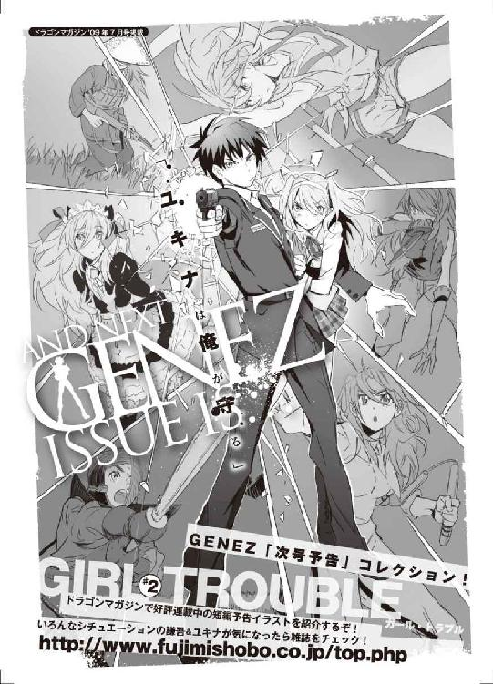
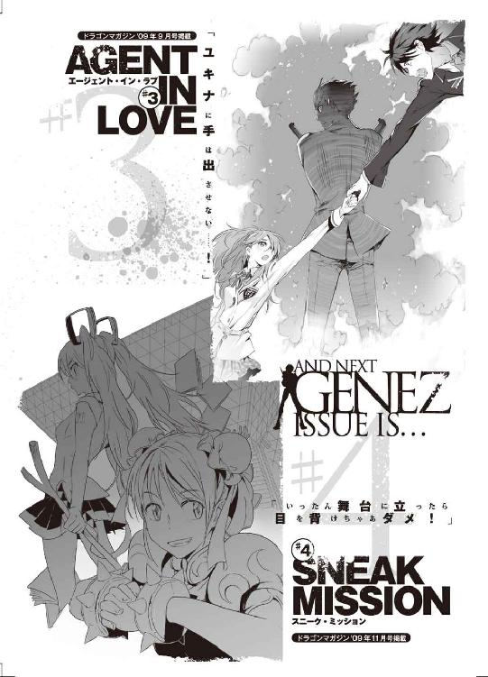
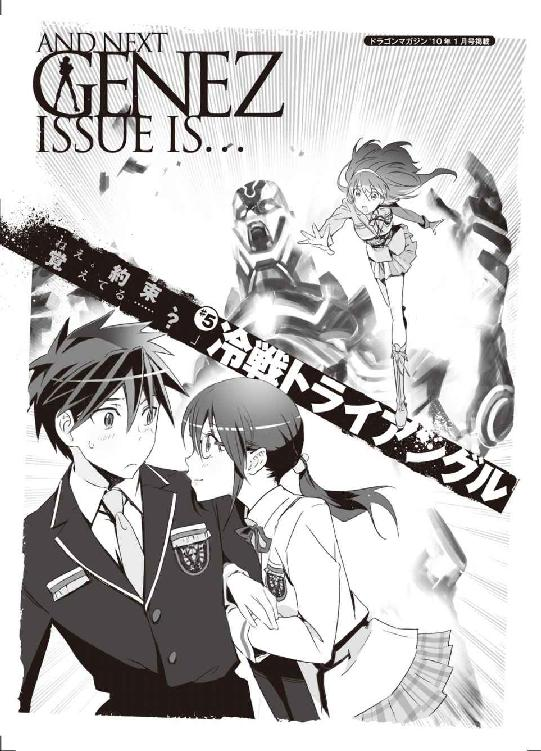
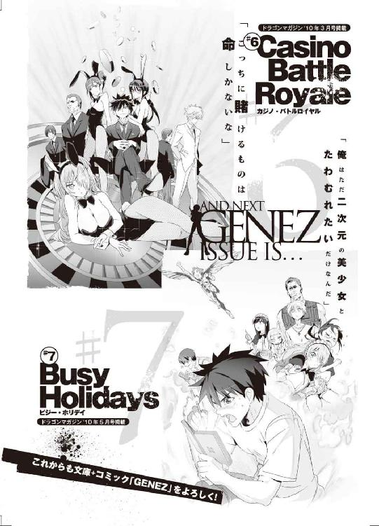
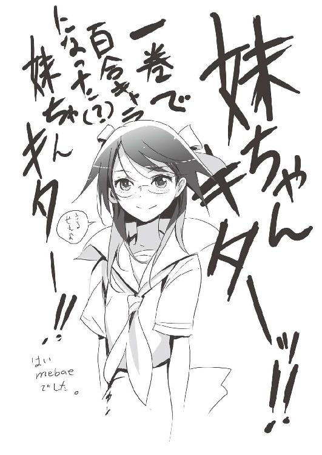
ＧＥＮＥＺ－４
ジーンズ
深見 真

平成22年6月25日 発行
発行者 山下直久
発行所 株式会社富士見書房
〒102-8144 東京都千代田区富士見1-12-14
http://www.fujimishobo.co.jp/
(C)2010 Makoto Fukami, mebae/Fujimishobo